关于
编程语言
Objective-C
Runtime
- Associated Objects
- initialize
- load
- Block
- Category
- Message Sending And Forwarding
- KVO
- KVC
- AutoreleasePool
- dealloc
- Tagged Pointer
- weak
- Object
Tips
Books
Objective-C
Runtime
- Associated Objects
- initialize
- load
- Block
- Category
- Message Sending And Forwarding
- KVO
- KVC
- AutoreleasePool
- dealloc
- Tagged Pointer
- weak
- Object
Tips
Books
Associated Objects
通过以下三个函数可以进行关联对象的相关操作：
void objc_setAssociatedObject(id object, const void *key, id value, objc_AssociationPolicy policy);
id objc_getAssociatedObject(id object, const void *key);
void objc_removeAssociatedObjects(id object);
key 应该是常量的，唯一的，在 setter 和 getter 方法中可以进行访问：
static char kAssociatedObjectKey;
objc_getAssociatedObject(self, &kAssociatedObjectKey);
但是由于 selector 是唯一的，所以可以直接使用 selector ：
https://twitter.com/bbum/status/3609098005
不要调用 objc_removeAssociatedObjects 来移除关联对象，因为会移除所有关联对象。正确的做法是调用 objc_setAssociatedObject 方法并传入 nil 来清除关联。
比起其他解决问题的方法，关联对象应该被视为最后的选择（事实上关联对象也不应该作为首选方法）。
AssociatedObject 解析
关联对象 AssociatedObject 完全解析 - 面向信仰编程
- 关联对象其实就是
ObjcAssociation对象 - 关联对象由
AssociationsManager管理并在AssociationsHashMap存储 - 对象的指针以及其对应
ObjectAssociationMap以键值对的形式存储在AssociationsHashMap中 ObjectAssociationMap则是用于存储关联对象的数据结构- 每一个对象都有一个标记位
has_assoc指示对象是否含有关联对象
iOS 中的关联对象

Weak Associated Object
Weak Associated Object | 张不坏的博客
起一个中间层，叫 container 或者 wrapper 都可以：
@interface WeakAssociatedObjectWrapper : NSObject
@property (nonatomic, weak) id object;
@end
@implementation WeakAssociatedObjectWrapper
@end
@interface UIView (ViewController)
@property (nonatomic, weak) UIViewController *vc;
@end
@implementation UIView (ViewController)
- (void)setVc:(UIViewController *)vc {
WeakAssociatedObjectWrapper *wrapper = [WeakAssociatedObjectWrapper new];
wrapper.object = vc;
objc_setAssociatedObject(self, @selector(vc), wrapper, OBJC_ASSOCIATION_RETAIN_NONATOMIC);
}
- (UIViewController *)vc {
WeakAssociatedObjectWrapper *wrapper = objc_getAssociatedObject(self, _cmd);
return wrapper.object;
}
@end
应用
ChenYilong/CYLDeallocBlockExecutor
通过 Associated Objects 在对象 dealloc 会释放的原理，可以给对象添加一个属性，然后在这个属性 dealloc 时进行相关操作，可以达到对象 dealloc 进行对应操作的目的。
initialize
官方文档
initialize会在第一次给当前类发送消息（即调用方法）时调用；- 先调用父类的，再调用子类的；
initialize是线程安全的，它会在第一次给类发送消息的当前线程中运行，而其它线程尝试给类发送消息的线程则需要等待initialize执行完毕；- 如果子类没有实现
initialize方法，则会调用父类的，所以一个initialize有可能会多次调用，我们可以通过对当前类进行判断来防止多次调用； - 因为
initialize有阻塞机制，所以尽量不要执行复杂的初始化方法，不然有可能会造成死锁； - 每个类的
initialize方法只会调用一次，如果需要分类和类的初始化方法都执行，可以使用load方法。
如何防止 initialize 方法多次调用：
+ (void)initialize {
if (self == [ClassName self]) {
// ... do the initialization ...
}
}
源码解析
initialize 的源码解析，与 load 不同，initialize 方法调用时，所有的类都已经加载到了内存中。
如何在 Swift 中使用 initialize
Handling the Deprecation of initialize()
load 和 initialize 方法在 Swift 中都不会调用，所以需要一个替代的方案，在 Swift 中也可以起到 load 或者 initialize 的作用。
一个简单的替代方案：
直接在 delegate 的 application(_:didFinishLaunchingWithOptions:) 的方法中调用对应的方法，但是这样会有不少缺点：
- 可能有大量的类需要处理，这会使得
delegate变得笨重，因为它直接依赖了这些类，即使说把这部分的方法调用挪至单独的功能模块中，这个模块也是直接依赖这些类； - 可能说没有权限来获取
delegate，在只是负责开发其中一小部分或者只是一个 SDK 时会有这种情况发生。
一个不简单的替代方案：
这个方案和 load 或者 initialize 方法类似，不需要主动调用，也不会影响 delegate 。
首先定义以下类和协议：
protocol SelfAware: class {
static func awake()
}
class NothingToSeeHere {
static func harmlessFunction() {
let typeCount = Int(objc_getClassList(nil, 0))
let types = UnsafeMutablePointer<AnyClass?>.allocate(capacity: typeCount)
let safeTypes = AutoreleasingUnsafeMutablePointer<AnyClass?>(types)
objc_getClassList(safeTypes, Int32(typeCount))
for index in 0 ..< typeCount { (types[index] as? SelfAware.Type)?.awake() }
types.deallocate(capacity: typeCount)
}
}
可以看到 harmlessFunction 方法通过 objc_getClassList 来获取所有的类，如果类支持 SelfAware 的 awake 方法，那么就会进行调用，接下来需要无侵入地调用 harmlessFunction 方法：
extension UIApplication {
private static let runOnce: Void = {
NothingToSeeHere.harmlessFunction()
}()
override open var next: UIResponder? {
// Called before applicationDidFinishLaunching
UIApplication.runOnce
return super.next
}
}
但是这里有个不好的地方，就是需要通过 objc_getClassList 来获取所有的类，也就是只能是 Objective-C 的类，如果是纯 Swift 的类，是不支持的。
load
原理
官方文档：
The order of initialization is as follows:
- All initializers in any framework you link to.
- All
+loadmethods in your image. - All C++ static initializers and C/C++
__attribute__(constructor)functions in your image. - All initializers in frameworks that link to you.
In addition:
- A class’s
+loadmethod is called after all of its superclasses’+loadmethods. - A category
+loadmethod is called after the class’s own+loadmethod.
运行时机： Objective-C 运行时会收集所有 +load 方法的类，然后在镜像加载完成后调用，时机在主函数运行前。
初始化顺序：
- 执行全部链接到的框架中的所有构造器；
- 镜像（ Image ) 中所有的
+load方法； - 镜像 （ Image ）中所有 C++ 静态构造器，以及 C/C++ 的
__attribute__(constructor)方法； - 执行全部链接到当前框架的全部框架的所有构造器.
特点：
- 类的
+load方法会在父类的+load方法调用后再调用； - 分类
Category的+load方法会在类的+load方法后调用； - Swift 中桥接到 Objective-C 的类不会自动调用
+load方法。
你真的了解 load 方法么？
详细说明了 +load 方法的调用时机：
0 +[XXObject load]
1 call_class_loads()
2 call_load_methods
3 load_images
4 dyld::notifySingle(dyld_image_states, ImageLoader const*)
11 _dyld_start
在有新的镜像加载后，都会调用 load_images 方法进行回调，这个方法是运行时在 _objc_init 方法中进行注册的：
dyld_register_image_state_change_handler(dyld_image_state_dependents_initialized, 0/*not batch*/, &load_images);
类的 +load 方法会在父类的 +load 方法调用后再调用：
static void schedule_class_load(Class cls)
{
if (!cls) return;
// 类是否已经 realized
assert(cls->isRealized());
// 判断类是否有调用过 +load
if (cls->data()->flags & RW_LOADED) return;
// 递归调用，先执行父类的 +load 方法
schedule_class_load(cls->superclass);
// 添加当前类至列表
add_class_to_loadable_list(cls);
// 设置为已调用过 +load
cls->setInfo(RW_LOADED);
}
分类的 +load 方法在类之后调用：
void call_load_methods(void)
{
static bool loading = NO;
bool more_categories;
loadMethodLock.assertLocked();
// 加载中，直接返回
if (loading) return;
loading = YES;
void *pool = objc_autoreleasePoolPush();
do {
// 调用类的 +load 方法，直到列表为空
while (loadable_classes_used > 0) {
// ➡️ 调用类的 +load 方法
call_class_loads();
}
// 调用分类的 +load 方法一次
more_categories = call_category_loads();
// 如果有类或者分类未调用 +load 方法，则尝试再调用一次
} while (loadable_classes_used > 0 || more_categories);
objc_autoreleasePoolPop(pool);
loading = NO;
}
调用分类 +load 方法时需要确保类已经加载：
if (cls && cls->isLoadable()) {
(*load_method)(cls, SEL_load);
cats[i].cat = nil;
}
iOS 中的 +load 方法
+load 方法的执行时机非常靠前，而且只会执行一次，所以一般来说我们可能会通过 +load 方法来执行一些 hook 操作，但是如果 +load 方法过多或者方法执行时间较长，就会影响增加应用的启动时间，所以在编写 +load 方法时需要非常小心。
监控 +load 方法的耗时
这篇文章讲述了如何监控 +load 方法的耗时：
实现有以下这几点需要注意：
dyld 加载的镜像中包含系统的镜像，需要对这块做过滤；
static bool isSelfDefinedImage(const char *imageName) {
return !strstr(imageName, "/Xcode.app/") &&
!strstr(imageName, "/Library/PrivateFrameworks/") &&
!strstr(imageName, "/System/Library/") &&
!strstr(imageName, "/usr/lib/");
}
static const struct mach_header **copyAllSelfDefinedImageHeader(unsigned int *outCount) {
unsigned int imageCount = _dyld_image_count();
unsigned int count = 0;
const struct mach_header **mhdrList = NULL;
if (imageCount > 0) {
mhdrList = (const struct mach_header **)malloc(sizeof(struct mach_header *) * imageCount);
for (unsigned int i = 0; i < imageCount; i++) {
const char *imageName = _dyld_get_image_name(i);
if (isSelfDefinedImage(imageName)) {
const struct mach_header *mhdr = _dyld_get_image_header(i);
mhdrList[count++] = mhdr;
}
}
mhdrList[count] = NULL;
}
if (outCount) *outCount = count;
return mhdrList;
}
如何获取定义了 +load 的类或者分类，在编译时期，包含 +load 的 class 和 category 会写入 Mach-O 文件 data 段的 __objc_nlcslist 和 __objc_nlcatlist 节，可以通过读取这两部分来获取 no lazy class 和 no lazy category 列表，即定义了 +load 方法的类或者分类
static NSArray <LMLoadInfo *> *getNoLazyArray(const struct mach_header *mhdr) {
NSMutableArray *noLazyArray = [NSMutableArray new];
unsigned long bytes = 0;
Class *clses = (Class *)getDataSection(mhdr, "__objc_nlclslist", &bytes);
for (unsigned int i = 0; i < bytes / sizeof(Class); i++) {
LMLoadInfo *info = [[LMLoadInfo alloc] initWithClass:clses[i]];
if (!shouldRejectClass(info.clsname)) [noLazyArray addObject:info];
}
bytes = 0;
Category *cats = getDataSection(mhdr, "__objc_nlcatlist", &bytes);
for (unsigned int i = 0; i < bytes / sizeof(Category); i++) {
LMLoadInfo *info = [[LMLoadInfo alloc] initWithCategory:cats[i]];
if (!shouldRejectClass(info.clsname)) [noLazyArray addObject:info];
}
return noLazyArray;
}
hook +load 方法：
static void swizzleLoadMethod(Class cls, Method method, LMLoadInfo *info) {
retry:
do {
SEL hookSel = getRandomLoadSelector();
Class metaCls = object_getClass(cls);
IMP hookImp = imp_implementationWithBlock(^ {
info->_start = CFAbsoluteTimeGetCurrent();
((void (*)(Class, SEL))objc_msgSend)(cls, hookSel);
info->_end = CFAbsoluteTimeGetCurrent();
if (!--LMAllLoadNumber) printLoadInfoWappers();
});
BOOL didAddMethod = class_addMethod(metaCls, hookSel, hookImp, method_getTypeEncoding(method));
if (!didAddMethod) goto retry;
info->_nSEL = hookSel;
Method hookMethod = class_getInstanceMethod(metaCls, hookSel);
method_exchangeImplementations(method, hookMethod);
} while(0);
}
static void hookAllLoadMethods(LMLoadInfoWrapper *infoWrapper) {
unsigned int count = 0;
Class metaCls = object_getClass(infoWrapper.cls);
Method *methodList = class_copyMethodList(metaCls, &count);
for (unsigned int i = 0; i < count; i++) {
Method method = methodList[i];
SEL sel = method_getName(method);
const char *name = sel_getName(sel);
if (!strcmp(name, "load")) {
IMP imp = method_getImplementation(method);
LMLoadInfo *info = [infoWrapper findLoadInfoByImp:imp];
if (!info) {
info = [infoWrapper findClassLoadInfo];
if (!info) continue;
}
swizzleLoadMethod(infoWrapper.cls, method, info);
}
}
free(methodList);
}
相应的实现：
使用 load 进行自动发通知和解耦
利用 +load 的方法调用时机较早，实现 AppDelegate 的瘦身：
/// FooModule.m
+ (void)load
{
__block id observer =
[[NSNotificationCenter defaultCenter]
addObserverForName:UIApplicationDidFinishLaunchingNotification
object:nil
queue:nil
usingBlock:^(NSNotification *note) {
[self setup]; // Do whatever you want
[[NSNotificationCenter defaultCenter] removeObserver:observer];
}];
}
+ load方法在足够早的时间点被调用；block版本的通知注册会产生一个__NSObserver *对象用来给外部remove观察者；block对observer对象的捕获早于函数的返回，所以若不加__block，会捕获到nil；- 在
block执行结束时移除observer，无需其他清理工作； - 这样，在模块内部就完成了在程序启动点代码的挂载。
Block
深入研究 Block 捕获外部变量和 __block 实现原理
深入研究 Block 捕获外部变量和 __block 实现原理
里面有提到作用域：
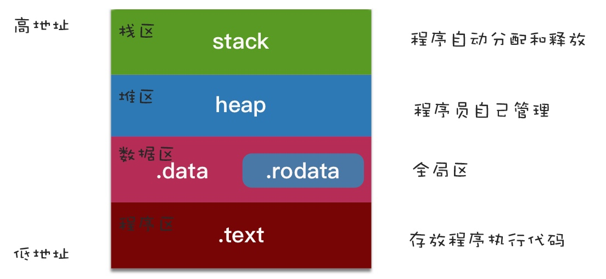
_NSConcreteStackBlock：只用到外部局部变量、成员属性变量，且没有强指针引用的block都是StackBlock。StackBlock的生命周期由系统控制的，一旦返回之后，就被系统销毁了。_NSConcreteMallocBlock：有强指针引用或copy修饰的成员属性引用的block会被复制一份到堆中成为MallocBlock，没有强指针引用即销毁，生命周期由程序员控制_NSConcreteGlobalBlock：没有用到外界变量或只用到全局变量、静态变量的block为_NSConcreteGlobalBlock，生命周期从创建到应用程序结束。
__block 结构体 __forwarding ：

Block 技巧与底层解析
Block 的实际结构：
/* Revised new layout. */
struct Block_descriptor {
unsigned long int reserved;
unsigned long int size;
void (*copy)(void *dst, void *src);
void (*dispose)(void *);
};
struct Block_layout {
void *isa;
int flags;
int reserved;
void (*invoke)(void *, ...);
struct Block_descriptor *descriptor;
/* Imported variables. */
};
_NSConcreteMallocBlock 无法直接创建，只能 _NSConcreteStackBlock 拷贝得到，而 Block 的拷贝最终都会调用 _Block_copy_internal 函数，所以从 _Block_copy_internal 函数中可以得出 _NSConcreteMallocBlock 是如何创建的：
static void *_Block_copy_internal(const void *arg, const int flags) {
struct Block_layout *aBlock;
...
aBlock = (struct Block_layout *)arg;
...
// Its a stack block. Make a copy.
if (!isGC) {
// 申请block的堆内存
struct Block_layout *result = malloc(aBlock->descriptor->size);
if (!result) return (void *)0;
// 拷贝栈中block到刚申请的堆内存中
memmove(result, aBlock, aBlock->descriptor->size); // bitcopy first
// reset refcount
result->flags &= ~(BLOCK_REFCOUNT_MASK); // XXX not needed
result->flags |= BLOCK_NEEDS_FREE | 1;
// 改变isa指向_NSConcreteMallocBlock，即堆block类型
result->isa = _NSConcreteMallocBlock;
if (result->flags & BLOCK_HAS_COPY_DISPOSE) {
//printf("calling block copy helper %p(%p, %p)...\n", aBlock->descriptor->copy, result, aBlock);
(*aBlock->descriptor->copy)(result, aBlock); // do fixup
}
return result;
}
else {
...
}
}
函数通过 memmove 将栈中的 Block 的内容拷贝到了堆中，并使 isa 指向了 _NSConcreteMallocBlock 。
Block 的拷贝代码在 _Block_copy_internal 函数中，根据 Block 的类型不同，拷贝过程中的操作也不同。
栈 Block 的拷贝不仅是拷贝了内容，而且由于从栈拷贝到堆中，还会进行一些额外的操作：
- 往
flags中并入BLOCK_NEEDS_FREE，并将引用计数设置为 1，表示 Block 需要释放，需要自行release； - 如果有辅助 copy 函数 (
BLOCK_HAS_COPY_DISPOSE)，那么就会调用辅助 copy 函数来拷贝 Block 捕获的变量。
...
struct Block_layout *result = malloc(aBlock->descriptor->size);
if (!result) return (void *)0;
memmove(result, aBlock, aBlock->descriptor->size); // bitcopy first
// reset refcount
result->flags &= ~(BLOCK_REFCOUNT_MASK); // XXX not needed
result->flags |= BLOCK_NEEDS_FREE | 1;
result->isa = _NSConcreteMallocBlock;
if (result->flags & BLOCK_HAS_COPY_DISPOSE) {
//printf("calling block copy helper %p(%p, %p)...\n", aBlock->descriptor->copy, result, aBlock);
(*aBlock->descriptor->copy)(result, aBlock); // do fixup
}
return result;
...
堆 Block 由于已经拷贝至堆中，所以其拷贝操作比较简单，首先需要判断是否有 BLOCK_FREE ，如果是，则表示是堆 Block ，那么只需要执行 latching_incr_int 操作，将 Block 的引用计数加 1 即可，只需要单纯地改变引用计数：
...
if (aBlock->flags & BLOCK_NEEDS_FREE) {
// latches on high
latching_incr_int(&aBlock->flags);
return aBlock;
}
...
全局 Block 不需要执行任何操作，只是直接返回了传入的 Block ：
...
else if (aBlock->flags & BLOCK_IS_GLOBAL) {
return aBlock;
}
...
// flags/_flags类型
enum {
/* See function implementation for a more complete description of these fields and combinations */
// 是一个对象
BLOCK_FIELD_IS_OBJECT = 3, /* id, NSObject, __attribute__((NSObject)), block, ... */
// 是一个block
BLOCK_FIELD_IS_BLOCK = 7, /* a block variable */
// 被__block修饰的变量
BLOCK_FIELD_IS_BYREF = 8, /* the on stack structure holding the __block variable */
// 被__weak修饰的变量，只能被辅助copy函数使用
BLOCK_FIELD_IS_WEAK = 16, /* declared __weak, only used in byref copy helpers */
// block辅助函数调用（告诉内部实现不要进行retain或者copy）
BLOCK_BYREF_CALLER = 128 /* called from __block (byref) copy/dispose support routines. */
};
// 设置不同属性对应的flags/_flags值
__block id 128+3
__weak block id 128+3+16
__block (^Block) 128+7
__weak __block (^Block) 128+7+16
struct Block_byref {
void *isa;
struct Block_byref *forwarding;
int flags; /* refcount; */
int size;
void (*byref_keep)(struct Block_byref *dst, struct Block_byref *src);
void (*byref_destroy)(struct Block_byref *);
/* long shared[0]; */
};
// 做下对比
struct __Block_byref_a_0 {
void *__isa;
__Block_byref_a_0 *__forwarding;
int __flags;
int __size;
int a;
};
__block 将原来的基本类型包装成了对象。因为以上两个结构体的前 4 个成员的类型都是一样的，内存空间排列一致，所以可以进行以下操作：
// 转换成C++代码
static void __main_block_copy_0(struct __main_block_impl_0*dst, struct __main_block_impl_0*src) {_Block_object_assign((void*)&dst->a, (void*)src->a, 8/*BLOCK_FIELD_IS_BYREF*/);}
// _Block_object_assign源码
void _Block_object_assign(void *destAddr, const void *object, const int flags) {
...
else if ((flags & BLOCK_FIELD_IS_BYREF) == BLOCK_FIELD_IS_BYREF) {
// copying a __block reference from the stack Block to the heap
// flags will indicate if it holds a __weak reference and needs a special isa
_Block_byref_assign_copy(destAddr, object, flags);
}
...
}
// _Block_byref_assign_copy源码
static void _Block_byref_assign_copy(void *dest, const void *arg, const int flags) {
// 这里因为前面4个成员的内存分布一样，所以直接转换后，使用Block_byref的成员变量名，能访问到__Block_byref_a_0的前面4个成员
struct Block_byref **destp = (struct Block_byref **)dest;
struct Block_byref *src = (struct Block_byref *)arg;
...
else if ((src->forwarding->flags & BLOCK_REFCOUNT_MASK) == 0) {
// 从main函数对__Block_byref_a_0的初始化，可以看到初始化时将flags赋值为0
// 这里表示第一次拷贝，会进行复制操作，并修改原来flags的值
// static int _Byref_flag_initial_value = BLOCK_NEEDS_FREE | 2;
// 可以看出，复制后，会并入BLOCK_NEEDS_FREE，后面的2是包装对象的初始引用计数（栈上持有+堆上持有）
...
copy->flags = src->flags | _Byref_flag_initial_value;
...
}
// 已经拷贝到堆了，只增加引用计数
else if ((src->forwarding->flags & BLOCK_NEEDS_FREE) == BLOCK_NEEDS_FREE) {
latching_incr_int(&src->forwarding->flags);
}
// 普通的赋值，里面最底层就*destptr = value;这句表达式
_Block_assign(src->forwarding, (void **)destp);
}
对象的辅助函数：
没有 __block 修饰：
typedef void(^Block)();
int main(int argc, const char * argv[]) {
@autoreleasepool {
NSObject *a = [[NSObject alloc] init];
Block block = ^ {
a;
};
}
return 0;
}
首先，在没有 __block 修饰时，对象编译转换的结果如下：
static void __main_block_func_0(struct __main_block_impl_0 *__cself) {
NSObject *a = __cself->a; // bound by copy
a;
}
static void __main_block_copy_0(struct __main_block_impl_0*dst, struct __main_block_impl_0*src) {_Block_object_assign((void*)&dst->a, (void*)src->a, 3/*BLOCK_FIELD_IS_OBJECT*/);}
static void __main_block_dispose_0(struct __main_block_impl_0*src) {_Block_object_dispose((void*)src->a, 3/*BLOCK_FIELD_IS_OBJECT*/);}
static struct __main_block_desc_0 {
size_t reserved;
size_t Block_size;
void (*copy)(struct __main_block_impl_0*, struct __main_block_impl_0*);
void (*dispose)(struct __main_block_impl_0*);
} __main_block_desc_0_DATA = { 0, sizeof(struct __main_block_impl_0),
对象在没有 __block 修饰时，并没有产生 __Block_byref_a_0 结构体，只是将标志位修改为 BLOCK_FIELD_IS_OBJECT 。而在 _Block_object_assign 中对应的判断分支代码如下：
v...
else if ((flags & BLOCK_FIELD_IS_OBJECT) == BLOCK_FIELD_IS_OBJECT) {
_Block_retain_object(object);
_Block_assign((void *)object, destAddr);
}
...
Block 在捕获对象时会进行 retain 操作，增加引用计数。
在有 __block 修饰时：
typedef void(^Block)();
int main(int argc, const char * argv[]) {
@autoreleasepool {
__block NSObject *a = [[NSObject alloc] init];
Block block = ^ {
a;
};
}
return 0;
}
// 转换后：
struct __Block_byref_a_0 {
void *__isa;
__Block_byref_a_0 *__forwarding;
int __flags;
int __size;
void (*__Block_byref_id_object_copy)(void*, void*);
void (*__Block_byref_id_object_dispose)(void*);
NSObject *a;
};
int main(int argc, const char * argv[]) {
/* @autoreleasepool */ { __AtAutoreleasePool __autoreleasepool;
attribute__((__blocks__(byref))) __Block_byref_a_0 a = {(void*)0,(__Block_byref_a_0 *)&a, 33554432, sizeof(__Block_byref_a_0), __Block_byref_id_object_copy_131, __Block_byref_id_object_dispose_131,....};
Block block = (void (*)())&__main_block_impl_0((void *)__main_block_func_0, &__main_block_desc_0_DATA, (__Block_byref_a_0 *)&a, 570425344);
}
// 以下的40表示__Block_byref_a_0对象a的位移（4个指针(32字节)＋2个int变量(8字节)＝40字节）
static void __Block_byref_id_object_copy_131(void *dst, void *src) {
_Block_object_assign((char*)dst + 40, *(void * *) ((char*)src + 40), 131);
}
static void __Block_byref_id_object_dispose_131(void *src) {
_Block_object_dispose(*(void * *) ((char*)src + 40), 131);
}
__Block_byref_a_0 新增两个内存管理的辅助函数 __Block_byref_id_object_copy 和 __Block_byref_id_object_dispose 。最后的 131 参数表示 BLOCK_BYREF_CALLER|BLOCK_FIELD_IS_OBJECT ， BLOCK_BYREF_CALLER 用于表明不需要对 __block 修饰的 a 对象进行 retain 或者 copy ：
if ((flags & BLOCK_BYREF_CALLER) == BLOCK_BYREF_CALLER) {
...
else {
// do *not* retain or *copy* __block variables whatever they are
_Block_assign((void *)object, destAddr);
}
}
_Block_byref_assign_copy 函数的以下代码会对上面的辅助函数 __Block_byref_id_object_copy_131 进行调用， 570425344 表示 BLOCK_HAS_COPY_DISPOSE|BLOCK_HAS_DESCRIPTOR ，所以会执行以下相关源码：
if (src->flags & BLOCK_HAS_COPY_DISPOSE) {
// Trust copy helper to copy everything of interest
// If more than one field shows up in a byref block this is wrong XXX
copy->byref_keep = src->byref_keep;
copy->byref_destroy = src->byref_destroy;
(*src->byref_keep)(copy, src);
}
一道 Block 面试题的深入挖掘
借由 NSNotificationCenter 和 token 说明实际编码中 Block 需要注意的地方以及原理。
Block 语法快速查询
由于 Objective-C 的 Block 语法实在是太难记了，反观 Swift 😂 ，所以有了这么一个快速查看 Block 语法的网站：
How Do I Declare A Block in Objective-C?
Obj-C 中的 Block
Objective-C 中的 Block 相当于匿名函数。
通过 xcrun -sdk iphoneos clang -arch arm64 -rewrite-objc main.m -o main.cpp 转换为 C++ 代码可以查看 Block 的结构体。
__main_3_block_impl_0 为具体 Block 对应的 struct ，包含 __block_impl 和 __main_3_block_desc_0 。
// Block 实现的结构体
struct __block_impl {
void *isa; // isa 指针，即 Block 也是 id 类型，即 Obj-C 对象
int Flags; // 标记，默认会被初始化为 0
int Reserved; // 保留域（ABI 兼容），默认 0
void *FuncPtr; // Block 代码块的函数指针
};
// ➡️ Block 结构体
struct __main_3_block_impl_0 {
struct __block_impl impl; // 实现（非指针）
struct __main_3_block_desc_0* Desc; // 描述信息（指针）
// 构造函数
__main_3_block_impl_0(void *fp, struct __main_3_block_desc_0 *desc, int flags=0) {
impl.isa = &_NSConcreteStackBlock; // Block 作为 Obj-C 对象，那么 isa 将指向其类对象，即 _NSConcreteStackBlock
impl.Flags = flags;
impl.FuncPtr = fp;
Desc = desc;
}
};
// Block 内代码块封装在该 C 语言静态函数中，函数命名规则：__CALLER_METHOD_NAME_block_func_NUMBER
// 类似 Obj-C 实例方法参数 self 或 C++ 实例方法参数 this，__cself 为指向 Block 结构体的变量
static void __main_3_block_func_0(struct __main_3_block_impl_0 *__cself) {
NSLog((NSString *)&__NSConstantStringImpl__var_folders_ps_0m9gnvtj0893vpf1cr595djh0000gn_T_main_b9596e_mi_0);
}
// Block 描述信息的结构体静态变量
static struct __main_3_block_desc_0 {
size_t reserved; // 保留域，默认 0
size_t Block_size; // Block 大小，sizeof 整个 Block 结构体 ⬇️
} __main_3_block_desc_0_DATA = { 0, sizeof(struct __main_3_block_impl_0)};
// 主函数
int main_3(int argc, const char * argv[]) {
// 通过 __main_3_block_impl_0 结构体的构造函数初始化，参数为静态函数和描述信息静态变量的地址，将地址存储在 block 变量中
// 忽略类型转换：block = &__main_3_block_impl_0(__main_3_block_func_0, &__main_3_block_desc_0_DATA));
void(*block)(void) = ((void (*)())&__main_3_block_impl_0((void *)__main_3_block_func_0, &__main_3_block_desc_0_DATA));
// 执行 Block（参数 block 即静态函数中的参数 __cself）
// 忽略类型转换：block->FuncPtr(block);
// 在 __main_block_impl_0 结构体中，impl 是第一个变量，因此其与结构体本身的首地址一致，因此可以强转
((void (*)(__block_impl *))((__block_impl *)block)->FuncPtr)((__block_impl *)block);
return 0;
}
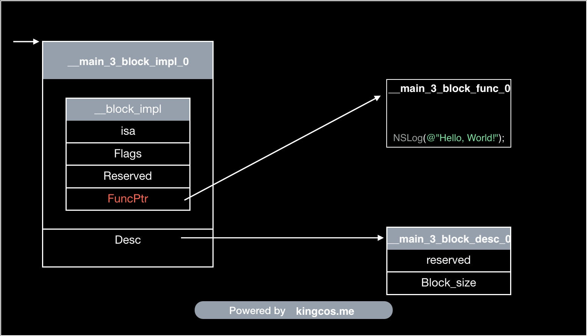
Block 对于捕获变量的不同也会有不同的处理
- 局部变量，进行值拷贝传递，修改原有的值不影响 Block 所捕获的值；
- 显式或者隐式捕获
self，Block 会持有self的引用，有可能触发我们常说的循环引用； - 静态局部变量， 虽然作用域在代码块内，但是其生命周期是全局的，所以 Block 直接持有对变量的引用；
- 全局变量，Block 不会捕获，使用时直接进行读取。
Block 的类型：
__NSGlobalBlock__ ，不捕获自动变量，即运行时不依赖上下文，放在内存的数据段 (Data Section) ，和全局变量同一个 Section 。对 __NSGlobalBlock__ 执行拷贝后得到的仍是 __NSGlobalBlock__ 。
__NSStackBlock__ ，当 Block 捕获了外界自动变量时，则会被分配在栈区，变成 __NSStackBlock__ ，开发者无需关心其生命周期。
__NSMallocBlock__ ，Block 分配在堆区，需要开发者手动管理其生命周期，ARC 下编译器会根据情况将 __NSStackBlock__ 类型的 Block 自动 copy 到堆上，将 Block 的 isa 设置为 _NSConcreteMallocBlock ，以下操作会将 Block copy 到堆上：
- 强指针或者属性指向的 Block ；
- Block 作为函数值会自动拷贝；
- Block 作为 Cocoa API 中方法名含有
usingBlock的参数时会自动拷贝； - Block 作为 GCD API 参数时会被自动拷贝；
__block 声明的变量：
Block 内可以直接修改
__block 声明会将变量封装为对应的结构体，而不同的变量就会生成不同的结构体。 __block 变量从声明后，无论在 Block 内外去访问均是通过结构体的 __forwarding 指针即 blockVar.__forwarding->blockVar 。当 __block 变量在栈上时， blockVar.__forwarding->blockVar 就等同于直接通过 blockVar->blockVar 来访问的，因为此时 __forwarding 就指向栈上的结构体本身；而当 Block 拷贝到堆上时， __block 变量也会被拷贝到堆上，此时栈上的 __forwarding 将替换为指向堆上的结构体，而堆上的结构体里的 __forwarding 将指向堆上的结构体本身，从而保证后续的数据变动均是在堆上。
上面说到 Block 会生成不同的结构体，也就说使用 Block 实现的功能代码量会较多。

循环引用：
typedef void(^BlockType_5)(void);
@interface Foo_9 : NSObject
@property (nonatomic, assign) NSUInteger bar;
@property (nonatomic, copy) BlockType_5 block;
@end
@implementation Foo_9
- (void)dealloc
{
#if !__has_feature(objc_arc)
[super dealloc];
#endifNSLog(@"dealloc");
}
- (void)foo_1 {
// Block 捕获了 self，其强引用了 Block，导致双方都无法释放
self.block = ^{
// WARNING: Capturing 'self' strongly in this block is likely to lead to a retain cycle
NSLog(@"%lu", (unsigned long)self.bar);
// WARNING: Block implicitly retains 'self'; explicitly mention 'self' to indicate this is intended behavior
NSLog(@"%lu", (unsigned long)_bar); // self->_bar
};
}
@end
int main_22(int argc, const char * argv[]) {
#if __has_feature(objc_arc)
Foo_9 *f = [[Foo_9 alloc] init];
f.bar = 20;
f.block = ^{
// Block 捕获了 f，其强引用了 Block，导致双方都无法释放
// WARNING: Capturing 'f' strongly in this block is likely to lead to a retain cycle
NSLog(@"%lu", (unsigned long)f.bar);
};
f.block();
[f foo_1];
// Never call dealloc
#endifreturn 0;
}
// OUTPUT:
// 20

用 Block 实现 delegate 方法
使用 NSInvocation ，消息转化机制和 Block 结构体获取 NSMethodSignature 。
NSInvocation 需要注意的地方：
方法的自定义参数从 index 2 开始，前两个参数是接收消息的对象和方法的 SEL ；
-getArgument:atIndex: 和 -getReturnvalue: 方法中获取的对象不会进行 retain ，所以不能直接使用具体的对象指针，只能使用 vod * ：
// 错误代码
NSString *bar = nil;
[invocation getArgument:&bar atIndex:2];
NSString *result = nil;
[invocation getReturnValue:&result];
// 正确代码
void *bar = nil;
//__unsafe_unretained NSString *bar = nil;
//__weak NSString *bar = nil;
[invocation getArgument:&bar atIndex:2];
void *result = nil;
//__unsafe_unretained NSString *result = nil;
//__weak NSString *result = nil;
[invocation getReturnValue:&result];
如果是在两个 NSInvocation 对象间传递参数/返回值，可以直接传入指针获取和设置目标地址：
....
NSInvocation *invocation = [NSInvocation invocationWithMethodSignature:signature];
NSInvocation *shadowInvocation = [NSInvocation invocationWithMethodSignature:signature];
....
void *resultBuffer = malloc(invocation.methodSignature.methodReturnLength);
memset(resultBuffer, 0, invocation.methodSignature.methodReturnLength);
[invocation getReturnValue:resultBuffer];
[shadowInvocation setReturnValue:resultBuffer];
....
free(resultBuffer);
从协议中获取方法签名，利用 protocol_getMethodDescription 函数，可以获取到描述类型的 C 字符串，再通过这个字符串构造方法签名。针对协议中的接口有 required 和 optional 两种，并且不允许重复这一特点，可以创建构造方法签名的函数：
static NSMethodSignature *tbv_getProtocolMethodSignature(Protocol *protocol, SEL selector, BOOL isInstanceMethod) {
struct objc_method_description methodDescription = protocol_getMethodDescription(protocol, selector, YES, isInstanceMethod);
if (!methodDescription.name) {
methodDescription = protocol_getMethodDescription(protocol, selector, NO, isInstanceMethod);
}
return [NSMethodSignature signatureWithObjCTypes:methodDescription.types];
}
第三个参数表示是否为 required ，如果从 required 中获取不到对应的 objc_method_description ，再从 optional 中获取：
从 Block 中获取方法签名，虽然苹果没有提供公开的 API 给开发者获取，但是可以通过自定义一个与 Block 结构相同的 struct ，通过这个 struct 来获取方法签名：
// Block internals.
typedef NS_OPTIONS(int, TBVBlockFlags) {
TBVBlockFlagsHasCopyDisposeHelpers = (1 << 25),
TBVBlockFlagsHasSignature = (1 << 30)
};
typedef struct tbv_block {
__unused Class isa;
TBVBlockFlags flags;
__unused int reserved;
void (__unused *invoke)(struct tbv_block *block, ...);
struct {
unsigned long int reserved;
unsigned long int size;
// requires TBVBlockFlagsHasCopyDisposeHelpers
void (*copy)(void *dst, const void *src);
void (*dispose)(const void *);
// requires TBVBlockFlagsHasSignature
const char *signature;
const char *layout;
} *descriptor;
// imported variables
} *TBVBlockRef;
// 使用自定义的 TBVBlockRef 获取 descriptor
static NSMethodSignature *tbv_signatureForBlock(id block) {
TBVBlockRef layout = (__bridge TBVBlockRef)(block);
// 没有签名，直接返回空
if (!(layout->flags & TBVBlockFlagsHasSignature)) {
return nil;
}
// 获取 descriptor 指针
void *desc = layout->descriptor;
// 跳过 reserved 和 size 成员
desc += 2 * sizeof(unsigned long int);
// 如果有 Helpers 函数， 跳过 copy 和 dispose 成员
if (layout->flags & TBVBlockFlagsHasCopyDisposeHelpers) {
desc += 2 * sizeof(void *);
}
// desc 为 signature 指针的地址，转换下给 objcTypes
char *objcTypes = (*(char **)desc);
return [NSMethodSignature signatureWithObjCTypes:objcTypes];
}
为了确保 Block 和方法两者的参数是相同的，需要对两者的签名进行匹配，即检验返回值类型和参数类型是否相同：
static BOOL tbv_isCompatibleBlockSignature(NSMethodSignature *blockSignature, NSMethodSignature *methodSignature) {
NSCParameterAssert(blockSignature);
NSCParameterAssert(methodSignature);
if ([blockSignature isEqual:methodSignature]) {
return YES;
}
// block 参数个数需要小于 method 的参数个数 (针对 block 调用替换 method 调用)
// 两者返回类型需要一致
if (blockSignature.numberOfArguments >= methodSignature.numberOfArguments ||
blockSignature.methodReturnType[0] != methodSignature.methodReturnType[0]) {
return NO;
}
// 参数类型需要一致
BOOL compatibleSignature = YES;
// 自定义参数从第二个开始
for (int idx = 2; idx < blockSignature.numberOfArguments; idx++) {
// block 相比 method ，默认参数少了 SEL
// method: id(@) SEL(:) ....
// block: block(@?) ....
const char *methodArgument = [methodSignature getArgumentTypeAtIndex:idx];
const char *blockArgument = [blockSignature getArgumentTypeAtIndex:idx - 1];
if (!methodArgument || !blockArgument || methodArgument[0] != blockArgument[0]) {
compatibleSignature = NO;
break;
}
}
return compatibleSignature;
}
调用 Block 的 NSInvocation ，由于直接调用的是 delegate 方法，在转发时接收到的是方法对应的 NSInvocation ，所以需要将其的参数和返回值传递给 Block 的 NSInvocation ：
- (void)invokeWithMethodInvocation:(NSInvocation *)methodInvocation {
NSParameterAssert(methodInvocation);
NSAssert([self.methodSignature isEqual:methodInvocation.methodSignature], @"Method invocation's signature is not compatible with block signature");
NSMethodSignature *methodSignature = methodInvocation.methodSignature;
NSInvocation *blockInvocation = [NSInvocation invocationWithMethodSignature:self.blockSignature];
void *argumentBuffer = NULL;
for (int idx = 2; idx < methodSignature.numberOfArguments; idx++) {
// 获取参数类型
const char *type = [methodSignature getArgumentTypeAtIndex:idx];
NSUInteger size = 0;
// 获取参数大小
NSGetSizeAndAlignment(type, &size, NULL);
// 参数缓存
if (!(argumentBuffer = reallocf(argumentBuffer, size))) {
return;
}
// 把 method 的参数传递给 block
[methodInvocation getArgument:argumentBuffer atIndex:idx];
[blockInvocation setArgument:argumentBuffer atIndex:idx - 1];
}
// 调用 block
[blockInvocation invokeWithTarget:self.block];
// 返回值缓存
if (methodSignature.methodReturnLength &&
(argumentBuffer = reallocf(argumentBuffer, methodSignature.methodReturnLength))) {
// 把 block 的返回值传递给 method
[blockInvocation getReturnValue:argumentBuffer];
[methodInvocation setReturnValue:argumentBuffer];
}
// 释放缓存
free(argumentBuffer);
}
// reallocf 函数是 realloc 函数的增强版，它可以在后者无法申请到堆空间时，释放旧的堆空间：
void *reallocf(void *p, size_t s) {
void *tmp = realloc(p, s);
if(tmp) return tmp;
free(p);
return NULL;
}
最后是通过消息转发的 forwardInvocaion: 方法进行转发：
- (void)forwardInvocation:(NSInvocation *)invocation {
TBVBlockInvocation *blockInvocation = self.selectorInvocationMap[NSStringFromSelector(invocation.selector)];
[blockInvocation invokeWithMethodInvocation:invocation];
}
- (NSMethodSignature *)methodSignatureForSelector:(SEL)sel {
return self.selectorInvocationMap[NSStringFromSelector(sel)].methodSignature;
}
- (BOOL)respondsToSelector:(SEL)aSelector {
return !!self.selectorInvocationMap[NSStringFromSelector(aSelector)];
}
如何获取 Block 捕获的对象
由于 Objective-C 使用引用计数作为内存管理方法，且 Block 会强引用所捕获的对象，所以 Block 经常会造成引用循环。本文讲述了如何通过 Block 的布局，捕获变量排序来获取 Block 强引用的对象。
Block 捕获的对象会统一放在 layout 的 descriptor 后面，即 sr_block_layout 结构体的 imported variables 部分，这种操作可以看作在 sr_block_layout 尾部定义了一个 0 长数组，可以根据实际捕获变量的大小，给捕获区域申请对应的内存空间，只不过这一操作由编译器完成 :
struct sr_block_layout {
void *isa;
int flags;
int reserved;
void (*invoke)(void *, ...);
struct sr_block_descriptor *descriptor;
char captured[0];
};
// 标志位不一样，这个结构的实际布局也会有差别，这里简单地放在一起好阅读
struct sr_block_descriptor {
unsigned long reserved; // Block_descriptor_1
unsigned long size; // Block_descriptor_1
void (*)(void *dst, void *src); // Block_descriptor_2 BLOCK_HAS_COPY_DISPOSE
void (*dispose)(void *); // Block_descriptor_2
const char *signature; // Block_descriptor_3 BLOCK_HAS_SIGNATURE
const char *layout; // Block_descriptor_3 contents depend on BLOCK_HAS_EXTENDED_LAYOUT
};
Block 的捕获区域布局有特定的排序规则：
在对齐字节数 ( alignment ) 不相等时，捕获的实体按照 alignment 降序排序 ( C 结构体比较特殊，即使整体占用空间比指针变量大，也排在对象指针后面)，否则按照以下类型排序：
__strong修饰对象指针变量__block修饰对象指针变量__weak修饰对象指针变量- 其他变量
一个例子：
NSObject *o1 = [NSObject new];
__weak NSObject *o2 = o1;
__block NSObject *o3 = o1;
unsigned long long j = 4;
int i = 3;
char c = 'a';
void (^blk)(void) = ^{
i;
c;
o1;
o2;
o3;
j;
};
输出：
(lldb) x/69bx layout
0x10200d940: 0x70 0x21 0x7b 0xa6 0xff 0x7f 0x00 0x00
0x10200d948: 0x02 0x00 0x00 0xc3 0x00 0x00 0x00 0x00
0x10200d950: 0xf0 0x1b 0x00 0x00 0x01 0x00 0x00 0x00
0x10200d958: 0xf8 0x20 0x00 0x00 0x01 0x00 0x00 0x00
0x10200d960: 0xa0 0xf6 0x00 0x02 0x01 0x00 0x00 0x00 // o1
0x10200d968: 0x90 0xd9 0x00 0x02 0x01 0x00 0x00 0x00 // o3
0x10200d970: 0xa0 0xf6 0x00 0x02 0x01 0x00 0x00 0x00 // o2
0x10200d978: 0x04 0x00 0x00 0x00 0x00 0x00 0x00 0x00 // j
0x10200d980: 0x03 0x00 0x00 0x00 0x61 // i c
(lldb) p o1
(NSObject *) $1 = 0x000000010200f6a0
可以看到，小端模式下，捕获的 o1 和 o2 指针变量值为 0x10200f6a0 ，对应内存地址为 0x10200d960 和 0x10200d970 ，而 o3 因为被 __block 修饰，编译器为 o3 捕获变量包装了一层 byref 结构，所以其值为 byref 结构的地址 0x102000d990 ，而不是 0x10200f6a0 ，捕获的 j 变量地址为 0x10200d978，i 变量地址为 0x10200d980，c 字符变量紧随其后。
通过分析 descriptor 的 layout 信息则可以获取捕获到的对象个数。
// block
// Extended layout encoding.
// Values for Block_descriptor_3->layout with BLOCK_HAS_EXTENDED_LAYOUT
// and for Block_byref_3->layout with BLOCK_BYREF_LAYOUT_EXTENDED
// If the layout field is less than 0x1000, then it is a compact encoding
// of the form 0xXYZ: X strong pointers, then Y byref pointers,
// then Z weak pointers.
// If the layout field is 0x1000 or greater, it points to a
// string of layout bytes. Each byte is of the form 0xPN.
// Operator P is from the list below. Value N is a parameter for the operator.
enum {
...
BLOCK_LAYOUT_NON_OBJECT_BYTES = 1, // N bytes non-objects
BLOCK_LAYOUT_NON_OBJECT_WORDS = 2, // N words non-objects
BLOCK_LAYOUT_STRONG = 3, // N words strong pointers
BLOCK_LAYOUT_BYREF = 4, // N words byref pointers
BLOCK_LAYOUT_WEAK = 5, // N words weak pointers
...
};
// clang
/// InlineLayoutInstruction - This routine produce an inline instruction for the
/// block variable layout if it can. If not, it returns 0. Rules are as follow:
/// If ((uintptr_t) layout) < (1 << 12), the layout is inline. In the 64bit world,
/// an inline layout of value 0x0000000000000xyz is interpreted as follows:
/// x captured object pointers of BLOCK_LAYOUT_STRONG. Followed by
/// y captured object of BLOCK_LAYOUT_BYREF. Followed by
/// z captured object of BLOCK_LAYOUT_WEAK. If any of the above is missing, zero
/// replaces it. For example, 0x00000x00 means x BLOCK_LAYOUT_STRONG and no
/// BLOCK_LAYOUT_BYREF and no BLOCK_LAYOUT_WEAK objects are captured.`
descriptor->layout 会包含捕获的对象个数，且会根据 __strong ， __block 和 __weak 进行区分。
NSObject *o1 = [NSObject new];
__block NSObject *o3 = o1;
__weak NSObject *o2 = o1;
NSObject *o4 = o1;
... // 5 - 18
NSObject *o19 = o1;
void (^blk)(void) = ^{
o1;
o2;
o3;
o4;
... // 5 - 18
o19;
};
(lldb) p/x (long)layout->descriptor->layout
(long) $0 = 0x0000000100002f44
(lldb) x/8bx layout->descriptor->layout
0x100002f44: 0x3f 0x30 0x40 0x50 0x00 0x76 0x31 0x36
由于结构体的布局顺序在生命时就确定了，无法像 Block 那样在编译时再根据变量类型，修饰符进行调整，所以如果结构体中有类型为对象指针的字段，就需要额外的信息来进行记录，这也会影响 layout 。
使用 __block 修饰的捕获变量首先会转换成 byref 结构，然后再由这个结构去持有实际的变量， Block 只负责管理 byref ：
struct sr_block_byref {
void *isa;
struct sr_block_byref *forwarding;
volatile int32_t flags; // contains ref count
uint32_t size;
// requires BLOCK_BYREF_HAS_COPY_DISPOSE
void (*byref_keep)(struct sr_block_byref *dst, struct sr_block_byref *src);
void (*byref_destroy)(struct sr_block_byref *);
// requires BLOCK_BYREF_LAYOUT_EXTENDED
const char *layout;
};
这里使用 layout 的原因是需要根据不同的捕获变量记录不同的信息，具体的实现可以查看原文。
了解完 Block 的捕获区域的内存布局后，就可以通过内存布局来获取强引用对象了：
- 被 Block 强引用
- 被 byref 结构强引用
完整的代码在这里：
另一种获取 Block 强引用对象的方式
facebook/FBRetainCycleDetector
FBRetainCycleDetector 也提供了获取 Block 强引用对象的功能，与上面的分析 Block 捕获区域的内存布局方式不同，使用了一种比较取巧的方式。
获取 dispose_helper ， dispose_helper 作为 Block 的辅助函数，在 Block 析构时会调用，然后给强引用对象发送 release 消息，借用这个特性进行处理。
struct BlockDescriptor {
unsigned long int reserved; // NULL
unsigned long int size;
// optional helper functions
void (*copy_helper)(void *dst, void *src); // IFF (1<<25)
void (*dispose_helper)(void *src); // IFF (1<<25)
const char *signature; // IFF (1<<30)
};
另外一个辅助类就是 FBBlockStrongRelationDetector ， FBBlockStrongRelationDetector 重写了 release 方法和新增了一个 trueRelease 方法：
- (oneway void)release
{
_strong = YES;
}
- (oneway void)trueRelease
{
[super release];
}
FBBlockStrongRelationDetector 同时也可以被当作 Block 来处理，当 Block 中又引用了 Block 时，它会尝试调用 byref_dispose ，所以 FBBlockStrongRelationDetector 也定义了和 Block 相同的变量布局：
struct _block_byref_block;
@interface FBBlockStrongRelationDetector : NSObject
{
// __block fakery
void *forwarding;
int flags; //refcount;
int size;
void (*byref_keep)(struct _block_byref_block *dst, struct _block_byref_block *src);
void (*byref_dispose)(struct _block_byref_block *);
void *captured[16];
}
在获取强引用对象索引的实现中，会在自动释放迟中执行 dispose_helper(obj) 方法，给每个 强引用对象对应的 FBBlockStrongRelationDetector 发送 release 消息，这样就可以拿到它们的索引值，从而获取对应的对象。
static NSIndexSet *_GetBlockStrongLayout(void *block) {
...
void (*dispose_helper)(void *src) = blockLiteral->descriptor->dispose_helper;
const size_t ptrSize = sizeof(void *);
const size_t elements = (blockLiteral->descriptor->size + ptrSize - 1) / ptrSize;
void *obj[elements];
void *detectors[elements];
for (size_t i = 0; i < elements; ++i) {
FBBlockStrongRelationDetector *detector = [FBBlockStrongRelationDetector new];
obj[i] = detectors[i] = detector;
}
@autoreleasepool {
dispose_helper(obj);
}
NSMutableIndexSet *layout = [NSMutableIndexSet indexSet];
for (size_t i = 0; i < elements; ++i) {
FBBlockStrongRelationDetector *detector = (FBBlockStrongRelationDetector *)(detectors[i]);
if (detector.isStrong) {
[layout addIndex:i];
}
[detector trueRelease];
}
return layout;
}
LLVM 关于 Block 的文档
Category
官方文档
Category 的作用：
- 为已存在的类添加方法；
- 将类的实现分开在不同的代码文件里，减少单个代码文件的行数，将不同的功能组织到不同的 Category ，可以由多个开发者共同开发同一个类，按需加载对应的 Category ；
- 声明私有方法，借此将私有方法公开，方便调用；
- 模拟多继承；
- Method Swizzling ；
- 结合 Associated Objects 和 Category 给已有的类新增 Property ；
- 覆盖主类的实现（也可以说是副作用）。
深入理解 Category
深入解析 Category ：
- Category 和 Extension 的不同；
- 源码解析，Category 生成的
sturct； - Category 的属性，方法等是如何在通过 runtime 追加到主类中；
- Category 的加载顺序；
- Category 与 Associated Objects 。
如何调用被覆盖掉的主类方法：
Class currentClass = [MyClass class];
MyClass *my = [[MyClass alloc] init];
if (currentClass) {
unsigned int methodCount;
Method *methodList = class_copyMethodList(currentClass, &methodCount);
IMP lastImp = NULL;
SEL lastSel = NULL;
for (NSInteger i = 0; i < methodCount; i++) {
Method method = methodList[i];
NSString *methodName = [NSString stringWithCString:sel_getName(method_getName(method))
encoding:NSUTF8StringEncoding];
if ([@"printName" isEqualToString:methodName]) {
lastImp = method_getImplementation(method);
lastSel = method_getName(method);
}
}
typedef void (*fn)(id,SEL);
if (lastImp != NULL) {
fn f = (fn)lastImp;
f(my,lastSel);
}
free(methodList);
}
这里是顺序遍历，可以使用逆序遍历，找到第一个 IMP 就返回，会快那么一点点。
iOS 中的 Category
这篇文章非常详细，从 realloc 到 memmove 和 memcpy 都有讲：

Message Sending & Forwarding
消息发送与转发
神经病院 Objective-C Runtime 住院第二天--消息发送与转发
作者画了一张非常清晰的流程图，可以先看图再看文章。
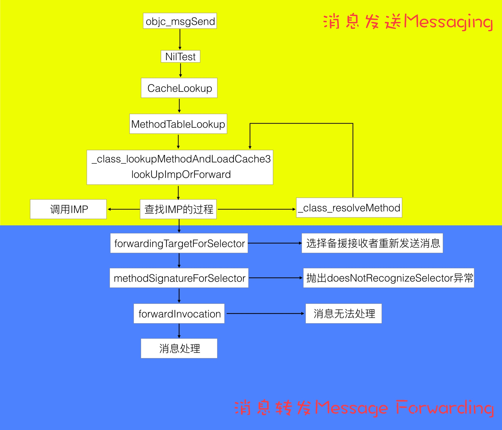
消息发送与转发机制原理
这里有说到为什么 objc_msgSend 要使用汇编进行处理：
其实在 objc-msg-x86_64.s 中包含了多个版本的 objc_msgSend 方法，它们是根据返回值的类型和调用者的类型分别处理的：
objc_msgSendSuper:向父类发消息，返回值类型为idobjc_msgSend_fpret:返回值类型为 floating-point，其中包含objc_msgSend_fp2ret入口处理返回值类型为long double的情况objc_msgSend_stret:返回值为结构体objc_msgSendSuper_stret:向父类发消息，返回值类型为结构体
当需要发送消息时，编译器会生成中间代码，根据情况分别调用 objc_msgSend, objc_msgSend_stret, objc_msgSendSuper, 或 objc_msgSendSuper_stret 其中之一。
这也是为什么 objc_msgSend 要用汇编语言而不是 OC、C 或 C++ 语言来实现，因为单独一个方法定义满足不了多种类型返回值，有的方法返回 id，有的返回 int。考虑到不同类型参数返回值排列组合映射不同方法签名（method signature）的问题，那 switch 语句得老长了。。。**这些原因可以总结为 Calling Convention，也就是说函数调用者与被调用者必须约定好参数与返回值在不同架构处理器上的存取规则，比如参数是以何种顺序存储在栈上，或是存储在哪些寄存器上。**除此之外还有其他原因，比如其可变参数用汇编处理起来最方便，因为找到 IMP 地址后参数都在栈上。要是用 C++ 传递可变参数那就悲剧了，prologue 机制会弄乱地址（比如 i386 上为了存储 ebp 向后移位 4byte ），最后还要用 epilogue 打扫战场。而且汇编程序执行效率高，在 Objective-C Runtime 中调用频率较高的函数好多都用汇编写的。
还有一张巨详细的图：

消息发送
通过断点方式来查看消息发送的调用顺序：
- 缓存命中；
- 查找当前类的缓存及方法；
- 查找父类的缓存及方法；
- 方法决议；
- 消息转发。
objc_msgSend 的调用栈：
0 lookUpImpOrForward
1 _class_lookupMethodAndLoadCache3
2 objc_msgSend
3 main
4 start
Let's Build objc_msgSend
mikeash.com: Friday Q&A 2012-11-16: Let's Build objc_msgSend
Mike Ash 尝试自己实现了 objc_msgSend ，前面部分为了拦截系统 objc_msgSend ，使用的是汇编来实现，当在缓存找不到 IMP 时，改用可维护的 C 来实现，由于找不到缓存的概率较小，和找不到缓存后对速度要求没那么高，所以改用 C 来实现。
伪代码实现：
IMP class_getMethodImplementation(Class cls, SEL sel)
{
IMP imp;
if (!cls || !sel) return nil;
imp = lookUpImpOrNil(cls, sel, nil, YES/*initialize*/, YES/*cache*/, YES/*resolver*/);
// Translate forwarding function to C-callable external version
if (!imp) {
return _objc_msgForward;
}
return imp;
}
方法缓存
为什么需要缓存：
- 大部分方法不会只调用一次，而且往往重复的几率较高；
- 当一个方法在比较“上层”的类中，而使用比较“下层”的对象去调用时，如果没有缓存，整个遍历就会比较耗时。
使用散列表来进行缓存，具体代码分析可以查看上面的文章，使用散列表可以加快检索速度。
浅尝 objc_msgSend
对 objc_msgSend 整体流程进行研究，包括消息发送，动态方法解析以及消息转发三部分。
Objective-C Message Forwarding
mikeash.com: Friday Q&A 2009-03-27: Objective-C Message Forwarding
当给一个对象发送一个它无法响应的消息时，并不会说直接抛出 unrecognized selector sent to instance 错误，而是会经过一系列的消息转发处理，提供了处理机制。
Lazy method resolution
runtime 在发送消息时会查找对应的 IMP ，而 Lazy method resolution 提供了一个延迟到发送消息时才生成对应方法的机制，而不是提前就设置好所有方法。 Lazy method solution 处理消息非常快，当添加完方法后就会走正常的消息处理流程，但是缺少灵活性，无法改变参数，接收对象和返回参数等。在 Lazy method solution 中会调用以下方法：
/// 类方法
+ (BOOL)resolveClassMethod:(SEL)sel;
/// 对象方法
+ (BOOL)resolveInstanceMethod:(SEL)sel;
如果在方法中添加 SEL 的实现和返回 YES ，就会重走消息处理流程，如果返回 NO 就会进入消息转发的下一个流程。
CoreData 就是通过结合 @dynamic 属性，在运行时动态生成 setter 和 getter 方法。
Fast Fowarding
在 Lazy method resolution 返回 NO 之后，就会走到 Fast Fowarding 流程，调用以下方法：
- (id)forwardingTargetForSelector:(SEL)aSelector;
通过这个方法我们可以返回其它对象来响应这个 SEL ，这里属于消息转发的基础流程，所以性能开销也比较小。通过这个方法，我们可以实现类似于多继承的机制，根据不同的 SEL 返回不同的对象，即使自己当前没有实现对应的 SEL 。
Normal Forwarding
Normal Forwarding 是消息转发的最后一个处理流程，会相继调用以下两个方法：
- (NSMethodSignature *)methodSignatureForSelector:(SEL)sel;
- (void)forwardInvocation:(NSInvocation *)inv;
先调用 methodSignatureForSelector: 方法来返回 NSMethodSignature ， NSMethodSignature 用于生成 NSInvocation ，而 NSInvocation 包含了 Target ， SEL ，所有参数和返回值，它以对象的形式对消息进行了一层封装。然后就会调用 forwardInvocation: 对 NSInvocation 进行处理。 NSInvocation 非常灵活，返回值，处理对象，参数和 SEL 都可以进行改变。下面是一个非常简单的例子，假设我们想给 NSArray 添加一个这样的特性：当给 NSArray 发送消息时，如果 NSArray 无法响应，就查找它里面的元素，找出可以响应的对象并进行发送。
@implementation NSArray (ForwardingIteration)
- (NSMethodSignature *)methodSignatureForSelector:(SEL)sel
{
NSMethodSignature *sig = [super methodSignatureForSelector:sel];
if(!sig)
{
for(id obj in self)
if((sig = [obj methodSignatureForSelector:sel]))
break;
}
return sig;
}
- (void)forwardInvocation:(NSInvocation *)inv
{
for(id obj in self)
[inv invokeWithTarget:obj];
}
@end
以上三个流程，性能递减，灵活性递增，可以根据具体需求在对应的流程中进行处理。
消息转发的应用
Weak Proxy
YYWeakProxy 通过弱引用持有对象来避免循环引用，在设置 NSTimer 或者 CADisplayLink 时可以使用，示例代码：
@implementation MyView {
NSTimer *_timer;
}
- (void)initTimer {
YYWeakProxy *proxy = [YYWeakProxy proxyWithTarget:self];
_timer = [NSTimer timerWithTimeInterval:0.1 target:proxy selector:@selector(tick:) userInfo:nil repeats:YES];
}
- (void)tick:(NSTimer *)timer {...}
@end
Delegate Proxy
内部对代理进行一层封装，可以区分不同的方法，转发给不同的对象，也可以减少胶水代码，不需要手动对每个代理方法进行转发。
Multicast Delegate
Wiki 里列了一下 Delegate 和 Notification 的优缺点，以及 Multicast Delegate 的特性。
Delegate 优点：
- 注册多个回调方法更加容易；
- 处理多个参数时更加容易和简单；
- 允许返回值。
Delegate 缺点：
- 只能有一个
Delegate。
Notification 优点：
- 多个对象可以响应同一个通知。
Notification 缺点：
- 注册多个回调时非常麻烦；
- 从
Dictionary里取出参数时也十分麻烦； - 不支持返回值。
Multicast Delegate 支持的特性：
- 支持多个回调对象，即广播给所有监听者；
- 良好的扩展性，支持定义不同的
Delegate； - 支持返回值；
- 线程安全。
核心原理就是在 methodSignatureForSelector: 和 forwardInvocation: 中进行调用 delegates 中对应的方法，具体实现可以查看源代码：
NSUndoManager
NSUndoManager 通过 NSInvocation 记录 undo 时需要执行的方法，当 undo 时就触发最新的 NSInvocation 。
Aspects
核心原理：
- 对
-forwardInvocation:进行 hook ，以便在执行原函数前后进行一些操作； - 对需要处理的方法进行 hook ，替换为
_objc_msgForward或者_objc_msgForward_stret，这样就会触发消息转发机制，执行-forwardInvocation:。
具体的源码解析：
KVO
基础
官方文档：
Introduction to Key-Value Observing Programming Guide
开启 KVO 需要严格遵循以下 3 个步骤：
- 使用
addObserver:forKeyPath:options:context:方法注册监听者； - 在监听类中实现
observeValueForKeyPath:ofObject:change:context:方法来接收通知； - 当不需要接收时，需要调用
removeObserver:forKeyPath:。在监听者dealloc方法中需要调用这个方法来移除监听。
其它：
automaticallyNotifiesObserversForKey: 默认返回 YES ，当重写并对某个 Key 返回 NO 时，那么修改属性时就需要手动调用 (void)willChangeValueForKey:(NSString *)key 与 -(void)didChangeValueForKey:(NSString *)key 发送通知，我们也可以通过这样在 Setter 方法判断对象是否真的发生改变，只有真的发生改变时才发送通知。
KVO 详解
这篇文章非常详细，从 KVO 的使用到原理都进行了说明。
KVC 和 KVO
一个需要注意的地方是，KVO 行为是同步的，并且发生与所观察的值发生变化的同样的线程上。没有队列或者 RunLoop 的处理。
objcio/issue-7-lab-color-space-explorer
Friday Q&A About KVO
mikeash.com: Friday Q&A 2009-01-23
Mikeash 关于 KVO 原理的文章：
- 动态生成一个
KVO的子类，实现了dealloc，_isKVOA，class方法； - 只会生成一个
KVO子类，对所有监听的属性的设置方法都进行了替换，如果针对不同的属性监听生成不同类，就需要动态生成大量的不同的类，所以苹果选择了只生成一个类； - 替换了对应的方法的
IMP，改用内部的NSSet...ValueAndNotify；
Key-Value Observing Done Right
mikeash.com: Key-Value Observing Done Right
Mikeash 先是吹捧了一下 KVO 机制，非常强大和好用，但是 API 设计非常糟糕：
-addObserver:forKeyPath:options:context:不支持selector参数，对比NSNotificationCenter的设计，可谓高下立判， KVO 必须要在-observeValueForKeyPath:ofObject:change:context:中处理消息或者传递给父类；- 因为不支持
selector参数，所以如果在相同的observer监听相同的KeyPath时，需要通过context参数来进行区分； -removeObserver:forKeyPath:不支持context参数， KVO 是在 iOS2.0 时增加的，后面在 iOS5.0 新增了-removeObserver:forKeyPath:context:，支持context参数。
KVO Considered Harmful
KVO 缺点：
- 所有回调都在同一个方法中进行，稍不留意这个方法就会快速膨胀；
- 使用字符串硬编码，如果被监听的对象修改了属性名，编译期无法察觉；
- 要求处理父类的 KVO 流程；
- 移除 observer 时有可能会崩溃；
- 充斥着大量有可能会失败的操作，作者认为一个好的 API 设计应该起到使用者成功地调用他们，即使没有解释为什么要这样去调用；
- 流程过于隐藏，没办法追踪数据改变的流程，与 delegate 模式相比， KVO 在 debug 时比较麻烦，且需要在运行时通过
isKindOfClass:动态判断类型； - 有可能造成死循环，如果不小心在回调中修改了监听的属性，那么就会造成死循环，如果说两个属性在不同的 KVO 流程中互相修改，也会造成死循环，且难于 debug ；
- KVO 在某些场景下会失效，比如说
__weak属性，在__weak对象被释放时， KVO 是不会去清理对应的监听，导致可能会出现野指针崩溃； - KVO 是一种老旧的模式，在 Apple 平台上，我们可以通过其它方式比如说 Delegate ，Block 和明确的发布/订阅 （
NSNotificationCenter）方式来解决问题，而不是使用 KVO 这种隐晦的方式。
什么时候可以使用 KVO ：
- Apple 官方要求，比如说
AVPlayer，要求通过监听status属性来获取播放器的状态； - 设计相关的 API 给其他开发者使用。
刨根问题 KVO 原理
通过源码相关的伪代码来探究 KVO 的实现方式，如果需要深入了解 KVO 的原理，可以阅读下这篇文章。 KVO 的原理看起来虽然比较简单，但是实现时还是有不少坑，比如说多线程，系统的具体实现也体现了这一点，通过 pthread_mutex_lock 来保证线程安全。
KVOController 解析
为了解决 KVO 非常难用的问题，Facebook 开源了 KVOController ，优点如下：
- 不需要手动移除
observer，这里利用了关联属性在对象释放时也会被释放的原理，在关联属性的dealloc方法中移除observer； - 支持使用
block，减少复杂度，添加监听和处理通知的代码可以放在同一处。
基于 KVO hook 子类的方法
在做 ViewController 的耗时检测时，我们需要记录各个 UIViewController 子类对应方法的耗时，如果只是针对 UIViewController 的方法进行 hook ，那么只能记录到 UIViewController 的方法耗时，无法获取子类的方法耗时。
在进行 KVO 时 runtime 实际上会帮你创建一个 KVO 相关的子类，由此可以在初始化时进行一次 KVO 来生成一个新的子类，然后对这个子类方法进行耗时检测。
至于为什么使用 KVO 的方式，下面这篇文章有进行解释，而且也给出了具体实现代码：
KVO 在不同的二进制中多个符号并存的 Crash 问题
当两个产物都有相同的类名时，比如主二进制和动态库中，这两个类都会被 realize ，都能够被正常调用。
其原因在于苹果使用的是
two level namespace的技术。在这种形式下，符号所在的“库”的名称也会作为符号的一部分。链接的时候，staic linker会标记住在这个符号是来自于哪个库的。这样不仅大大减少了dyld搜索符号所需要的时间，也更好对后续库的更新进行了兼容。
但是由于全局类表的存在，在动态创建 KVO 的子类时，只能产生一个。所以就导致 allocate 失败，从而引发 register 过程的 Crash 问题。
KVC
基础
官方文档：
KVC 是通过 NSKeyValueCodinng 协议来实现的。当一个对象支持 KVC 时，它的属性可以通过字符串来进行访问。 KVC 对象提供了简单的接口，通过接口和字符串可以访问所有的属性。 KVC 是 Cocoa 中一些功能的基石，如 KVO ， Cocoa 绑定机制， Core Data 等。
用途
只要继承自 NSObject 就可以使用 KVC ， NSObject 已默认支持 NSKeyValueCoding 协议和提供默认的必须方法， KVC 提供了以下特性：
- 获取对象属性。协议定义了一些方法，比如说
valueForKey:和setValue:forKey:，使用字符串作为参数，可以访问到对象的属性或者对属性进行设置； - 操作集合属性，跟其它属性一样，提供了对集合属性进行操作的方法，如果需要对集合进行修改，
KVC也提供了独特高效的方法； - 集合属性的操作符，当访问对象的集合属性时，
KVC为我们提供了一些操作符，通过这些操作符可以直接对集合获取某些属性，继续计算转换等； - 获取非对象属性，
KVC也支持获取非对象属性，包括纯量属性和结构体等，会自动将它们和对象之间进行转换，以便协议的方法进行调用；
适配 KVC
如果想要你的对象支持 KVC ，那么你需要使得它们遵循 NSKeyValueCoding 协议。幸运的是， NSObject 已经为我们做好一切工作，因此如果你想要使用 KVC ，那么只需要继承自 NSObject 即可。为了保证 KVC 生效，你需要保证对象的存取器和变量名遵守相关的规则。
获取对象属性
一个对象会在它的 interface 声明中定义属性，而属性则会分成以下几个分类：
- 属性，系统提供的一些比较简单的值，如纯量属性，字符串，
Bool值等。 - 一对一关系，对于拥有者来说它们是可变对象。一个对象的属性可以在对象本身不改变的情况下发生改变。举个例子，比如说一个银行客户的对象拥有一个
Person的owner属性，Person拥有一个地址属性。owner就可以在不改变银行客户的引用关系的前提下改变自己的地址属性； - 一对多，集合对象，比如说
NSArray或者NSSet，也可以使用其它的一些自定义集合类型；
@interface BankAccount : NSObject
@property (nonatomic) NSNumber* currentBalance; // An attribute
@property (nonatomic) Person* owner; // A to-one relation
@property (nonatomic) NSArray< Transaction* >* transactions; // A to-many relation
@end
为了保持封装性，一个对象会提供为属性提供存取方法作为它的接口。
[myAccount setCurrentBalance:@(100.0)];
这样很直接，但是会缺少灵活性。 KVC 为对象提供了一种通过字符串来获取属性的机制。
通过 Keys 或者 KeyPaths 识别对象的属性
key 是一个字符串，对应某个属性。通常情况下， key 会跟属性的名字一致。使用 ASCII 编码，不包含空格，以小写字母开头 （当然了，也会有例外，比如说 URL 属性）。
对于 BankAccount 来说，我们可以通过以下属性来设置 currentBalance ：
[myAccount setValue:@(100.0) forKey:@"currentBalance"];
实际上，我们可以使用相同的方法，不同的 key 参数来获取 myAccount 对象的所有属性。
我们可以通过 . 来使用 KeyPath 。假设 Person 和 Address 也符合 KVC 规范，我们可以通过 owner.address.street 的方式来访问账户所有者的地址中的街道信息。
NSObject 已经实现了 NSKeyValueCoding 协议所需要的方法，所以只需要继承自 NSObject ，就可以得到默认的实现和支持 KVC 。
valueForKey:，返回一个以key参数来进行命名的属性。如果说属性无法被key通过定好的规则搜索到，对象会调用valueForUndefinedKey:方法，这个方法的默认实现是抛出一个NSUndefinedKeyException异常，但是子类可以通过重写这个方法来更优雅地处理这个场景；valueForKeyPath:，返回接收器中满足keyPath路径的值。所有在这个keyPath路径中的对象都需要满足特定的key对应的KVC机制，如果说valueForKey:找不到对应的存取方法，就会收到valueForUndefinedKey:消息；dictionaryWithValuesForKeys:，返回value和key组成的NSDictionary，它会为数组的每个key调用valueForKey:方法来获取对应的值。
集合对象，比如说 NSArray ， NSSet 和 NSDictionary ，不可以包含 nil 。你可以使用 NSNull 对象来替换 nil ， NSNull 提供了一个单例来表示 nil 值。 dictionaryWithValuesForKeys: 和 setValuesForKeysWithDictionary: 会在 NSNull （ dictionary 参数）和 nil （属性）中自动切换。
KeyPath 也支持多对一关系，当 key-path 路径中有一对多的关系时，那么就会返回数组。比如说 transactions.payee 会以数组形式返回所有 transactions 中的 payee 对象。
通过 Keys 设置属性值
和 getter 一样， KVC 也提供了一组通用的 setter 方法，由 NSObject 中 NSKeyValueCoding 协议的默认方法提供：
setValue:forKey:，使用value来设置对象中对应key的属性。setValue:forKey:的默认实现会自动对NSNumber和NSValue对象进行解包，把它们转换为对应的纯量和结构体，然后设置到对应的属性中。如果对象中没有和key对应的setter，那么对象就会调用它自己的setValue:forUndefinedKey:方法，这个方法的默认实现会抛出一个NSUndefinedKeyException异常。子类可以通过重写这个方法来 实现自定义逻辑。setValue:forKeyPath:，使用value来设置对象中与keyPath路径相符的属性。当存在keyPath路径上不支持对应的key的KVC时，就会收到setValue:forUndefinedKey:消息。setValuesForKeysWithDictionary:，批量设置属性，使用dictionary中的key来指明属性。它通过调用setValue:forKey:方法来为每一对key-value进行设置，自动将NSNull对象替换为nil。
在默认的实现中，当你尝试设置一个非对象的属性为 nil 时， KVC 会调用 setNilValueForKey: 方法。这个方法的默认实现会抛出一个 NSInvalidArgumentException ，对象可以通过重写这个行为来提供一个默认值或者标记值（ marker value ）。
这篇文章有更详细的说明
KVC 崩溃防护。上面提到 KVC 相关的崩溃，这篇文章中相关防护也是对这些方法进行 hook ，替换掉原来的实现。
/********************* NSObject+KVCDefender.h 文件 *********************/
#import <Foundation/Foundation.h>
@interface NSObject (KVCDefender)
@end
/********************* NSObject+KVCDefender.m 文件 *********************/
#import "NSObject+KVCDefender.h"
#import "NSObject+MethodSwizzling.h"
@implementation NSObject (KVCDefender)
// 不建议拦截 `setValue:forKey:` 方法
+ (void)load {
static dispatch_once_t onceToken;
dispatch_once(&onceToken, ^{
// 拦截 `setValue:forKey:` 方法，替换自定义实现
[NSObject yscDefenderSwizzlingInstanceMethod:@selector(setValue:forKey:)
withMethod:@selector(ysc_setValue:forKey:)
withClass:[NSObject class]];
});
}
- (void)ysc_setValue:(id)value forKey:(NSString *)key {
if (key == nil) {
NSString *crashMessages = [NSString stringWithFormat:@"crashMessages : [<%@ %p> setNilValueForKey]: could not set nil as the value for the key %@.",NSStringFromClass([self class]),self,key];
NSLog(@"%@", crashMessages);
return;
}
[self ysc_setValue:value forKey:key];
}
- (void)setNilValueForKey:(NSString *)key {
NSString *crashMessages = [NSString stringWithFormat:@"crashMessages : [<%@ %p> setNilValueForKey]: could not set nil as the value for the key %@.",NSStringFromClass([self class]),self,key];
NSLog(@"%@", crashMessages);
}
- (void)setValue:(id)value forUndefinedKey:(NSString *)key {
NSString *crashMessages = [NSString stringWithFormat:@"crashMessages : [<%@ %p> setValue:forUndefinedKey:]: this class is not key value coding-compliant for the key: %@,value:%@'",NSStringFromClass([self class]),self,key,value];
NSLog(@"%@", crashMessages);
}
- (nullable id)valueForUndefinedKey:(NSString *)key {
NSString *crashMessages = [NSString stringWithFormat:@"crashMessages :[<%@ %p> valueForUndefinedKey:]: this class is not key value coding-compliant for the key: %@",NSStringFromClass([self class]),self,key];
NSLog(@"%@", crashMessages);
return self;
}
@end
AutoreleasePool
AutoreleasePool 解析
整个 iOS 的入口都是放到 @autoreleasepool 的 block 中：
int main(int argc, char * argv[]) {
@autoreleasepool {
return UIApplicationMain(argc, argv, nil, NSStringFromClass([AppDelegate class]));
}
}
然后编译器会将其改写成下面的代码：
void *context = objc_autoreleasePoolPush();
// {}中的代码
objc_autoreleasePoolPop(context);
我们也可以通过手动调用 @autoreleasepool 来创建自己的自动释放池。
RunLoop 每次处理事件时也会创建和释放 autoreleasepool 。App 启动后，会在主线程的 RunLoop 里注册两个 autoreleasepool 相关的 Observer ，其回调的方法都是 _wrapRunLoopWithAutoreleasePoolHandler() 。
- 第一个 Observer 监听的事件是 Entry ，即将进入 Loop ，会调用
_objc_autoreleasePoolPush()来创建自动释放池，order 是 -2147483647 ，优先级最高，确保自动释放池的创建在其它回调之前； - 第二个 Observer 监听了 BeforeWaiting 事件，当处理完事件即将进入休眠时调用，会调用
_objc_autoreleasePoolPop()来释放自动释放池，order 是 2147483647 ，优先级最低，确保自动释放池的释放在所有回调之后，同时也会调用_objc_autoreleasePoolPush()来创建一个新的自动释放池，以供下一次唤醒使用；
void *objc_autoreleasePoolPush(void) {
return AutoreleasePoolPage::push();
}
void objc_autoreleasePoolPop(void *ctxt) {
AutoreleasePoolPage::pop(ctxt);
}
AutoreleasePage 的定义如下：
class AutoreleasePoolPage {
magic_t const magic;
id *next;
pthread_t const thread;
AutoreleasePoolPage * const parent;
AutoreleasePoolPage *child;
uint32_t const depth;
uint32_t hiwat;
};
自动释放池是由一系列的 AutoreleasePoolPage 组成，每个 AutoreleasePoolPage 的大小都是 4096 bit 大小。
- 自动释放池是由
AutoreleasePoolPage以双向链表的方式实现的 - 当对象调用
autorelease方法时，会将对象加入AutoreleasePoolPage的栈中 - 调用
AutoreleasePoolPage::pop方法会向栈中的对象发送release消息
当使用容器的 block 枚举时，内部会自动添加一个 AutoreleasePool ：
[array enumerateObjectsUsingBlock:^(id obj, NSUInteger idx, BOOL *stop) {
// 这里被一个局部@autoreleasepool包围着
}];
但是普通的 for 循环和 for in 循环中是没有的，所以当遍历中的 autorelease 变量所占用的内存较大时，需要手动添加 @autoreleasepool 。
@autoreleasepool uses in Swift
@autoreleasepool uses in 2019 Swift
本文先是简单的介绍了 autoreleasepool 在 Objective-C 中的使用场景——在循环体中大量创建 autorelease 对象。而 ARC 对 Swift 的优化在过去几年中进步了很多，根据作者的测试，似乎 ARC for Swift 从不调用 autorelease ，而是用多次调用 release 来替代。所以对于纯粹的 Swift 对象我们可能不再需要 autoreleasepool 。但在 Swift 开发中 autoreleasepool 仍然有用，因为在 UIKit 和 Foundation 中仍然存在调用 autorelease 的遗留 Objective-C 类。在 Swift 5.2 上测试确实如此。
其实对于这个特定的例子，我们并不一定需要加入自动释放。在 Swift 中更提倡的是用初始化方法而不是用像上面那样的类方法来生成对象，而且从 Swift 1.1 开始，因为加入了可以返回 nil 的初始化方法，像上面例子中那样的工厂方法都已经从 API 中删除了。今后我们都应该这样写：
let data = Data(contentsOfFile: path)
使用初始化方法的话，我们就不需要面临自动释放的问题了，每次在超过作用域后，自动内存管理都将为我们处理好内存相关的事情。
dealloc
LLVM 关于 dealloc 的说明
A class may provide a method definition for an instance method named dealloc. This method will be called after the final release of the object but before it is deallocated or any of its instance variables are destroyed. The superclass’s implementation of dealloc will be called automatically when the method returns.
dealloc 在最后 release 时调用，但此时实例变量（ Ivars ）并未释放，父类的 dealloc 会在子类的 dealloc 返回后调用。
The instance variables for an ARC-compiled class will be destroyed at some point after control enters the dealloc method for the root class of the class. The ordering of the destruction of instance variables is unspecified, both within a single class and between subclasses and superclasses.
实例变量会在 root class （根类）的 dealloc 中释放，一般来说就是 NSObject 的 dealloc 方法，释放顺序不确定。
dealloc 调用时机
当对象调用 release 方法时会走到 sidetable_release 这个方法中，而 sidetable_release 这个方法会判断是否需要调用 dealloc 方法：
uintptr_t objc_object::sidetable_release(bool performDealloc)
{
#if SUPPORT_NONPOINTER_ISA
assert(!isa.nonpointer);
#endif
// 找到当前对象所对应的 SideTable
SideTable& table = SideTables()[this];
bool do_dealloc = false;
table.lock();
// 找到当前对象所对应的引用计数
RefcountMap::iterator it = table.refcnts.find(this);
if (it == table.refcnts.end()) {
// 如果找不到所对应的应用计数，则表示可以执行 dealloc ，
// 同时设置对应的值为 SIDE_TABLE_DEALLOCATING
do_dealloc = true;
table.refcnts[this] = SIDE_TABLE_DEALLOCATING;
} else if (it->second < SIDE_TABLE_DEALLOCATING) {
// SIDE_TABLE_WEAKLY_REFERENCED may be set. Don't change it.
// 如果引用计数小于 SIDE_TABLE_DEALLOCATING ，则表示引用计数为 0 ，可以执行 dealloc
do_dealloc = true;
it->second |= SIDE_TABLE_DEALLOCATING;
} else if (! (it->second & SIDE_TABLE_RC_PINNED)) {
// 引用计数减 1
it->second -= SIDE_TABLE_RC_ONE;
}
table.unlock();
// 进行释放操作，执行 dealloc
if (do_dealloc && performDealloc) {
((void(*)(objc_object *, SEL))objc_msgSend)(this, SEL_dealloc);
}
return do_dealloc;
}
dealloc 有可能在任何线程调用，在最后一个调用 release 方法的线程中调用。
函数调用顺序： dealloc->_objc_rootDealloc->objc_object::rootDealloc->object_dispose->objc_destructInstance ：
- (void)dealloc {
_objc_rootDealloc(self);
}
void _objc_rootDealloc(id obj)
{
assert(obj);
obj->rootDealloc();
}
inline void
objc_object::rootDealloc()
{
if (isTaggedPointer()) return; // fixme necessary?
// 判断 isa 的各个标志位，确认是否需要进行快速释放。
if (fastpath(isa.nonpointer &&
!isa.weakly_referenced &&
!isa.has_assoc &&
!isa.has_cxx_dtor &&
!isa.has_sidetable_rc))
{
assert(!sidetable_present());
free(this);
}
else {
object_dispose((id)this);
}
}
id object_dispose(id obj)
{
if (!obj) return nil;
objc_destructInstance(obj);
free(obj);
return nil;
}
void *objc_destructInstance(id obj)
{
if (obj) {
Class isa_gen = _object_getClass(obj);
class_t *isa = newcls(isa_gen);
// Read all of the flags at once for performance.
bool cxx = hasCxxStructors(isa);
bool assoc = !UseGC && _class_instancesHaveAssociatedObjects(isa_gen);
// This order is important.
if (cxx) object_cxxDestruct(obj); // 1
if (assoc) _object_remove_assocations(obj); // 2
if (!UseGC) objc_clear_deallocating(obj); // 3
}
return obj;
}
object_cxxDestruct调用 C++ 析构器，释放实例变量；_object_remove_assocations清除Associated对象；objc_clear_deallocatingARC 相关操作，清理SideTable，weak设置为nil等。
ARC 下 dealloc 过程及 .cxx_destruct 的探究
ARC下dealloc过程及.cxx_destruct的探究
这篇文章对 .cxx_destruct 做了深入研究，包括 .cxx_destruct 如何释放实例变量，如何调用 [super dealloc] 。这两者都是由编译器帮我们完成，插入这部分的代码。
Tagged Pointer
说明
对象存储在内存中的时候总是内存对齐的，所以它们的地址会是单个指针大小的倍数，通常来说会是 16 的倍数。在 64 位系统中，对象的指针为 64 位整形。后面几位为 0 。由于后面几位一直为 0 。所以我们可以使用后面几位来记录一些事情。
Advances in Objective-C - WWDC 2013 - Videos - Apple Developer
WWDC 2013 上相关介绍，从 36:49 开始。
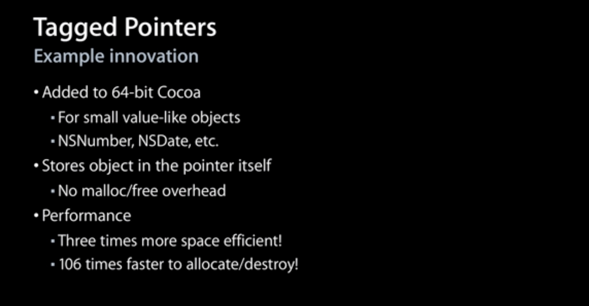
- 苹果使用 Tagged Pointer 来存储一些比较小的数据，如：
NSNumber，NSDate和NSString等； - 由于直接使用指针本身来存储数据，不再需要额外生命周期管理，没有
malloc/free； - 3 倍的空间优化， 106 倍的创建或者销毁速度。

使用低位的 bit 来作为标识位。
Tagged Pointer 解析
iOS - 老生常谈内存管理（五）：Tagged Pointer
由于内存对齐的关系，指针的值最后四位都是 0 ，所以可以使用这四位来做一些记录。如果最后一位是 1 ，则这个指针是 Tagged Pointer 。
static inline bool
_objc_isTaggedPointer(const void *ptr)
{
return ((intptr_t)ptr & _OBJC_TAG_MASK) == _OBJC_TAG_MASK;
}
#if OBJC_MSB_TAGGED_POINTERS
# define _OBJC_TAG_MASK (1ULL<<63)
#else
# define _OBJC_TAG_MASK 1
#endif
#if TARGET_OS_OSX && __x86_64__
// 64-bit Mac - tag bit is LSB
# define OBJC_MSB_TAGGED_POINTERS 0
#else
// Everything else - tag bit is MSB
# define OBJC_MSB_TAGGED_POINTERS 1
#endif
在 iOS 平台上使用的是最高位进行判断，在 macOS 上 使用的是最低位。 Tagged Pointer 支持的类型：
enum
{
OBJC_TAG_NSAtom = 0,
OBJC_TAG_1 = 1,
OBJC_TAG_NSString = 2,
OBJC_TAG_NSNumber = 3,
OBJC_TAG_NSIndexPath = 4,
OBJC_TAG_NSManagedObjectID = 5,
OBJC_TAG_NSDate = 6,
OBJC_TAG_RESERVED_7 = 7,
OBJC_TAG_First60BitPayload = 0,
OBJC_TAG_Last60BitPayload = 6,
OBJC_TAG_First52BitPayload = 8,
OBJC_TAG_Last52BitPayload = 263,
OBJC_TAG_RESERVED_264 = 264
};
Tagged Pointer 不是真的对象，没有 isa 指针，不存在 retain ， release ， autorelease 等对象生命周期管理的流程，其引用计数为 NSUInteger 的最大值。
dispatch_queue_t queue = dispatch_queue_create("parallel", DISPATCH_QUEUE_CONCURRENT);
for (int i = 0; i < 1000; i ++) {
dispatch_async(queue, ^{
self.name = [NSString stringWithFormat:@"abcdefghijk"];
})
}
dispatch_queue_t queue = dispatch_queue_create("parallel", DISPATCH_QUEUE_CONCURRENT);
for (int i = 0; i < 1000; i ++) {
dispatch_async(queue, ^{
self.name = [NSString stringWithFormat:@"abc"];
})
}
上面的代码中，第一个 for 循环会崩溃，因为在多线程中可能会重复 release ，而第二个不会，因为 Tagged Pointer 其实是值类型，不涉及到 retain 和 release 操作，其赋值操作是原子性的。
Let's Build Tagged Pointers
mikeash.com: Friday Q&A 2012-07-27: Let's Build Tagged Pointers
Mike Ash 尝试自己实现了一个 Tagged Pointer 。
Tagged Pointer Strings
mikeash.com: Friday Q&A 2015-07-31: Tagged Pointer Strings
如果某些字符串可以保存为 60 位以内的二进制数据，那么对应的 NSString 就会被创建为 Tagged Pointer 。
由于 NSString 字符串编码的特殊性，苹果针对 NSString 的 Tagged Pointer 进行优化。
实现
NSString *a = @"a";
NSString *b = [[a mutableCopy] copy];
NSLog(@"%p %p %@", a, b, object_getClass(b));
- 常量字符串不会被存储为 Tagged Pointer ，因为常量字符串必须保证可以兼容不同的系统，但是 Tagged Pointer 的内部实现细节却不能保证兼容不同的系统，常量字符串嵌入到二进制字符串时有可能会崩溃；
- 先执行
[a mutableCopy]，因copy返回的是不可变的字符串，所以常量字符串的copy得到的还是原来的常量字符串，所以先通过mutableCopy生成一个新的可变字符串，然后再通过copy得到一个不可变的 Tagged Pointer ， Tagged Pointer 只会在运行时创建。
输出结果如下：
0x10ba41038 0x6115 NSTaggedPointerString
首先第一个 a 不是 Tagged Pointer ，是一个对象的指针，第二个是 Tagged Pointer。
然后 NSString 对应的 Tagged Pointer 使用的是 ASCII 编码，占用的长度较少。
伪代码：
unsigned short -[NSTaggedPointerString characterAtIndex:](void * self, void * _cmd, unsigned long long index) {
int8_t buffer[11];
length = self >> 0x4 & 0xf;
if (length >= 0x8) {
stringData = self >> 0x8;
table = "eilotrm.apdnsIc ufkMShjTRxgC4013bDNvwyUL2O856P-B79AFKEWV_zGJ/HYX";
cursor = length;
if (length < 0xa) {
do {
buffer[cursor - 1] = table[stringData & 0x3f];
cursor = cursor - 0x1;
stringData = stringData >> 0x6;
} while (cursor != 0x0);
}
else {
do {
buffer[cursor - 1] = table[stringData & 0x1f];
cursor = cursor - 0x1;
stringData = stringData >> 0x5;
} while (cursor != 0x0);
}
} else {
*(uint64_t *)buffer = self >> 8;
}
if (length <= index) {
rbx = r8;
___CFExceptionProem(self, _cmd);
[NSException raise:@"NSRangeException" format:@"%@: Index %lu out of bounds; string length %lu"];
r8 = rbx;
}
rax = buffer[index];
return rax;
}
- 长度小于 8 的情况下，直接使用 ASCII 编码，所以
self按位编译后直接赋值给buff即可； - 长度大于等于8小于10，就会取出
stringData的最低 6 位，作为table的索引取出相应的值拷贝到buffer中，然后将stringData右移 6 位，重复操作； - 如果大于等于 10 ，那么就会使用 5 位编码，而
table只使用前半部分。
构造 NSString Tagged Pointer 的原理大致上也和上面的一致。
6 位编码表：
eilotrm.apdnsIc ufkMShjTRxgC4013bDNvwyUL2O856P-B79AFKEWV_zGJ/HYX
猜测是按照在英语中出现的频率进行排序，使得尽量多的字符串可以使用 Tagged Pointer 。通过一个简单又巧妙的查找表方式在有限的空间内存储尽量的数据。
weak
实现
作者在文中提供了一个简单版的 weak 实现：
// { 对象地址 : [ 对象指针地址1、 对象指针地址1] }
static NSMutableDictionary *weakTable;
@interface A : NSObject
@end
@implementation A
- (void)dealloc {
// 获取指向此对象的所有指针变量地址
for (NSNumber *ptrPtrNumber in weakTable[@((uintptr_t)self)]) {
// 根据指针变量地址，将指针变量置为 nil
// 这里就是 w1 置 nil
uintptr_t **ptrPtr = (uintptr_t **)[ptrPtrNumber unsignedLongValue];
*ptrPtr = nil;
}
// 移除和此对象相关的数据
[weakTable removeObjectForKey:@((uintptr_t)self)];
}
@end
int main(int argc, const char * argv[]) {
@autoreleasepool {
weakTable = @{}.mutableCopy;
__unsafe_unretained NSObject *w1;
@autoreleasepool {
NSObject *obj = [A new];
uintptr_t objAddr = (uintptr_t)obj;
w1 = obj;
// 将对象地址和需要自动置 nil 的指针变量的地址保存至 map 中
// 使用可变数组方便处理多个需要置 nil 的变量指向 obj
weakTable[@(objAddr)] = @[@((uintptr_t)&w1)].mutableCopy;
// 即将走出 w1 所在作用域，将 w1 的地址从 map 中清除
[weakTable[@((uintptr_t)w1)] removeObject:@((uintptr_t)&w1)];
}
NSLog(@"%@", w1);
}
return 0;
}
系统的 weak 实现总结如下：
设置
__weak修饰的变量时， runtime 会生成对应的entry结构放入weak hash table中，以赋值对象地址生成的hash值为key，以包装__weak修饰的指针变量地址的entry为value，当赋值对象释放时， runtime 会在目标对象的dealloc处理过程中，以对象地址（self）为key去weak hash table查找entry，置空entry指向的的所有对象指针。 实际上entry使用数组保存指针变量地址，当地址数量不大于 4 时，这个数组就是个普通的内置数组，在地址数量大于 4 时，这个数组就会扩充成一个hash table。 系统会提供一个SideTable来关联对象引用和弱引用表，对于一个对象来说这个结构实例是唯一的。一般来说，objc 2.0 的对象引用计数都会优先保存在isa的extra_rc位段中，只有超出了存储的限制才会将超出部分保存到对应的SideTable中，isa使用has_sidetable_rc标记是否超出限制。 系统的实现需要针对TaggedPointer进行特殊处理。weak_entry_t使用union来进行记录，在wea指针数量小于 4 个时可以快速访问。
文章不算很长，但是把创建和销毁流程讲得非常清晰。主要重点在 weak_entry_t 的处理， hash 的计算。
weak 弱引用的实现方式
整体流程说得比较清晰，代码注释和解释也比较详细

引用计数与 weak


应用
weak singleton ，当所有持有单例的对象都释放后，单例也会被释放掉，减少内存浪费：
- (void)setContext:(CDDContext*)object {
id __weak weakObject = object;
id (^block)() = ^{ return weakObject; };
objc_setAssociatedObject(self, @selector(context), block, OBJC_ASSOCIATION_COPY);
}
- (CDDContext*)context {
id (^block)() = objc_getAssociatedObject(self, @selector(context));
id curContext = (block ? block() : nil);
return curContext;
}
weak associated object ，associated object 本身并不支持添加具备 weak 特性的 property ，但我们可以通过一个小技巧来完成：
- (void)setContext:(CDDContext*)object {
id __weak weakObject = object;
id (^block)() = ^{ return weakObject; };
objc_setAssociatedObject(self, @selector(context), block, OBJC_ASSOCIATION_COPY);
}
- (CDDContext*)context {
id (^block)() = objc_getAssociatedObject(self, @selector(context));
id curContext = (block ? block() : nil);
return curContext;
}
文章最后一段话写得很好：
编程语言一直处于进化当中，语言的设计者会站在宏观的角度，结合行业的需要，添加更多的方便特性，如果只是记住官方文档里的几个应用场景，而不去思考背后的设计思路，则很难写出有想象力的代码。
简易版实现
weak 的简易版实现。借用 block 和 unsafe_unretained 实现 weak ，在对象 dealloc 时调用 block ，而 block 会将 unsafe_unretained 指针指向 nil 。
Object
Objective-C 中的对象

NSObject 定了 isa 指针，用于指向 Class ，而 Class 本质上则是指向 objc_class 结构体的指针：
// NSObject.h
@interface NSObject <NSObject> {
#pragma clang diagnostic push
#pragma clang diagnostic ignored "-Wobjc-interface-ivars"
Class isa OBJC_ISA_AVAILABILITY;
#pragma clang diagnostic pop
}
而 Class 的本质则是指向 objc_class 结构体的指针，存放了 isa 、 superclass 、方法缓存等。
typedef struct objc_class *Class;
// objc-runtime-new.h
struct objc_class : objc_object {
// Class ISA;
// 父类指针
Class superclass;
// 方法缓存
cache_t cache; // formerly cache pointer and vtable
// 可读可写表（class_rw_t）等
class_data_bits_t bits; // class_rw_t * plus custom rr/alloc flags
// ...
};
// objc-private.h
struct objc_object {
private:
// isa 指针
isa_t isa;
// ...
}
struct class_data_bits_t {
// Values are the FAST_ flags above.
uintptr_t bits;
class_rw_t* data() {
return (class_rw_t *)(bits & FAST_DATA_MASK);
}
// ...
}
bits 标志位作用：
- 0 - 1 ，
FAST_IS_SWIFT_LEGACY，是否来自 ABI 预稳定版本的 Swift ； - 1 - 2 ，
FAST_IS_SWIFT_STABLE，是否来自 ABI 稳定版本的 Swift ； - 2 - 3 ，
FAST_HAS_DEFAULT_RR，类或父类含有默认的持有或引用； - 3 - 47 ，
FAST_DATA_MASK，指向class_rw_t结构体的指针； - 47 - 63 ，字节对齐，填 0 。
class_rw_t 是可读可写， Read-Write ，在运行时会进行调整，而 class_ro_t 是只读的，在编译期已经确定，无法调整。
struct class_rw_t {
// Be warned that Symbolication knows the layout of this structure.
uint32_t flags;
uint32_t version;
// 只读表的指针（const：不可修改指针指向内存空间中的数据）
const class_ro_t *ro;
// 方法、属性、协议信息，可用于运行时动态添加
method_array_t methods;
property_array_t properties;
protocol_array_t protocols;
// ...
};
class_ro_t 在编译时会被动态替换为 class_rw_t ，而 class_rw_t 则会通过指针指向 class_ro_t ：
struct class_ro_t {
// 标志位
uint32_t flags;
uint32_t instanceStart;
// 实例大小
uint32_t instanceSize;
#ifdef __LP64__
uint32_t reserved;
#endif
const uint8_t * ivarLayout;
// 类名
const char * name;
method_list_t * baseMethodList;
protocol_list_t * baseProtocols;
// 成员变量
const ivar_list_t * ivars;
const uint8_t * weakIvarLayout;
property_list_t *baseProperties;
method_list_t *baseMethods() const {
return baseMethodList;
}
};
从上面的 class_rw_t 和 class_ro_t 可以看出为什么 Category 不支持添加变量，因为 Category 相关方法和属性是添加到 class_rw_t 中的，而 class_ro_t 表示的示例大小和属性在编译时已经确定了，不支持在运行时进行修改。
基类：

isa 指针

实例对象中的 isa 指向类对象，类对象中的 isa 指向元类对象，元类对象中的 isa 指向根元类对象（包括根元类对象也指向自己）。 isa_t 通过 union 来共享内存占用：
struct objc_object {
private:
isa_t isa;
// ...
}
union isa_t {
isa_t() { }
isa_t(uintptr_t value) : bits(value) { }
Class cls;
uintptr_t bits;
#if defined(ISA_BITFIELD)
struct {
ISA_BITFIELD; // defined in isa.h
};
#endif
};
// isa.h
// ARM 64
# if __arm64__
# define ISA_MASK 0x0000000ffffffff8ULL
# define ISA_MAGIC_MASK 0x000003f000000001ULL
# define ISA_MAGIC_VALUE 0x000001a000000001ULL
# define ISA_BITFIELD \
uintptr_t nonpointer : 1; \
uintptr_t has_assoc : 1; \
uintptr_t has_cxx_dtor : 1; \
uintptr_t shiftcls : 33; /*MACH_VM_MAX_ADDRESS 0x1000000000*/ \
uintptr_t magic : 6; \
uintptr_t weakly_referenced : 1; \
uintptr_t deallocating : 1; \
uintptr_t has_sidetable_rc : 1; \
uintptr_t extra_rc : 19
# define RC_ONE (1ULL<<45)
# define RC_HALF (1ULL<<18)
// _uintptr_t.h
#ifndef _UINTPTR_T
#define _UINTPTR_T
typedef unsigned long uintptr_t;
#endif /* _UINTPTR_T */
Reference Counting
说明
LLVM 的关于 ARC 的说明，非常长。
引用计数原理
引用计数如何存储：
- 如果是 Tagged Pointer ，会直接使用其指针值作为引用计数返回；
- 如果是 64位和 Objective-C 2.0 ，就会使用
isa的部分空间来存储引用计数； - 如果
isa部分空间不够存储引用计数，或者不是 64位和 Objective-C 2.0 ，就会使用散列表和SideTable来存储。
获取引用计数：
inline uintptr_t
objc_object::rootRetainCount()
{
assert(!UseGC);
// 1. 如果是 Tagged Pointer ，则直接返回指针地址
if (isTaggedPointer()) return (uintptr_t)this;
sidetable_lock();
isa_t bits = LoadExclusive(&isa.bits);
if (bits.indexed) {
// 2. 如果有经过优化，则 1 + bits.extra_rc ；
uintptr_t rc = 1 + bits.extra_rc;
// 3. 如果有使用 SideTable ，则加上 SideTable 的计数；
if (bits.has_sidetable_rc) {
rc += sidetable_getExtraRC_nolock();
}
sidetable_unlock();
return rc;
}
sidetable_unlock();
return sidetable_retainCount();
}
而 sidetable_retainCount() 则负责从 SideTable 中获取引用计数：
uintptr_t
objc_object::sidetable_retainCount()
{
// 1. 根据指针地址获取对应的 SideTable
SideTable *table = SideTable::tableForPointer(this);
size_t refcnt_result = 1;
spinlock_lock(&table->slock);
// 2. 获取对象对应的 RefcountMap ；
RefcountMap::iterator it = table->refcnts.find(this);
if (it != table->refcnts.end()) {
// 右移二位， SIDE_TABLE_RC_PINNED 可用于判断是否溢出。
refcnt_result += it->second >> SIDE_TABLE_RC_SHIFT;
}
spinlock_unlock(&table->slock);
return refcnt_result;
}
如官方文档所说的，不要使用 retainCount 方法，它不能真实表达对象所对应的引用计数，以及 Clang 一些优化也会对其造成影响。
修改引用计数：
retain和release；alloc，new，copy和mutableCopy；autorelease。
黑箱中的 retain 和 release
retain
原文把 rootRetain 方法拆散了，方便解析，下面是 rootRetain 的全部实现，易于查看整个流程：
id
objc_object::rootRetain(bool tryRetain, bool handleOverflow)
{
if (isTaggedPointer()) return (id)this;
bool sideTableLocked = false;
bool transcribeToSideTable = false;
isa_t oldisa;
isa_t newisa;
do {
transcribeToSideTable = false;
// 加载 isa 的值
oldisa = LoadExclusive(&isa.bits);
newisa = oldisa;
// 如果不支持 nonpointer ，即不用 isa 本身来存储引用计数，则直接走 SideTable 流程
if (slowpath(!newisa.nonpointer)) {
ClearExclusive(&isa.bits);
if (!tryRetain && sideTableLocked) sidetable_unlock();
if (tryRetain) return sidetable_tryRetain() ? (id)this : nil;
else return sidetable_retain();
}
// 如果 isa 在 dealloc 流程中，则直接返回 nil
if (slowpath(tryRetain && newisa.deallocating)) {
ClearExclusive(&isa.bits);
if (!tryRetain && sideTableLocked) sidetable_unlock();
return nil;
}
//
uintptr_t carry;
// 将 isa 的值加 1
newisa.bits = addc(newisa.bits, RC_ONE, 0, &carry);
// 引用计数超出 extra_rc 限制，改用 SideTable
if (slowpath(carry)) {
// handleOverflow 为 false
if (!handleOverflow) {
ClearExclusive(&isa.bits);
// handleOverflow 改为 true ，从走 retain
return rootRetain_overflow(tryRetain);
}
// 把 isa 的 extra_rc 恢复为一半，和做好准备把另外一半拷贝到 SideTable
if (!tryRetain && !sideTableLocked) sidetable_lock();
sideTableLocked = true;
transcribeToSideTable = true;
// 把 extra_rc 恢复为一半
newisa.extra_rc = RC_HALF;
newisa.has_sidetable_rc = true;
}
// StoreExclusive 更新 isa 的值
} while (slowpath(!StoreExclusive(&isa.bits, oldisa.bits, newisa.bits)));
// 如果说 isa 有溢出， 把一半的引用计数拷贝到 SideTable
if (slowpath(transcribeToSideTable)) {
sidetable_addExtraRC_nolock(RC_HALF);
}
if (slowpath(!tryRetain && sideTableLocked)) sidetable_unlock();
return (id)this;
}
bool objc_object::sidetable_addExtraRC_nolock(size_t delta_rc) {
SideTable& table = SideTables()[this];
size_t& refcntStorage = table.refcnts[this];
size_t oldRefcnt = refcntStorage;
// 溢出，直接返回 true
if (oldRefcnt & SIDE_TABLE_RC_PINNED) return true;
uintptr_t carry;
size_t newRefcnt =
addc(oldRefcnt, delta_rc << SIDE_TABLE_RC_SHIFT, 0, &carry);
if (carry) {
// 如果有溢出，则将 refcntStorage 设为 SIDE_TABLE_RC_PINNED
refcntStorage = SIDE_TABLE_RC_PINNED | (oldRefcnt & SIDE_TABLE_FLAG_MASK);
return true;
} else {
// 没有溢出，新值赋给 refcntStorage
refcntStorage = newRefcnt;
return false;
}
}
可以看到 retain 时会动态结合 isa 的 extra_rc 和 SideTable 来存储引用计数：
extra_rc不需要查找，速度会更快，所以优先使用extra_rc管理引用计数；- 如果
extra_rc溢出，则把extra_rc的一半拷贝到SideTable中，SideTable并没有直接参与引用计数管理； - 如果引用计数为 1 ，
extra_rc为 0 ，保存的是额外的引用计数。
release
bool
objc_object::rootRelease(bool performDealloc, bool handleUnderflow)
{
if (isTaggedPointer()) return false;
bool sideTableLocked = false;
isa_t oldisa;
isa_t newisa;
retry:
do {
oldisa = LoadExclusive(&isa.bits);
newisa = oldisa;
// 如果不支持 nonpointer ，即不用 isa 本身来存储引用计数，则直接走 SideTable 流程
if (slowpath(!newisa.nonpointer)) {
ClearExclusive(&isa.bits);
if (sideTableLocked) sidetable_unlock();
return sidetable_release(performDealloc);
}
uintptr_t carry;
// extra_rc 减 1
newisa.bits = subc(newisa.bits, RC_ONE, 0, &carry);
// 如果不够，则走 SideTable 流程
if (slowpath(carry)) {
goto underflow;
}
// 调用 StoreReleaseExclusive 方法保存新的引用计数
} while (slowpath(!StoreReleaseExclusive(&isa.bits,
oldisa.bits, newisa.bits)));
if (slowpath(sideTableLocked)) sidetable_unlock();
return false;
underflow:
newisa = oldisa;
// 判断是否有使用 SideTable
if (slowpath(newisa.has_sidetable_rc)) {
// 将 handleUnderflow 设为 true ，递归调用
if (!handleUnderflow) {
ClearExclusive(&isa.bits);
return rootRelease_underflow(performDealloc);
}
if (!sideTableLocked) {
ClearExclusive(&isa.bits);
sidetable_lock();
sideTableLocked = true;
goto retry;
}
// 从 SideTable 中获取 extra_rc 最大值的一半，即 RC_HALF
size_t borrowed = sidetable_subExtraRC_nolock(RC_HALF);
if (borrowed > 0) {
// 将一半引用计数放到 extra_rc 中
newisa.extra_rc = borrowed - 1;
bool stored = StoreReleaseExclusive(&isa.bits,
oldisa.bits, newisa.bits);
if (!stored) {
// 如果存放到 extra_rc 中失败，重新加载 isa 和尝试存放
isa_t oldisa2 = LoadExclusive(&isa.bits);
isa_t newisa2 = oldisa2;
if (newisa2.nonpointer) {
uintptr_t overflow;
newisa2.bits =
addc(newisa2.bits, RC_ONE * (borrowed-1), 0, &overflow);
if (!overflow) {
stored = StoreReleaseExclusive(&isa.bits, oldisa2.bits,
newisa2.bits);
}
}
}
// 如果还是失败，则把引用计数放回 SideTable
if (!stored) {
sidetable_addExtraRC_nolock(borrowed);
goto retry;
}
sidetable_unlock();
return false;
}
else {
// SideTable 为空，执行 dealloc ，不需要执行任何处理
}
}
if (slowpath(newisa.deallocating)) {
// 对象正在释放
ClearExclusive(&isa.bits);
if (sideTableLocked) sidetable_unlock();
return overrelease_error();
}
// 设置 deallocating 标志位
newisa.deallocating = true;
if (!StoreExclusive(&isa.bits, oldisa.bits, newisa.bits)) goto retry;
if (slowpath(sideTableLocked)) sidetable_unlock();
__sync_synchronize();
if (performDealloc) {
// 通过 objc_msgSend 直接执行 dealloc
((void(*)(objc_object *, SEL))objc_msgSend)(this, SEL_dealloc);
}
return true;
}
release 的处理流程和 retain 类似，多了一个 dealloc 的执行流程。
引用计数与 weak
源码解析在上面已经有提及，所以这里贴上这篇的文章里的图就好了。


 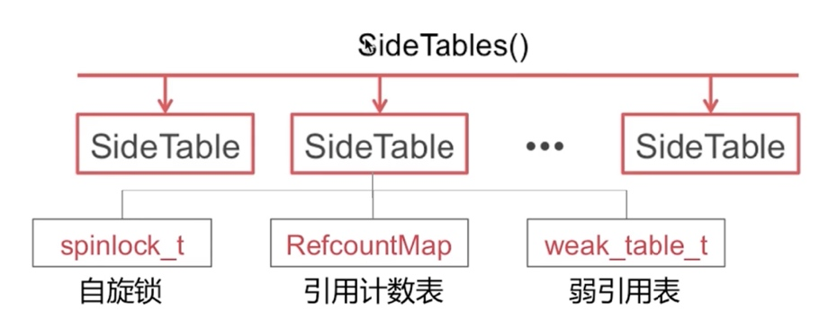
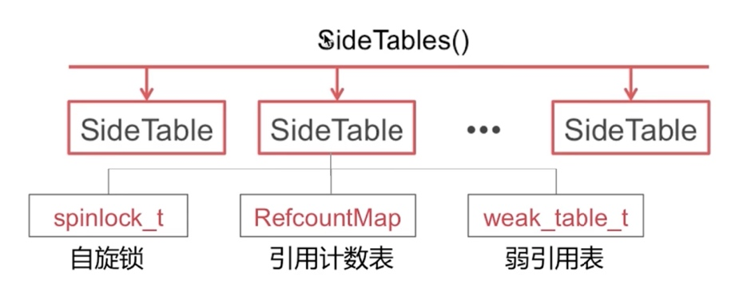

 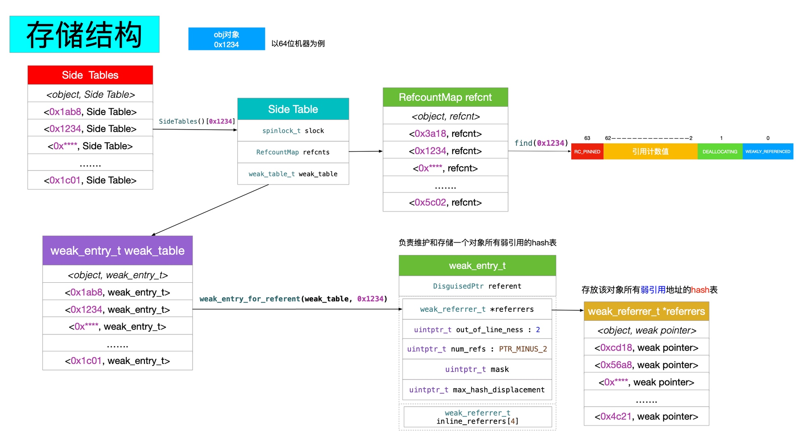
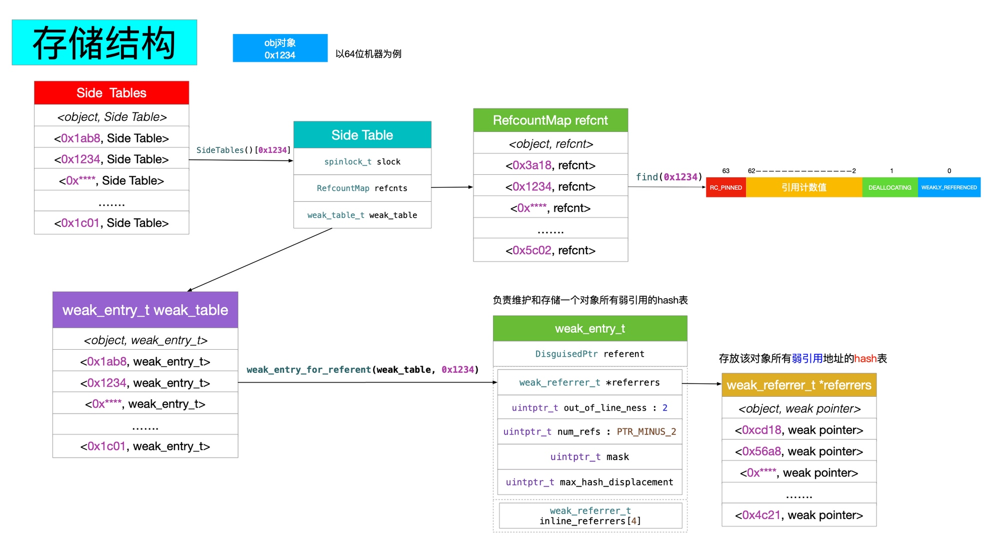
Objective-C
Runtime
- Associated Objects
- initialize
- load
- Block
- Category
- Message Sending And Forwarding
- KVO
- KVC
- AutoreleasePool
- dealloc
- Tagged Pointer
- weak
- Object
Tips
Books
如何获取某个类的全部子类
Getting the subclasses of an Objective-C class
获取某个 Objective-C 类的全部子类看起来是个相当简单的任务。虽然 Objective-C runtime 提供了高度的反射和内省，或许应该有个 class_getSubclasses(Class parentClass) 方法用于获取全部子类，但是很遗憾，没有。
Objective-C runtime 没有提供这个方法可能有以下几个原因：
- 类可以动态生成和加载；
- 需要考虑线程和锁；
class_t结构体的历史遗留问题；- 过早的性能优化，或者说故意引导程序员脱离某些特定的设计。
通常情况下不推荐获取子类，除非是说只有这么个解决办法或者只在调试中使用，否则更推荐使用其它方法，比如说子类主动注册，
A simple, extensible HTTP server in Cocoa
+ (void)load
{
[HTTPResponseHandler registerHandler:self];
}
父类会在注册的子类中查找对应的 handler 来处理请求。
但是我们在调试时可以通过获取所有 HTTPResponseHandler 的子类来检查是否已经注册。
看下 class 在 Objective-C 中的定义：
struct objc_class {
Class isa;
Class super_class;
const char *name;
long version;
long info;
long instance_size;
struct objc_ivar_list *ivars;
struct objc_method_list **methodLists;
struct objc_cache *cache;
struct objc_protocol_list *protocols;
};
objc_class 包含指向父类的指针，但是没有包含指向所有子类的指针。如果想通过公开 API 来获取，那么只能获取所有类，然后判断它是否为某个类的子类。这是个非常笨拙的方法，它会遍历 Foundation ， CocoaFramework 和当前项目添加的类。虽然查询这些类只需要一两毫秒，但是如果在循环或者其它频繁调用的操作中进行，这里的耗时就显得非常大，所以可以考虑将结果缓存起来。获取所有类的操作如下：
// 获取所有类的数量
int numClasses = objc_getClassList(NULL, 0);
Class *classes = NULL;
// 分配存储所有类的空间
classes = malloc(sizeof(Class) * numClasses);
// 将类信息存到 classes 中
numClasses = objc_getClassList(classes, numClasses);
// do something with classes
free(classes);
那么如何判断是否为某个类的子类呢？一个比较直觉的方法如下：
NSMutableArray *result = [NSMutableArray array];
for (NSInteger i = 0; i < numClasses; i++)
{
if ([classes[i] isSubclassOfClass:parentClass])
{
[result addObject:classes[i]];
}
}
但是并不能这样操作， isSubclassOfClass: 是个 NSObject 方法，但是不是所有类都继承自 NSObject ，比如说 _NSZombie_ 和 NSProxy 。所以只能通过 runtime 的方法来获取，使用 class_getSuperclass() 来查找子类的父类，然后进行比较：
NSArray *ClassGetSubclasses(Class parentClass)
{
int numClasses = objc_getClassList(NULL, 0);
Class *classes = NULL;
classes = malloc(sizeof(Class) * numClasses);
numClasses = objc_getClassList(classes, numClasses);
NSMutableArray *result = [NSMutableArray array];
for (NSInteger i = 0; i < numClasses; i++)
{
Class superClass = classes[i];
do
{
superClass = class_getSuperclass(superClass);
} while(superClass && superClass != parentClass);
if (superClass == nil)
{
continue;
}
[result addObject:classes[i]];
}
free(classes);
return result;
}
作者又提供了另外一种更快更 hack 的方法。在 Objective-C runtime 2.0 版本中， class 包含了一种直接链接至子类的方式。 class_t 结构如下：
typedef struct class_t {
struct class_t *isa;
struct class_t *superclass;
Cache cache;
IMP *vtable;
class_rw_t *data;
} class_t;
再看看 class_rw_t 的结构：
typedef struct class_rw_t {
uint32_t flags;
uint32_t version;
const class_ro_t *ro;
struct method_list_t **methods;
struct chained_property_list *properties;
struct protocol_list_t ** protocols;
struct class_t *firstSubclass;
struct class_t *nextSiblingClass;
} class_rw_t;
这意味着我们可以通过遍历 firstSubclass 和 nextSiblingClass 来获取所有子类，不需要通过 runtime 来遍历所有类。深度优选遍历：
typedef void *Cache;
#import "objc-runtime-new.h"
void AddSubclassesToArray(Class parentClass, NSMutableArray *subclasses)
{
struct class_t *internalRep = (struct class_t *)parentClass;
// Traverse depth first
Class subclass = (Class)internalRep->data->firstSubclass;
while (subclass)
{
[subclasses addObject:subclass];
AddSubclassesToArray(subclass, subclasses);
// Then traverse breadth-wise
struct class_t *subclassInternalRep = (struct class_t *)subclass;
subclass = (Class)subclassInternalRep->data->nextSiblingClass;
}
}
然而这个高效的方法不是线程安全的，根据
的实现，在获取 class_t 的 data 数据时都需要 runtimeLock 来进行加锁，但是 runtimeLock 无法在外部获取。因此所有线程（包括 Cocoa 自动开启的线程）都会造成崩溃。
总结
- 虽然说在新的 runtime 中已经有存储子类的数据，但是没有提供相关的 API 来给外部访问；
- 不是所有的类都继承自
NSObject； - 如果 Apple 在新版本的 runtime 中提供子类数据的 API ，效率会更高。
Objective-C 类属性
虽然说 Swift 出来后 Objective-C 改进都比较少了，基本上都是为了更好地和 Swift 进行交互，但是对于需要编写 Objective-C 的程序员来说依旧是喜闻乐见的。
Xcode 8 release notes ：
Objective-C now supports class properties, which interoperate with Swift type properties. They are declared as: @property (class) NSString *someStringProperty;. They are never synthesized. (23891898)
通过 class 声明属性：
@interface User : NSObject
@property (class, nonatomic, assign, readonly) NSInteger userCount;
@property (class, nonatomic, copy) NSUUID *identifier;
+ (void)resetIdentifier;
@end
上述代码声明了两个类属性，可读的 userCount 和可写的 identifier 。由于 Objective-C 不像 Swift 那样支持 class 层级的变量存储，所以需要声明对应的静态变量：
@implementation User
static NSUUID *_identifier = nil;
static NSInteger _userCount = 0;
对应 Objective-C 的 class 属性，Xcode 不会自动生成 setter 和 getter 方法，所以需要手动编译对应的方法。由于 userCount 只是可读的，所以只需要 getter 方法：
+ (NSInteger)userCount {
return _userCount;
}
而对于 identifier 则需要补充 setter 和 getter 方法，同时需要支持 copy 语义：
+ (NSUUID *)identifier {
if (_identifier == nil) {
_identifier = [[NSUUID alloc] init];
}
return _identifier;
}
+ (void)setIdentifier:(NSUUID *)newIdentifier {
if (newIdentifier != _identifier) {
_identifier = [newIdentifier copy];
}
}
也可以通过初始化方法来更新 userCount 属性：
- (instancetype)init
{
self = [super init];
if (self) {
_userCount += 1;
}
return self;
}
resetIdentifier 可用于创建一个新的 identifier ：
+ (void)resetIdentifier {
_identifier = [[NSUUID alloc] init];
}
@end
可以直接通过类名进行访问：
User.userCount;
User.identifier;
for (int i = 0; i < 3; i++) {
self.user = [[User alloc] init];
NSLog(@"User count: %ld",(long)User.userCount);
NSLog(@"Identifier = %@",User.identifier);
}
[User resetIdentifier];
NSLog(@"Identifier = %@",User.identifier);
生成对应的 Swift 代码如下：
public class User : NSObject {
public class var userCount: Int { get }
public class var identifier: UUID!
public class func resetIdentifier()
}
多线程导读
官方文档
中文版本：
Threading Programming Guide(1)
Threading Programming Guide(2)
Threading Programming Guide(3)
官方的并行编程指南
Concurrency and Application Design
远离线程
为什么要使用并行编程
- 充分利用计算机的多核；
- 更好的用户体验。
为什么避免使用线程（NSThread）
- 使用
NSThread你需要自己管理线程池； - 需要根据系统的状态调整线程的数量；
- 需要保持线程的高效运行，避免互相干扰。
Dispatch Queues
Dispatch Queues 是一种基于 C 的机制，可执行自定义任务，支持串行和并行，任务按照 FIFO 顺序执行。 优点：
- 提供直观简单的接口；
- 提供自动和全面的线程池管理；
- 提供了优化后的速度；
- 更高效率的内存占用（线程栈帧不需要常驻内存）；
- 不需要与内核交互；
- 分发到异步队列的任务不会造成队列死锁；
- 优雅的扩展；
- 串行队列提供了一个比锁或者其它原始的同步方案更高效的替代品。
Dispatch Sources
Dispatch Sources 是一种基于 C 的机制，用于异步处理特定类型的系统。 Dispatch Source 会包含有关特定类型系统事件的信息，在事件发生时将特定的 block 提交给 Dispatch Queue 。你可以使用 Dispatch Sources 来监听以下几种类型的系统事件：
- Timer 定时器；
- Signal 监听UNIX信号；
- Descriptor-related events 监听文件和 Socket 相关操作；
- Process-related events 监听进程相关状态；
- Mach port events 监听 Mach 相关事件；
- Custom events that you trigger 监听自定义事件；
Dispatch sources 是 GCD 的一部分。
Operation Queues
Operation Queue 是 Cocoa 提供的，和并行的 Dispatch Queue 是相同概念的东西，具体类型为 NSOperationQueue 类。跟 Dispatch Queue 保持 FIFO 的执行顺序不同， Operation Queue 支持自定义的执行顺序。你可以在定义任务时设置相关的依赖，以此来创造一个复杂的执行顺序图。
Operation Queue 中任务对应的类型为 NSOperation 类。NSOperation 封装了你需要执行的任务和所有相关的数据。 NSOperation 是一个抽象的基类，你可以自定义一些子类来执行自己的任务。系统也提供了一些特定的子类。
NSOperation 提供了 KVO 通知，可用于监听任务的进度。Operation Queue 通常会并发执行任务，你可以通过设置依赖来保证它们按照所计划的顺序执行。
Asynchronous Design Techniques
Define Your Application’s Expected Behavior
当你想要给自己的应用添加并发代码时，你应该先定义好应用的预期行为，以此来验证接入并发编程后的行为是否正确以及测试性能收益。
定义相关任务和数据结构。理清各个任务间的依赖关系。
Factor Out Executable Units of Work
找出任务的最小执行单元，将其封装进 block 或者 NSOperation ，然后派发到适当的队列中。不用担心任务分得太细而影响性能。队列会帮你处理好这一切，当然了，最好还是通过性能测试来调整任务大小。
Identify the Queues You Need
确定好队列的属性。
当使用 GCD 时，如果需要特定的执行顺序，使用串行队列，如果不需要特定的执行队列，可使用并发队列或者多个队列。
当使用 NSOperation 时，可通过设置各个 NSOperation 之间的依赖来调整它们之间的执行顺序。
Tips for Improving Efficiency
- 如果你的应用已经受内存限制，那么现在直接使用计算值可能比从主内存加载缓存的值要快。 计算值直接使用处理器核心的寄存器和缓存，这比主内存快得多。 当然了，还是需要性能测试来确定是否有利于性能优化；
- 找出串行任务，尽力把它们变得更加并发。 如果由于某个任务依赖某些共享资源而必须串行执行该任务，请考虑更改架构以删除该共享资源。 可以考虑为每个需要共享资源的用户拷贝一份对应的资源，或者完全清除共享资源；
- 避免使用锁。Dispatch queue 和 Operation Queue 在大多数情况下都不需要使用锁。避免使用锁来保护共享资源，使用串行队列或者设置 NSOperation 间的依赖来确保以正确的顺序执行任务；
- 尽量使用系统框架。实现功能时优先考虑现有的系统 API 是否可以满足需求。
相关分类
相关文章
ObjC 专题

Sindrilin 关于多线程的文章
如何保证线程安全，从原子性到线程锁（互斥，自旋，信号量），也说到了 barrier 操作。
NetNewsWire 如何处理多线程
How NetNewsWire Handles Threading
- 大部分代码都在主线程运行；
- 通知和
callback也都是在主线程处理； - 对于耗时操作，使用纯函数和串行队列，通过
callback返回处理结果； - 数据库的存取也使用串行队列，外部无法获取内部实现，可获取到的数据都是通过
callback和异步派发到主线程进行； - 多使用
assert(Thread.isMainThread)和precondition(Thread.isMainThread)来判断是否为主线程。
NetNewsWire 在响应和运行上都非常快速，同时也非常稳定。上述策略的好处是开发者通过查看代码就可以了解当前代码是在哪个线程上运行的，几乎全部代码都是在主线程运行。如果你在处理 RSS 解析，数据库或者其它类似的耗时操作，那么就是在串行队列中进行。即使是接入 Combine ， SwiftUI 和 Concurrency ，也可以继续使用这套策略。虽然线程机制的内部有调整，但是对外提供的逻辑是一致的。
作者认为高级开发者应该尽可能地减少多线程的部分，保持应用简单。因为多线程的代码很难去维护和阅读，虽然你可能创造出一套机制来正确使用多线程，但是团队互相理解代码也是有成本的，即使是独立开发者，你和六个月之后的你也是一个团队。虽然有可能阻塞主线程，但是解决一个主线程阻塞的 BUG 比解决一个奇怪的，不稳定复现的多线程的 BUG 或者崩溃要好多了。
对于主线程的阻塞，可以使用 Time Profiler 来排查，一般有以下三种解决方案：
- 通过数据结构和算法来进行优化；
- 或许是一些不必要的操作；
- 最后的解决方案：迁移到后台串行队列中进行。
最后的实操建议：
- 明确标注哪些应该在主线中运行，在代码中通过
assert(Thread.isMainThread)进行判断； - 开启 Xcode 的 Main Thread Checker ；
- 确保你 App 上所有的
Notification都是在主线程进行，在回调中添加assert(Thread.isMainThread)。
更激进点可以使用 precondition(Thread.isMainThread) 代替 assert(Thread.isMainThread) ，前者在生产环境下也会崩溃，确保你的线程模型正常运行。
对于 GCD 或者 NSOperation 的 API 的错误调用，改动成本不大，而对于整个 App 的线程模型来说，在工程创建之初就会确定下来，或者怎么高兴怎么来，又或者根据不同的业务分配不同的队列，在发展到一定阶段后再来修改避免不了会有一定的成本。我的观点和作者一致：尽量避免多线程。
Swift 专题
这篇文章介绍了 Swift 未支持协程 ( async/await )前的并发编程模式，很好地总结了 Swift 中目前可用的外部并发框架，包括锁类型， GCD 和操作队列。
Swift 3 中已经去掉了 dispatch_once ， dispatch_once 在 Objective-C 中常用于构建线程安全的单例。在 Swift 中可以通过全局常量来初始化单例，Swift 确保使用原子化的方式来进行初始化：
final class Singleton {
public static let sharedInstance: Singleton = Singleton()
private init() { }
...
}
也可以通过串行队列加 token 实现类似 dispatch_once 功能：
import Foundation
public extension DispatchQueue {
private static var onceTokens = [Int]()
private static var internalQueue = DispatchQueue(label: "dispatchqueue.once")
public class func once(token: Int, closure: (Void)->Void) {
internalQueue.sync {
if onceTokens.contains(token) {
return
}else{
onceTokens.append(token)
}
closure()
}
}
}
let t = 1
DispatchQueue.once(token: t) {
print("only once!")
}
DispatchQueue.once(token: t) {
print("Two times!?")
}
DispatchQueue.once(token: t) {
print("Three times!!?")
}
Swift 3 新增了一个函数，可用于判断任务是否在预期的队列中执行， DispatchPredicate 提供了三个枚举值：
onQueue：验证任务是否在指定队列中执行；notOnQueue：与onQueue情况相反；onQueueAsBarrier：验证当前任务是否作为一个队列的屏障。
dispatchPrecondition(condition: .notOnQueue(mainQueue))
dispatchPrecondition(condition: .onQueue(queue))
重点
NSOperation
官方文档
官方文档写的非常详细， Operation 和 OperationQueue 都写到，强烈推荐。
Operation支持异步和同步，可以通过isAsynchronous来判断是否异步，如果添加到OperationQueue中，OperationQueue会忽略掉这个属性，且默认为异步，可以通过设置OperationQueue的maxConcurrentOperationCount为 1 来强制串行。- 自定义
Operation时记得设置相关状态和KVO配置，如果 A 操作依赖 B 操作，即使 B 操作取消了， A 操作也会执行，A 操作是否 Ready 是通过 B 操作的isFinished来判断的，所以可能需要加入额外的判断，判断 B 操作是否成功执行。 Operation的start()和main()的区别。- 优先级配置：
Operation.QueuePriority，Operation不是严格按照优先级高低来执行，如果高优先级的Operation还没准备好，OperationQueue就会选择去执行低优先级的Opeartion。如果对顺序有严格要求的话还是要通过依赖来进行配置。 Operation执行完毕，它就会调用它的completionBlock。
iOS多线程：『NSOperation、NSOperationQueue』详尽总结
iOS多线程：『NSOperation、NSOperationQueue』详尽总结
NSOperation 和 NSOperationQueue 的优点：
- 可添加完成时调用的任务，便于在操作完成后执行；
- 方便管理各操作之间的依赖关系；
- 设定操作执行的优先级；
- 支持取消；
- 支持通过 KVO 观察操作的状态：
isExecuteing、isFinished、isCancelled。
NSOperation 是一个抽象类，不支持直接使用，需要使用系统提供的子类或者自定义子类：
- 使用子类
NSInvocationOperation； - 使用子类
NSBlockOperation； - 使用自定义子类。
NSOperationQueue 支持以下两种队列：
- 主队列，
NSOperationQueue *queue = [NSOperationQueue mainQueue]； - 自定义队列，
NSOperationQueue *queue = [[NSOperationQueue alloc] init]。
进阶：
- 通过
maxConcurrentOperationCount可以在串行和并发间切换； - 通过
-addDependency:和- removeDependency:可以进行依赖关系管理； - 通过
queuePriority进行优先级设置，默认为NSOperationQueuePriorityNormal，优先级不能取代依赖关系，执行任务的顺序以依赖关系为优先。
NSOperation
NSHipster 出品的简短介绍。
Grand Central Dispatch
官方文档：
源代码：
Dispatch ， aka Grand Central Dispatch （GCD），还有个中文名叫做大中枢派发，包括语言特性， runtime 库（上面的 lib dispatch ）和系统级别的支持，以便在 macOS ，iOS 等多核设备上编写和执行并发代码。
GCD 详尽总结
GCD 好处：
- 不需要我们手动管理线程的声明周期，GCD 会帮我们进行管理；
- 充分利用多核 CPU 的性能；
- 基于 block 的 API ，便于使用。
sync 和 async 表示是否开启新线程，而 Serial Dispatch Queue 和 Concurrent Dispatch Queue 则表示是否具备开启新线程的能力。
需要注意同步/异步执行 + 并发/串行/主队列的执行情况。
细说GCD（Grand Central Dispatch）如何用
GCD 的用法，没涉及到源码解析部分。
Let's Build dispatch_queue
mikeash.com: Friday Q&A 2015-09-04: Let's Build dispatch_queue
Mikeash 自己实现的一个简易版的 dispatch_queue ，源码：
支持以下功能：
- 串行或者并发；
- 同步和异步派发；
- 底层使用同一个线程池。
与 GCD 提供的 C API 不同，接口层通过 Objective-C 实现。 MADispatchQueue 提供了四个接口：
@interface MADispatchQueue : NSObject
// 全局队列， GCD 支持根据不同优先级获取不同的队列， MADispatchQueue 没有实现这个功能
+ (MADispatchQueue *)globalQueue;
// 初始化方法，通过 serial 来定义是串行还是并发
- (id)initSerial: (BOOL)serial;
// 执行异步 block
- (void)dispatchAsync: (dispatch_block_t)block;
// 执行同步 block
- (void)dispatchSync: (dispatch_block_t)block;
@end
线程池能力由 MAThreadPool 提供，只提供了一个能力：执行所提交的任务，所以对外只提供了以下接口：
@interface MAThreadPool : NSObject
- (void)addBlock: (dispatch_block_t)block;
@end
@implementation MAThreadPool {
// 使用 NSCondition 来作为锁，可以通过 signal 和 wait 进行通信
NSCondition *_lock;
// 当前所开启的线程
NSUInteger _threadCount;
// 执行任务中的线程
NSUInteger _activeThreadCount;
// 最大线程数
NSUInteger _threadCountLimit;
// 需要执行的 block
NSMutableArray *_blocks;
}
- (id)init {
if((self = [super init])) {
_lock = [[NSCondition alloc] init];
_blocks = [[NSMutableArray alloc] init];
_threadCountLimit = 128;
}
return self;
}
- (void)addBlock: (dispatch_block_t)block {
// 加锁保证线程安全
[_lock lock];
// 添加 block 到 blocks 数组中
[_blocks addObject: block];
// 判断当前空闲线程是否可以处理完所有待处理的 blocks
// 如果说 blocks 数量大于空闲线程数且当前线程数小于最大线程数，则可以开启新线程
NSUInteger idleThreads = _threadCount - _activeThreadCount;
if([_blocks count] > idleThreads && _threadCount < _threadCountLimit) {
[NSThread detachNewThreadSelector: @selector(workerThreadLoop:) toTarget: self withObject: nil];
_threadCount++;
}
// signal 执行任务
[_lock signal];
[_lock unlock];
}
- (void)workerThreadLoop: (id)ignore {
[_lock lock];
// 线程保活，实现类似 RunLoop 的流程
while(1) {
while([_blocks count] == 0) {
// wait 等待任务派发
[_lock wait];
}
// 获取第一个任务
dispatch_block_t block = [_blocks firstObject];
[_blocks removeObjectAtIndex: 0];
_activeThreadCount++;
[_lock unlock];
block();
[_lock lock];
_activeThreadCount--;
}
}
@end
MADispatchQueue 的实现：
@implementation MADispatchQueue {
NSLock *_lock;
NSMutableArray *_pendingBlocks;
BOOL _serial;
// 是否在执行任务
BOOL _serialRunning;
}
static MADispatchQueue *gGlobalQueue;
static MAThreadPool *gThreadPool;
// 借用 initialize 机制初始化 gGlobalQueue 和 gThreadPool
// 因为 dispatch_once 是 GCD 提供的能力，作者不想通过 GCD API 来实现 GCD 的功能，所以改用通过 initialize 来实现
+ (void)initialize {
if(self == [MADispatchQueue class]) {
gGlobalQueue = [[MADispatchQueue alloc] initSerial: NO];
gThreadPool = [[MAThreadPool alloc] init];
}
}
+ (MADispatchQueue *)globalQueue {
return gGlobalQueue;
}
- (id)initSerial: (BOOL)serial {
if ((self = [super init])) {
_lock = [[NSLock alloc] init];
_pendingBlocks = [[NSMutableArray alloc] init];
_serial = serial;
}
return self;
}
// 异步派发
- (void)dispatchAsync: (dispatch_block_t)block {
[_lock lock];
[_pendingBlocks addObject: block];
// 如果是串行，且没有在执行 block
if(_serial && !_serialRunning) {
_serialRunning = YES;
[self dispatchOneBlock];
} else if (!_serial) {
// 并发队列，直接执行 block 即可
[self dispatchOneBlock];
}
// 如果是串行且在执行 block 中，则不需要做任何处理， dispatchOneBlock 执行完后会自动检查是否还需要处理 blocks
[_lock unlock];
}
// 同步派发，基于 async 进行任务派发，通过 condition 强行同步😂
- (void)dispatchSync: (dispatch_block_t)block {
NSCondition *condition = [[NSCondition alloc] init];
__block BOOL done = NO;
[self dispatchAsync: ^{
block();
[condition lock];
done = YES;
[condition signal];
[condition unlock];
}];
[condition lock];
while (!done) {
[condition wait];
}
[condition unlock];
}
// 负责处理 pendingBlocks 的任务
- (void)dispatchOneBlock {
[gThreadPool addBlock: ^{
// 加 lock 保证线程安全
[_lock lock];
dispatch_block_t block = [_pendingBlocks firstObject];
[_pendingBlocks removeObjectAtIndex: 0];
[_lock unlock];
block();
// 如果是串行，则判断是否还有处理中的 blocks
if(_serial) {
[_lock lock];
if([_pendingBlocks count] > 0) {
[self dispatchOneBlock];
} else {
// 结束任务执行
_serialRunning = NO;
}
[_lock unlock];
}
}];
}
@end
作者的总结：
全局线程池可以通过一个工作队列 （ Queue ）和自动管理线程来实现，使用共享的全局线程池，可以提供基本的调度队列 API ，支持基本的串行/并发和同步/异步调度，虽然说缺少了不少 GCD 的功能，但是可以很好地了解 GCD 的运作方式。
dispatch_once 实现原理
mikeash.com: Friday Q&A 2014-06-06: Secrets of dispatch_once
static dispatch_once_t predicate;
dispatch_once(&predicate, ^{
// some one-time task
});
dispatch_once 只需要提供两个参数：
predicate，一个token，用于保证执行一次；block，需要执行的具体操作；
在单线程中， 我们使用一个 if 就可以保证方法只执行一次。但是在多线程中，就需要通过 dispatch_once 来保证 block 只执行一次，且其它线程需要等待 dispatch_once 执行完成。自己实现对应的版本并不难，但是 dispatch_once 的速度极快，这点比较难实现。
单线程版本：
void SimpleOnce(dispatch_once_t *predicate, dispatch_block_t block) {
if(!*predicate) {
block();
*predicate = 1;
}
}
dispatch_once_t 只是一个 long 的 typedef ，初始化为 0 ， block 执行完毕后设置为 1 以保证不会多次执行。但是在多线程时，可能会同时进入到 if 条件判断中，导致多次执行。
关于 dispatch_once 的性能部分，有下面三个场景需要考虑清楚：
- 首次调用
dispatch_once的调用者会直接执行block； - 在首次调用到
block完成执行之间调用，需要等待block完成； - 在
block完成后调用，无需等待，可以直接继续后续流程；
1 和 2 都不是非常重要，1 只会出现一次，而 2 基本上很少出现。
最重要的是第3点，在程序中会有可能出现成千上万次，每次我们都需要保证 dispatch_once 只执行一次。可以使用 SimpleOnce 作为我们性能测试的黄金准则。
Locks
void LockedOnce(dispatch_once_t *predicate, dispatch_block_t block) {
static pthread_mutex_t mutex = PTHREAD_MUTEX_INITIALIZER;
pthread_mutex_lock(&mutex);
if(!*predicate) {
block();
*predicate = 1;
}
pthread_mutex_unlock(&mutex);
}
简易版的 Lock 实现，由于 predicate 是一个 long 指针，无法存放 Lock ，所以新建了一个全局 mutex 来保证线程安全，这样会导致不相关的 predicate 也需要互相等待，但是对于试验性的代码来说够用了。
Spinlocks
void SpinlockOnce(dispatch_once_t *predicate, dispatch_block_t block) {
static OSSpinLock lock = OS_SPINLOCK_INIT;
OSSpinLockLock(&lock);
if(!*predicate) {
block();
*predicate = 1;
}
OSSpinLockUnlock(&lock);
}
Spinlocks 会让线程忙等，而不是休眠，以此来减少唤醒线程的耗时。相比 mutex 版本有相当大的改进，但是比起单线程版本耗时还是较长。
Atomic Operations
BOOL CompareAndSwap(long *ptr, long testValue, long newValue) {
if(*ptr == testValue) {
*ptr = newValue;
return YES;
}
return NO;
}
原子操作，提供 CPU 操作，不需要进行加锁操作。
ptr 有三个值：
- 0 表示
block从未执行 - 1 表示
block执行中 - 2 表示
block执行中
尽早退出，如果 *predicate 为 2 就 return ：
void EarlyBailoutAtomicBuiltinsOnce(dispatch_once_t *predicate, dispatch_block_t block) {
if(*predicate == 2) {
__sync_synchronize();
return;
}
volatile dispatch_once_t *volatilePredicate = predicate;
if(__sync_bool_compare_and_swap(volatilePredicate, 0, 1)) {
block();
__sync_synchronize();
*volatilePredicate = 2;
} else {
while(*volatilePredicate != 2)
;
__sync_synchronize();
}
}
源码：
dispatch_once 的死锁分析
延伸阅读：
【整理】__builtin_expect 解惑 - 摩云飞的个人页面 - OSCHINA
GCD 源码分析
结合源码分析用法和原理，非常详尽。
深入浅出GCD之dispatch_queue | cocoa_chen
深入浅出GCD之dispatch_semaphore | cocoa_chen
深入浅出GCD之dispatch_queue | cocoa_chen
深入浅出GCD之dispatch_once | cocoa_chen
深入浅出GCD之dispatch_source | cocoa_chen
GCD 注意点
Making efficient use of the libdispatch (GCD)
- 只使用非常少，明确定义的
queues。 所有的queues激活后，就会使用很多线程。queues应该根据 App 中特定的环境进行定义：UI ，存储，后台工作等，以此从多线程中获利； - 先使用主线程，当你发现性能瓶颈时，找到原因，如果多线程可以优化性能，必须要小心地应用，同时观察系统的压力。重复使用默认的
queues，如果需要添加多一个queue必须要经过测量。在大多数 Apps 中，尽量不要使用超过 3 个或者 4 个queues； - Queues that target other (non-global) queues are fine, these are the ones which scale. （这段不太明白）；
- 不要使用
dispatch_get_global_queue()，它不能很好地处理优先级，同时会导致线程爆炸。使用自己的特定queue是最好的选择； - 如果
dispatch对应的block小于 1ms ，使用dispatch_async()会造成性能上的浪费，因为libdispatch的过载行为，很有可能会创建一个新的线程来执行这个block。使用锁来保护共享状态会是一个更好的选择； - 一些类/库被更好地设计为复用其调用者的执行上下文，这意味这它们使用传统的锁来保证线程安全。
os_unfair_lock通常是系统中的最快的锁（优先级更高，更少的上下文切换）； - 如果并行运行，那么你的
work item不应该相互竞争（竞态），否则性能会急剧下降。竞态有多种形式，锁是其中一种，这意味着使用共享资源有可能成为性能瓶颈：IPC/系统服务，malloc(lock)， 共享内存， I/O ， ... - 你不需要为了避免线程爆炸而一直使用同步方法。使用一定数量的
queue而不是dispatch_get_global_queue()会是一个更好的选择； - 异步编程的 bug 和复杂度都会增加，同步编程更容易阅读，编写和维护；
- 串行队列比并行队列优化得更好。只有在你需要性能改善时才使用并行队列，否则有可能是过早优化；
- 如果你需要在同一个队列中混合异步和同步调用，请使用
dispatch_async和wait而不是dispatch_sync()。dispatch_async和wait结合使用可以减少队列切换； - 充分利用3-4个以上的内核不是件容易的事，大多数尝试着么做的人都是在浪费精力来获得微不足道的性能；
- 测量 App 的真实性能，以此确保 App 通过优化后变得更快，而不是更慢。进行性能测试时应该进行全局的性能测试，而不是局部的性能测试，避免缓存影响和保持线程池活跃；
libdispatch非常有效率但是并不是魔术，资源是有限的。你无法忽略掉你正在使用的底层系统和硬件。不是所有代码可以并行运行。
检查你代码所有 dispatch_async() 的调用，看看它们需要执行的任务是否值得切换至不同的上下文来执行。大多数情况下，锁都是更好的选择。
一旦你开始使用定义的队列和复用它们，你有可能在调用 dispatch_sync() 时导致死锁，在队列用于线程安全时经常会出现这种情况，再次声明一下使用锁是一个比较好的解决方案，只有在需要切换至不同的上下文时才使用 dispatch_async() 。
如何取消 GCD 任务
- 如果还未执行的子线程可以用
dispatch_block_cancel来取消，需要使用dispatch_block_create创建dispatch_block_t。
- (void)stopSync{
dispatch_queue_t queue = dispatch_queue_create("queue", DISPATCH_QUEUE_SERIAL);
dispatch_block_t block1 = dispatch_block_create(0, ^{
NSLog(@"block1 begin");
[NSThread sleepForTimeInterval:3];
NSLog(@"block1 end");
});
dispatch_block_t block2 = dispatch_block_create(0, ^{
NSLog(@"block2 ");
});
dispatch_async(queue, block1);
dispatch_async(queue, block2);
//取消执行block2
dispatch_block_cancel(block2);
}
- 对于执行中的任务，可以通过变量判断是否需要提前
return来取消任务。线程外设置__block变量，配合线程中return结束。
- (void)stopAsync {
__block BOOL isFinish =NO;
dispatch_async(dispatch_get_global_queue(0, 0), ^{
for(long i=0; i<10000; i++) {
NSLog(@"执行第 %ld 次",i);
sleep(1);
if(isFinish ==YES) {
NSLog(@"停止");
return;
}
};
});
dispatch_after(dispatch_time(DISPATCH_TIME_NOW,(int64_t)(10 * NSEC_PER_SEC)),dispatch_get_main_queue(), ^{
NSLog(@"停止任务");
isFinish =YES;
});
}
GCD 造成卡顿
-
iOS 系统本身是一个资源调度和分配系统，CPU，disk IO，VM 等都是稀缺资源，各个资源之间会互相影响，主线程的卡顿看似 CPU 资源出现瓶颈，但也有可能内核忙于调度其他资源，比如当前正在发生大量的磁盘读写，或者大量的内存申请和清理，都会导致下面这个简单的创建线程的内核调用出现卡顿：
libsystem_kernel.dylib __workq_kernreturn所以解决办法只能是自己分析各 thread 的 call stack ，根据用户场景分析当前正在消耗的系统资源。后面也确实通过最近提交的代码分析，发现是由于增加了一些非常耗时的磁盘 io 任务（虽然也是放在在子线程），才出现这个看着不怎么沾边的 call stack。revert 之后卡顿警报就消失了。
-
现有的卡顿检测工具都只能在超时的情况下 dump call stack ，但出现超时有可能是任务 A，B，C 共同作用导致的，A 和 B 可能是真正耗时的任务，C 不耗时但碰巧是最后一个，所以被当成元凶，而 A 和 B 却没有出现在上报日志里。我暂时也没有想到特别好的解决办法。很明显，
libsystem_kernel.dylib __workq_kernreturn就是一个不怎么耗时的 C 任务。 -
在使用 GCD 创建 queue，或者说一个 App 内部使用 GCD 执行子线程任务时，最好有一套 App 所有团队都能遵循的队列使用机制，避免创建过多的 thread ，而出现意料之外的线程资源紧缺，代码无法及时执行的情况。这很难，尤其是在大公司动则上百人的团队里面。
GCD 原理详解
fastpath(x)和slowpath(x)的作用：手动提醒编译器哪种情况比较容易发生；dispatch_queue_t源码解析，设置线程并发数，target queue等；dispatch_async，根据并发数调用不同的函数，主要流程是用链表保存所有提交的block，然后在底层线程池中取出或者新建线程，执行最早添加的block；dispatch_sync，使用信号量来保证每次只有一个block被执行；dispatch_semaphore通过signal和wait来进行信号量管理，；dispatch_group基于信号量进行处理， value 恢复初始值会调用所有注册的回调，dispatch_group_notify将所有回调封装成链表，在dispatch_async完成时判断 value 是否恢复初始值，如果恢复初始值就调用dispatch_async执行所有注册的回调；dispatch_once通过一个静态变量来标记block是否执行中或者已执行，通过信号量来确保只有一个线程能执行block，执行完成后会唤醒其它等待的线程；dispatch_barrier_async改变block的vtable标记位，会等待前面的block执行完后才执行；dispatch_source可以用来实现定时器，所有的 source 会提交到用户指定的队列，然后提交到 manager 队列中，和NSTimer不同，没有依赖 RunLoop 。
GCD 总结
pthread 和 NSThread
远离线程
苹果官方推荐使用 GCD 和 NSOperationQueu 来代替线程，好处如下：
- 减少存储线程栈帧的内存占用；
- 清除创建和配置线程的代码；
- 清除在线程中管理和安排任务的代码；
- 简化所需要编写的代码。
替换线程
在 App 中使用线程的方式：
- 执行单次任务的线程。创建一个线程执行一个任务，然后在任务完成后释放它；
- 工作者线程。创建一个或者多个线程来执行一些特定的任务。定期分配任务给每个线程；
- 线程池。创建一个包含线程的线程池，为每个线程起一个
RunLoop。当你需要执行一个任务时，从线程池中提取一个线程来执行。如果没有空闲的线程，就加入到任务队列中，等到有线程可用时执行。
替换方案：
- 对于单任务线程，把任务封装进
block或者Operation对象中，然后提交到并发队列； - 对于工作者线程，你需要决定使用串行队列还是并发队列。如果你使用工作者线程来同步一些特定任务的执行，那么使用串行队列。如果你使用工作者线程来执行任意一个任务，没有相互依赖，可以使用并发队列；
- 对于线程池，可以把你的任务封装到
block或者Operation对象，然后把它们分配到指定的并发队列中执行 。
对于任务间的共享资源，使用队列仍然有不少好处。它可以提供一种更加可预测的方式来执行你的代码。这意味着可以不通过锁或者其它重量级的装置来同步代码的执行顺序。你可以使用队列来执行相同的任务。
清除基于锁的代码
相比于锁，队列更加高效。即是不实在竞争状态下，也需要消耗一定的性能来获取锁。在竞争状态下，无法确定等待锁释放需要多长时间。
结合之前 GCD 部分提到的如何高效使用 GCD ，如果是那种耗时较小的任务，那么直接使用锁是个更好的选择，因为线程的上下文切换也是需要消耗时间的，如果耗时较长的任务，建议使用 GCD 。
使用 dispatch_async 和串行队列可以建立异步的锁，在对应的 block 中执行任务，由于任务先进先出的关系，任务会按照调用的顺序执行，而且不会阻塞调用者的线程。
使用 dispatch_sync 执行同步任务，只有当需要等待任务执行完毕时才调用 dispatch_sync 时才调用。
改进循环代码
如果代码中的每次循环对于其它循环来说都是独立的，那么可以考虑使用 dispatch_apply 或者 dispatch_apply_f 。它们会把循环中每次迭代独立提交到队列中。当与并发队列结合时，就可以同时执行多个迭代。必须要保证每次迭代都是可重入的。
queue = dispatch_get_global_queue(DISPATCH_QUEUE_PRIORITY_DEFAULT, 0);
dispatch_apply(count, queue, ^(size_t i) {
printf("%u\n", i);
});
当然，也可以通过在一个 dispatch_apply block 里执行多个迭代来提高效率。你需要确定 dispatch_apply 的步长。当原来的迭代数字非常大时，通过设置步长可以减少派发 block 的次数，这意味着需要更多时间来执行 block ，而不是派发 block 。你需要通过性能测试来确定具体的步长。
替换 Thread Joins
Thread Joins 允许你创建一个或多个线程，然后在当前线程中等待其它线程完成任务。如果父线程需要创建多个子线程来完成任务，可以通过这个方法来实现。
Dispatch groups 提供了相同意义上的机制，同时还有其它优点。它可以阻塞当前线程以等待子任务完成。可以同时执行多个子任务 。由于使用 Dispatch queues 的关系，效率非常高。
也可以通过 Operation 对象间的依赖关系来实现上面的需求。
pthread 和 NSThread 详尽总结
pthread 是通用的多线程 API ，可以在 Unix/Linux/Windows 等平台使用，需要自己管理线程的声明周期，使用比较麻烦，在 iOS 上很少使用。
NSThread 是苹果提供的，面向对象的 Objective-C 类，使用起来比 pthread 方便一点，不过也很少使用，大多数情况下只是通过 [NSThread currentThread] 获取一下线程名。而 NSThread 间的通信都是通过 performSelector 进行。
pthread 的源码解析
锁
自旋锁
当线程等待自旋锁时不会进入睡眠，自旋锁由于在获取锁时，线程会一直处于忙等状态，有可能会造成任务的优先级反转。
OSSpinLock
新版 iOS 中，系统维护了 5 个不同的线程优先级/QoS: background，utility，default，user-initiated，user-interactive。高优先级线程始终会在低优先级线程前执行，一个线程不会受到比它更低优先级线程的干扰。这种线程调度算法会产生潜在的优先级反转问题，从而破坏了 spin lock。
具体来说，如果一个低优先级的线程获得锁并访问共享资源，这时一个高优先级的线程也尝试获得这个锁，它会处于 spin lock 的忙等状态从而占用大量 CPU。此时低优先级线程无法与高优先级线程争夺 CPU 时间，从而导致任务迟迟完不成、无法释放 lock。这并不只是理论上的问题，libobjc 已经遇到了很多次这个问题了，于是苹果的工程师停用了 OSSpinLock。
互斥锁
当等待互斥锁时，线程会进入睡眠，锁释放时就会唤醒线程。互斥锁又分为递归锁和非递归锁：
- 递归锁：可重入，同一个线程在锁释放前可再次获取锁，可以递归调用；
- 非递归锁：不可重入，必须等锁释放后才能再次获取。
pthread_mutex
pthread_mutex 是互斥锁，对性能要求比较高的场景可以使用， API 比较简单：
// 导入头文件
#import <pthread.h>
// 全局声明互斥锁
pthread_mutex_t _lock;
// 初始化互斥锁
pthread_mutex_init(&_lock, NULL);
// 加锁
pthread_mutex_lock(&_lock);
// 这里做需要线程安全操作
// 解锁
pthread_mutex_unlock(&_lock);
// 释放锁
pthread_mutex_destroy(&_lock);
@synchronized
mikeash.com: Friday Q&A 2015-02-20: Let's Build @synchronized
性能比较低，因为有容错处理，和使用全局表。
- 不能使用
非OC对象作为加锁条件——id2data中接收参数为id类型 - 多次锁同一个对象会有什么后果吗——会从高速缓存中拿到data，所以只会锁一次对象
- 都说@synchronized性能低——是因为在底层
增删改查消耗了大量性能 - 加锁对象不能为nil，否则加锁无效，不能保证线程安全
NSLock
NSLock 对 pthread_mutex 进行了一层封装，提供了 Objective-C 层级的 API ：
NSLock *lock = [[NSLock alloc] init]
[lock lock];
[lock unlock];
从 Swift 开源版的 Foundation 中可以看到 NSLock 是基于 pthread_mutex 的封装：
删除其它平台的代码后大概实现如下：
open class NSLock: NSObject, NSLocking {
public override init() {
pthread_mutex_init(mutex, nil)
pthread_cond_init(timeoutCond, nil)
pthread_mutex_init(timeoutMutex, nil)
}
open func lock() {
pthread_mutex_lock(mutex)
}
open func unlock() {
pthread_mutex_unlock(mutex)
// Wakeup any threads waiting in lock(before:)
pthread_mutex_lock(timeoutMutex)
pthread_cond_broadcast(timeoutCond)
pthread_mutex_unlock(timeoutMutex)
}
}
extension NSLock {
// 同步执行 closure 操作
internal func synchronized<T>(_ closure: () -> T) -> T {
self.lock()
defer { self.unlock() }
return closure()
}
}
而 NSLock 非递归锁，在递归调用时会堵塞。如果需要递归调用可以通过 NSRecursiveLock 加锁， NSRecursiveLock 实现与 NSLock 类似，只是在初始化时设置 mutex 为 RECURSIVE 类型：
open class NSRecursiveLock: NSObject, NSLocking {
internal var mutex = _RecursiveMutexPointer.allocate(capacity: 1)
private var timeoutCond = _ConditionVariablePointer.allocate(capacity: 1)
private var timeoutMutex = _MutexPointer.allocate(capacity: 1)
public override init() {
super.init()
var attrib = pthread_mutexattr_t()
withUnsafeMutablePointer(to: &attrib) { attrs in
pthread_mutexattr_init(attrs)
// 设置为 RECURSIVE
pthread_mutexattr_settype(attrs, Int32(PTHREAD_MUTEX_RECURSIVE))
pthread_mutex_init(mutex, attrs)
}
pthread_cond_init(timeoutCond, nil)
pthread_mutex_init(timeoutMutex, nil)
}
open func lock() {
pthread_mutex_lock(mutex)
}
open func unlock() {
pthread_mutex_unlock(mutex)
// Wakeup any threads waiting in lock(before:)
pthread_mutex_lock(timeoutMutex)
pthread_cond_broadcast(timeoutCond)
pthread_mutex_unlock(timeoutMutex)
}
}
而递归锁同时对同一个对象使用锁时也会产生死锁：
NSCondition
NSCondition 对象在给定线程中充当锁和检查点 （ checkpoint ）。锁在检测条件和执行由条件触发的任务时保护你的代码。检查点则要求线程在执行其任务之前条件为 true 。当条件为 false 时，线程会阻塞，直到另一个线程向条件对象发出信号。伪代码：
lock the condition
while (!(boolean_predicate)) {
wait on condition
}
do protected work
(optionally, signal or broadcast the condition again or change a predicate value)
unlock the condition
与信号量类似， Swift 源码中也有 NSCondition 的实现：
open class NSCondition: NSObject, NSLocking {
internal var mutex = _MutexPointer.allocate(capacity: 1)
internal var cond = _ConditionVariablePointer.allocate(capacity: 1)
public override init() {
pthread_mutex_init(mutex, nil)
pthread_cond_init(cond, nil)
}
deinit {
pthread_mutex_destroy(mutex)
pthread_cond_destroy(cond)
mutex.deinitialize(count: 1)
cond.deinitialize(count: 1)
mutex.deallocate()
cond.deallocate()
}
open func lock() {
pthread_mutex_lock(mutex)
}
open func unlock() {
pthread_mutex_unlock(mutex)
}
open func wait() {
pthread_cond_wait(cond, mutex)
}
open func wait(until limit: Date) -> Bool {
guard var timeout = timeSpecFrom(date: limit) else {
return false
}
return pthread_cond_timedwait(cond, mutex, &timeout) == 0
}
open func signal() {
pthread_cond_signal(cond)
}
open func broadcast() {
pthread_cond_broadcast(cond)
}
open var name: String?
}
用法如下：
let cond = NSCondition()
var available = false
var SharedString = ""
class WriterThread : Thread {
override func main(){
for _ in 0..<5 {
cond.lock()
SharedString = "😅"
available = true
cond.signal() // 通知并且唤醒等待的线程
cond.unlock()
}
}
}
class PrinterThread : Thread {
override func main(){
for _ in 0..<5 { // 循环 5 次
cond.lock()
while(!available){ // 通过伪信号进行保护
cond.wait()
}
print(SharedString)
SharedString = ""
available = false
cond.unlock()
}
}
}
let writet = WriterThread()
let printt = PrinterThread()
printt.start()
writet.start()
NSConditionLock
NSConditionLock 与 NSCondition 不同，自带支持复杂的条件锁，比如说：消费者-提供者场景。 lock(whenCondition:) 在条件成立时可以获取到锁，或者等待另外一个线程调用 unlock(withCondition:) 释放锁和设置对应的值。
let NO_DATA = 1
let GOT_DATA = 2
let clock = NSConditionLock(condition: NO_DATA)
var SharedInt = 0
class ProducerThread : Thread {
override func main(){
for i in 0..<5 {
clock.lock(whenCondition: NO_DATA) //当条件为 NO_DATA 获取该锁
// 如果不想等待消费者，直接调用 clock.lock() 即可
SharedInt = i
clock.unlock(withCondition: GOT_DATA) //解锁并设置条件为 GOT_DATA
}
}
}
class ConsumerThread : Thread {
override func main(){
for i in 0..<5 {
clock.lock(whenCondition: GOT_DATA) // 当条件为 GOT_DATA 获取该锁
print(i)
clock.unlock(withCondition: NO_DATA) //解锁并设置条件为 NO_DATA
}
}
}
let pt = ProducerThread()
let ct = ConsumerThread()
ct.start()
pt.start()
dispatch_semaphore
distpatch_semaphore 在 Swift 上已替换为 DispatchSemaphore ，相应的 API 也有所改变。
信号量，可以作为同步锁使用，也可以控制 GCD 的最大并发数：
let semaphore = DispatchSemaphore(value: 0)
semaphore.signal()
semaphore.wait()
os_unfair_lock
os_unfair_lock 是苹果在 iOS 10/macOS 10.12 上提供的，用于替换 OSSpinLock 。
各个锁在 Swift 上的性能测试
Updated for Xcode 8, Swift 3; added os_unfair_lock
这里有个锁的性能测试，如果只需要支持到 iOS10 ，那么使用 os_unfair_lock_s 是最好的选择， OSSpinLock 性能最好，但是有优先级反转的问题：
如果需要支持 iOS10 以下那么信号量或者 pthread_mutex 在性能上表现最好。如果需要支持 Linux 平台可以选择 pthread_mutex 。
其余的 NSLock ， DispatchQueue 和 @Syncronized 性能都较差，因为苹果在里面做了不少容错处理和进行一些全局记录（ @Syncronized ）
Locks, Thread Safety, and Swift
mikeash.com: Friday Q&A 2017-10-27: Locks, Thread Safety, and Swift: 2017 Edition
锁是一个确保在同一时机内只能有一个线程访问特定区间内代码的机制，确保了多线程访问可变数据时的一致性。锁有以下三种类型：
- 线程等待锁时会进入休眠状态，获取到锁后再唤醒；
- 线程等待锁时会一直忙等，直到获取锁，在等待时间较短时会更有效率，但是会浪费 CPU 时间；
- 读写锁，支持多个读线程同时进入同一区间，但是只能支持一个写线程进行写数据；
- 递归锁，支持同一个线程多次获取同一锁。
相关 API ：
pthread_mutex_t互斥锁，支持配置为递归锁；pthread_rwlock_t互斥的读写锁；DispatchQueue可以派发阻塞的block，结合并发队列和barrier blocks实现读写锁，也支持异步派发；OperationQueue支持的功能和DispatchQueue类似；NSLock是 Objective-C 层级的锁，NSRecursiveLock为支持递归的锁；os_unfair_lock是更底层的锁；@synchronized为 Objective-C 提供的语言特性。
pthread 在初始化时需要多注意下，需要通过 pthread 提供的方法 pthread_mutex_init 或者 pthread_rwlock_init 进行初始化：
var mutex = pthread_mutex_t()
pthread_mutex_init(&mutex, nil)
值类型
phtread_mutex_t ， pthread_rwlock_t 和 os_unfair_lock 都是值类型。如果使用 = 进行赋值，那么就会进行值拷贝，但是这些锁类型并不支持拷贝。如果对 pthread 类型进行拷贝，拷贝得到的值是不可用的，会在使用时触发崩溃。 pthread 函数会假设 pthread 类型在初始化时是同一个内存地址，所以拷贝到别的内存地址并不是个好主意。 os_unfair_lock 不会崩溃，但是会得到另外一个锁。
如何选择对应的 Lock API
DispatchQueue 是比较好的选择，有着友好的，更加 Swift 的 API ，同时也支持各种各样的特性。但是 DispatchQueue 也不是完美的，在内存中，队列会作为一个对象来使用，所以会有一些性能上的开销。同时也不支持条件变量或者递归。
os_unfair_lock 在对性能有较高追求和不需要一些高级特性时是个不错的选择。它的实现相当于一个 32-bit 的整数，所以性能开销极小。但是正如它名字所说的那样，这是一个不公平的锁，它不会确保每个线程都有机会来获取锁，所以有可能某个线程会迅速地释放和获取锁，而其它线程则一直在等待。
pthread_mutex 则位于两者中间，它比 os_unfair_lock 考虑得更多，占用内存为 64 bytes ，在苹果的实现上，它是一个公平的锁。
pthread_rwlock 提供了一个读写锁，使用了 200 bytes ，但是没有提供更多的特性。
NSLock 基于 pthread_mutex 进行封装，如果说你不想手动管理 phread_mutex 的初始化和销毁，那么可以使用 NSLock 。
OperationQueue 提供了依赖管理。
优先考虑使用 DispatchQueue ，对性能有追求时可以使用 os_unfair_lock ，只有少数情况才需要考虑其它锁。
Swift 没有用于线程同步的语言工具，但是锁的 API 弥补了这一点。 GCD 依然是 Apple 皇冠上的明珠之一。虽然说我们没有 @synchronized 或者原子属性，但是我们有更好的选择。
iOS Locks
blog/ios-lock.md at master · bestswifter/blog
自旋锁伪代码：
bool lock = false; // 一开始没有锁上，任何线程都可以申请锁
do {
while(lock); // 如果 lock 为 true 就一直死循环，相当于申请锁
lock = true; // 挂上锁，这样别的线程就无法获得锁
Critical section // 临界区
lock = false; // 相当于释放锁，这样别的线程可以进入临界区
Reminder section // 不需要锁保护的代码
}
原子操作需要由硬件支持，在执行时会把总线锁住，使得其它 CPU 不能执行相同的操作：
bool test_and_set (bool *target) {
bool rv = *target;
*target = TRUE;
return rv;
}
也介绍了其它锁的相关原理。
iOS 中的那些锁
atomic 的原理：
static inline void reallySetProperty(id self, SEL _cmd, id newValue, ptrdiff_t offset, bool atomic, bool copy, bool mutableCopy)
{
if (offset == 0) {
object_setClass(self, newValue);
return;
}
id oldValue;
id *slot = (id*) ((char*)self + offset);
if (copy) {
newValue = [newValue copyWithZone:nil];
} else if (mutableCopy) {
newValue = [newValue mutableCopyWithZone:nil];
} else {
if (*slot == newValue) return;
newValue = objc_retain(newValue);
}
if (!atomic) {
oldValue = *slot;
*slot = newValue;
} else {
spinlock_t& slotlock = PropertyLocks[slot];
slotlock.lock();
oldValue = *slot;
*slot = newValue;
slotlock.unlock();
}
objc_release(oldValue);
}
如果使用了 atomic 进行声明，那么就会改用 spinlock_t 来进行加锁，而 spinlock_t 则是使用 os_unfair_lock 实现：
using spinlock_t = mutex_tt<LOCKDEBUG>;
class mutex_tt : nocopy_t {
os_unfair_lock mLock;
...
}
且由于 atomic 的性能问题，在 iOS 上基本上都是使用 nonatomic 来进行声明。
官方文档
深入理解 RunLoop
这篇文章写得非常好，推荐反复阅读。
RunLoop 相关类和关系图：

一个 RunLoop 包含若干个 Mode，每个 Mode 又包含若干个 Source/Timer/Observer 。每次调用 RunLoop 的主函数时，只能指定其中一个 Mode，这个Mode被称作 CurrentMode 。如果需要切换 Mode ，只能退出 Loop，再重新指定一个 Mode 进入。这样做主要是为了分隔开不同组的 Source/Timer/Observer ，让其互不影响。
RunLoop 通知 Observers 的流程：

RunLoop 的应用：
- AutoreleasePool ，苹果在主线程的 RunLoop 里注册了两个 Observer ，其回调都是
_wrapRunLoopWithAutoreleasePoolHandler()。第一个 Observer 监听 Entry ，调用_objc_autoreleasePoolPush()创建 AutoreleasePool ， order 是 -2147483647 ，优先级最高，这样可以在其它回调之前就进行创建 AutoreleasePool 。第二个 Observer 监听了 BeforeWaiting 和 Exit ， BeforeWaiting 时调用_objc_autoreleasePoolPop()来退出旧的 AutoreleasePool ，然后调用_objc_autoreleasePoolPush()来创建新的 AutoreleasePool ，给下一轮使用。而在 Exit 时也会调用_objc_autoreleasePoolPop()来退出 AutoreleasePool ， Observer 的优先级是 2147483647 ，优先级最低，确保在最后进行处理； - 事件响应，注册了一个基于 mach port 的 Source1 来接收系统事件，流程：IOKit.framework 生成 IOHIDEvent 事件 → SpringBoard 接收 → mach port 转发给 App → 触发 Source1 回调 →
_UIApplicationHandleEventQueue()进行分发。包括点击事件/屏幕旋转等； - 界面更新，在操作 UI 时，比如更新
frame，对UIView/CALayer视图相关的属性进行操作，或者手动调用setNeedsLayout/setNeedsDisplay方法后，系统会将记录这个UIView/CALayer，然后通过监听 BeforeWaiting 和 Exit 事件，执行_ZN2CA11Transaction17observer_callbackEP19__CFRunLoopObservermPv()，在这里面对所有待处理的UIView/CALayer进行绘制，更新界面； NSTimer回调，NSTimer其实是CFRunLoopTimerRef的桥接，NSTimer注册到 RunLoop 后， RunLoop 会持有这个NSTimer，直到invalidate或者方法执行完毕。所以如果NSTimer的repeat为YES及和强引用target时，会导致NSTimer和target无法释放。且如果 RunLoop 切换了 mode ，而对应的NSTimer没有添加到 commonMode ，那么NSTimer就不会执行；NSObject调用performSelector:afterDelay:后，内部会创建一个Timer添加到当前线程的 RunLoop 中，如果说当前线程没有 RunLoop ，那么这个方法就会失效。performSelector:onThread:则可以指定对应的线程；- 通过 GCD 的
dispatch_async(dispatch_get_main_queue(), block)切换到主队列执行block时， libDispatch 会向主线程 RunLoop 发送消息，唤醒 RunLoop ，然后从消息中获取和执行block。
关于线程保活：
线程在执行完任务后就会退出和销毁，通过创建 RunLoop 和添加 Timer/Observer/Source 到 RunLoop 中，使得线程不退出，这样可以在该线程中接收和处理消息。比较经典的是 AFNetworking 2.0 中的做法：
+ (NSThread *)networkRequestThread {
static NSThread *_networkRequestThread = nil;
static dispatch_once_t oncePredicate;
dispatch_once(&oncePredicate, ^{
_networkRequestThread = [[NSThread alloc] initWithTarget:self selector:@selector(networkRequestThreadEntryPoint:) object:nil];
[_networkRequestThread start];
});
return _networkRequestThread;
}
+ (void)networkRequestThreadEntryPoint:(id)__unused object {
@autoreleasepool {
[[NSThread currentThread] setName:@"AFNetworking"];
// 在当前线程创建 RunLoop
NSRunLoop *runLoop = [NSRunLoop currentRunLoop];
// 添加一个 NSMachPort ，防止 RunLoop 退出
[runLoop addPort:[NSMachPort port] forMode:NSDefaultRunLoopMode];
// 启动 RunLoop
[runLoop run];
}
}
Texture 也依赖 RunLoop 的机制，将耗时的不需要在主线程进行的操作放到后台线程中进行，然后添加一个 Observer 到 RunLoop 中，监听了 kCFRunLoopBeforeWaiting 和 kCFRunLoopExit 事件，在 RunLoop 休眠前在主线程提交相关事务，对 UI 进行修改。相关实现：
Texture/_ASAsyncTransactionGroup.mm at master · TextureGroup/Texture
流程代码：
{
/// 1. 通知Observers，即将进入RunLoop
/// 此处有Observer会创建AutoreleasePool: _objc_autoreleasePoolPush();
__CFRUNLOOP_IS_CALLING_OUT_TO_AN_OBSERVER_CALLBACK_FUNCTION__(kCFRunLoopEntry);
do {
/// 2. 通知 Observers: 即将触发 Timer 回调。
__CFRUNLOOP_IS_CALLING_OUT_TO_AN_OBSERVER_CALLBACK_FUNCTION__(kCFRunLoopBeforeTimers);
/// 3. 通知 Observers: 即将触发 Source (非基于port的,Source0) 回调。
__CFRUNLOOP_IS_CALLING_OUT_TO_AN_OBSERVER_CALLBACK_FUNCTION__(kCFRunLoopBeforeSources);
__CFRUNLOOP_IS_CALLING_OUT_TO_A_BLOCK__(block);
/// 4. 触发 Source0 (非基于port的) 回调。
__CFRUNLOOP_IS_CALLING_OUT_TO_A_SOURCE0_PERFORM_FUNCTION__(source0);
__CFRUNLOOP_IS_CALLING_OUT_TO_A_BLOCK__(block);
/// 6. 通知Observers，即将进入休眠
/// 此处有Observer释放并新建AutoreleasePool: _objc_autoreleasePoolPop(); _objc_autoreleasePoolPush();
__CFRUNLOOP_IS_CALLING_OUT_TO_AN_OBSERVER_CALLBACK_FUNCTION__(kCFRunLoopBeforeWaiting);
/// 7. sleep to wait msg.
mach_msg() -> mach_msg_trap();
/// 8. 通知Observers，线程被唤醒
__CFRUNLOOP_IS_CALLING_OUT_TO_AN_OBSERVER_CALLBACK_FUNCTION__(kCFRunLoopAfterWaiting);
/// 9. 如果是被Timer唤醒的，回调Timer
__CFRUNLOOP_IS_CALLING_OUT_TO_A_TIMER_CALLBACK_FUNCTION__(timer);
/// 9. 如果是被dispatch唤醒的，执行所有调用 dispatch_async 等方法放入main queue 的 block
__CFRUNLOOP_IS_SERVICING_THE_MAIN_DISPATCH_QUEUE__(dispatched_block);
/// 9. 如果如果Runloop是被 Source1 (基于port的) 的事件唤醒了，处理这个事件
__CFRUNLOOP_IS_CALLING_OUT_TO_A_SOURCE1_PERFORM_FUNCTION__(source1);
} while (...);
/// 10. 通知Observers，即将退出RunLoop
/// 此处有Observer释放AutoreleasePool: _objc_autoreleasePoolPop();
__CFRUNLOOP_IS_CALLING_OUT_TO_AN_OBSERVER_CALLBACK_FUNCTION__(kCFRunLoopExit);
}
详细的代码：
/// 用DefaultMode启动
void CFRunLoopRun(void) {
CFRunLoopRunSpecific(CFRunLoopGetCurrent(), kCFRunLoopDefaultMode, 1.0e10, false);
}
/// 用指定的Mode启动，允许设置RunLoop超时时间
int CFRunLoopRunInMode(CFStringRef modeName, CFTimeInterval seconds, Boolean stopAfterHandle) {
return CFRunLoopRunSpecific(CFRunLoopGetCurrent(), modeName, seconds, returnAfterSourceHandled);
}
/// RunLoop的实现
int CFRunLoopRunSpecific(runloop, modeName, seconds, stopAfterHandle) {
/// 首先根据modeName找到对应mode
CFRunLoopModeRef currentMode = __CFRunLoopFindMode(runloop, modeName, false);
/// 如果mode里没有source/timer/observer, 直接返回。
if (__CFRunLoopModeIsEmpty(currentMode)) return;
/// 1. 通知 Observers: RunLoop 即将进入 loop。
__CFRunLoopDoObservers(runloop, currentMode, kCFRunLoopEntry);
/// 内部函数，进入loop
__CFRunLoopRun(runloop, currentMode, seconds, returnAfterSourceHandled) {
Boolean sourceHandledThisLoop = NO;
int retVal = 0;
do {
/// 2. 通知 Observers: RunLoop 即将触发 Timer 回调。
__CFRunLoopDoObservers(runloop, currentMode, kCFRunLoopBeforeTimers);
/// 3. 通知 Observers: RunLoop 即将触发 Source0 (非port) 回调。
__CFRunLoopDoObservers(runloop, currentMode, kCFRunLoopBeforeSources);
/// 执行被加入的block
__CFRunLoopDoBlocks(runloop, currentMode);
/// 4. RunLoop 触发 Source0 (非port) 回调。
sourceHandledThisLoop = __CFRunLoopDoSources0(runloop, currentMode, stopAfterHandle);
/// 执行被加入的block
__CFRunLoopDoBlocks(runloop, currentMode);
/// 5. 如果有 Source1 (基于port) 处于 ready 状态，直接处理这个 Source1 然后跳转去处理消息。
if (__Source0DidDispatchPortLastTime) {
Boolean hasMsg = __CFRunLoopServiceMachPort(dispatchPort, &msg)
if (hasMsg) goto handle_msg;
}
/// 通知 Observers: RunLoop 的线程即将进入休眠(sleep)。
if (!sourceHandledThisLoop) {
__CFRunLoopDoObservers(runloop, currentMode, kCFRunLoopBeforeWaiting);
}
/// 7. 调用 mach_msg 等待接受 mach_port 的消息。线程将进入休眠, 直到被下面某一个事件唤醒。
/// • 一个基于 port 的Source 的事件。
/// • 一个 Timer 到时间了
/// • RunLoop 自身的超时时间到了
/// • 被其他什么调用者手动唤醒
__CFRunLoopServiceMachPort(waitSet, &msg, sizeof(msg_buffer), &livePort) {
mach_msg(msg, MACH_RCV_MSG, port); // thread wait for receive msg
}
/// 8. 通知 Observers: RunLoop 的线程刚刚被唤醒了。
__CFRunLoopDoObservers(runloop, currentMode, kCFRunLoopAfterWaiting);
/// 收到消息，处理消息。
handle_msg:
/// 9.1 如果一个 Timer 到时间了，触发这个Timer的回调。
if (msg_is_timer) {
__CFRunLoopDoTimers(runloop, currentMode, mach_absolute_time())
}
/// 9.2 如果有dispatch到main_queue的block，执行block。
else if (msg_is_dispatch) {
__CFRUNLOOP_IS_SERVICING_THE_MAIN_DISPATCH_QUEUE__(msg);
}
/// 9.3 如果一个 Source1 (基于port) 发出事件了，处理这个事件
else {
CFRunLoopSourceRef source1 = __CFRunLoopModeFindSourceForMachPort(runloop, currentMode, livePort);
sourceHandledThisLoop = __CFRunLoopDoSource1(runloop, currentMode, source1, msg);
if (sourceHandledThisLoop) {
mach_msg(reply, MACH_SEND_MSG, reply);
}
}
/// 执行加入到Loop的block
__CFRunLoopDoBlocks(runloop, currentMode);
if (sourceHandledThisLoop && stopAfterHandle) {
/// 进入loop时参数说处理完事件就返回。
retVal = kCFRunLoopRunHandledSource;
} else if (timeout) {
/// 超出传入参数标记的超时时间了
retVal = kCFRunLoopRunTimedOut;
} else if (__CFRunLoopIsStopped(runloop)) {
/// 被外部调用者强制停止了
retVal = kCFRunLoopRunStopped;
} else if (__CFRunLoopModeIsEmpty(runloop, currentMode)) {
/// source/timer/observer一个都没有了
retVal = kCFRunLoopRunFinished;
}
/// 如果没超时，mode里没空，loop也没被停止，那继续loop。
} while (retVal == 0);
}
/// 10. 通知 Observers: RunLoop 即将退出。
__CFRunLoopDoObservers(rl, currentMode, kCFRunLoopExit);
}
NSRunLoop Internals
mikeash.com: Friday Q&A 2010-01-01: NSRunLoop Internals
NSRunLoop 伪代码。
run 方法的实现非常简单，先判断是否有 Source 或者 Timer ，如果没有，就直接退出：
- (void)run
{
while([self hasSourcesOrTimers])
[self runMode: NSDefaultRunLoopMode beforeDate: [NSDate distantFuture]];
}
- (void)runUntilDate: (NSDate *)limitDate
{
while([self hasSourcesOrTimers])
{
[self runMode: NSDefaultRunLoopMode beforeDate: limitDate];
// check limitDate at the end of the loop to ensure that
// the runloop always runs at least once
if([limitDate timeIntervalSinceNow] < 0)
break;
}
}
NSRunLoop 提供了添加 Source 的方法：
- (void)addPort: (NSPort *)aPort forMode: (NSString *)mode
{
NSMutableSet *sourcesSet = [_inputSources objectForKey: mode];
if(!sourcesSet)
{
// 如果当前 mode 还没有创建关于 source 的 NSMutableSet ，就动态创建一个
sourcesSet = [NSMutableSet set];
[_inputSources setObject: sourcesSet forKey: mode];
}
[sourcesSet addObject: aPort];
}
同时也有对应的移除 Source 方法：
- (void)removePort: (NSPort *)aPort forMode: (NSString *)mode
{
NSMutableSet *sourcesSet = [_inputSources objectForKey: mode];
[sourcesSet removeObject: aPort];
// 如果 source 的 NSMutableSet 为空，则移除
if(![sourcesSet count])
[_inputSources removeObjectForKey: mode];
}
- (BOOL)runMode: (NSString *)mode beforeDate: (NSDate *)limitDate
{
// 如果没有 Source 或者 Timer ，就直接退出
if(![self hasSourcesOrTimersForMode: mode])
return NO;
// with timer support, this code has to loop until an input
// source fires
//
BOOL didFireInputSource = NO;
while(!didFireInputSource)
{
fd_set fdset;
FD_ZERO(&fdset);
for(inputSource in [_inputSources objectForKey: mode])
FD_SET([inputSource fileDescriptor], &fdset);
// 根据 limitDate 获取 timeout
NSTimeInterval timeout = [limitDate timeIntervalSinceNow];
// 选择 timeout 和 timerSources 中最小值
for(timer in [_timerSources objectForKey: mode])
timeout = MIN(timeout, [[timer fireDate] timeIntervalSinceNow]);
select(fdset, timeout);
// 处理 Source
for(inputSource in [[[_inputSources objectForKey: mode] copy] autorelease])
if(FD_ISSET([inputSource fileDescrptor], &fdset))
{
didFireInputSource = YES;
[inputSource fileDescriptorIsReady];
}
// 处理 Timer ，根据 fireDate 判断是否要调用 Timer 的 fire 方法，执行对应的事件
// 根据 repeat 是否为 YES 判断要不要移除 Timer
for(timer in [[[_timerSources objectForKey: mode] copy] autorelease])
if([[timer fireDate] timeIntervalSinceNow] <= 0)
[timer fire];
// 如果已经超出了 limitDate 的时间戳，就立即返回
if([limitDate timeIntervalSinceNow] < 0)
break;
}
return YES;
}
UIKit
交互
点击，按压与手势
官方文档
处理 UIKit 手势
使用手势可以使得点击处理更加简单和创建统一的用户体验。
手势识别器（ Gesture Recognizers ）是在自定义控件上处理点击和按压事件最简单的方法。可以在任何控件上添加一到多个手势。手势识别器封装了所有需要处理和解释对应传入事件的逻辑，并将它们和已知的模式进行匹配。当检测到对应的模式时，手势识别器会通知对应的目标对象，可以是一个 ViewController ，也可以是控件（ View ）自己，或者 App 中的任何一个对象。
手势识别器通过 Target-Action 的方式来发送通知：

手势识别器分为两种类型：离散的和连续的。离散的手势识别器只会手势被识别后调用一次 Action 方法。而连续的手势则不同，当检测到满足初始化的标准时，它会多次调用 Action 方法，借此通知你手势信息的变化，比如说 UIPanGestureRecognizer 。
可以通过 UIGestureRecognizer 的 state 进行不同的处理。
UITapGestureRecognizer
UITapGestureRecognizer 可以处理屏幕上短时间内的一次或多次点击。触发手势的手指不能从最初的接触点进行明显的移动，且支持配置点击的次数。可以通过配置点击次数来检测单次，双次或者三次点击。
如果 UITapGestureRecognizer 没有调用对应的 Target-Action ，可以检查下面的属性是否有正确设置：
isUserInteractionEnabled是否有设置为true，UILabel和UIImageView默认设置为false；- 点击的次数是否和
numberOfTapsRequired一致； - 点击的手指是否和
numberOfTouchesRequired一致。
UILongPressGestureRecognizer
UILongPressGestureRecognizer 可以检测到一个或者多个手指（或者触摸笔）在屏幕上的长时间点击。支持配置持续时间和手指个数。
长按手势是持续类型的手势，这意味着当 state 改变时会调用多次 Target-Action 。当用户手指停留在屏幕上的时间满足长按手势的要求时，就会进入 UIGestureRecognizerStateBegan 状态。当手指开始移动或者点击事件有其它变化时进入 UIGestureRecognizerStateChanged 状态。即使手指移出最开始接收到事件的视图时， state 也会保持在 UIGestureRecognizerStateChanged 状态。直到手指离开屏幕，进入 UIGestureRecognizerStateEnded 状态。
通过长按手势可以实现 context menu ：
@IBAction func showResetMenu(_ gestureRecognizer: UILongPressGestureRecognizer) {
if gestureRecognizer.state == .began {
self.becomeFirstResponder()
self.viewForReset = gestureRecognizer.view
// Configure the menu item to display
let menuItemTitle = NSLocalizedString("Reset", comment: "Reset menu item title")
let action = #selector(ViewController.resetPiece(controller:))
let resetMenuItem = UIMenuItem(title: menuItemTitle, action: action)
// Configure the shared menu controller
let menuController = UIMenuController.shared
menuController.menuItems = [resetMenuItem]
// Set the location of the menu in the view.
let location = gestureRecognizer.location(in: gestureRecognizer.view)
let menuLocation = CGRect(x: location.x, y: location.y, width: 0, height: 0)
menuController.setTargetRect(menuLocation, in: gestureRecognizer.view!)
// Show the menu.
menuController.setMenuVisible(true, animated: true)
}
}
如果长按手势的方法没有调用，可以检查下面的属性是否有正确设置：
isUserInteractionEnabled是否有设置为true，UILabel和UIImageView默认设置为false；- 点击持续时间是否大于
minimumPressDuration； - 点击的次数是否等于
numberOfTapsRequired； - 点击的手指是否等于
numberOfTouchesRequired。
UIPanGestureRecognizer
手指在屏幕上移动时可以由 UIPanGestureRecognizer 进行处理，针对屏幕边缘的移动手势，可以交给 UIPanGestureRecognizer 的子类 UIScreenEdgePanGestureRecognizer 来处理。
- 当手指的移动距离满足要求时，
UIPanGestureRecognizer就会进入UIGestureRecognizerStateBegan状态； - 当初始化完成后，随之而来的改变会使得
UIPanGestureRecognizer进入UIGestureRecognizerStateChanged状态； - 当手指离开屏幕后，就会变为
UIGestureRecognizerStateEnded状态。
为了简化追踪处理， UIPanGestureRecognizer 提供了 translationInView: 方法来获取用户手指距离原始位置的距离。苹果提供的示例：
var initialCenter = CGPoint() // The initial center point of the view.
@IBAction func panPiece(_ gestureRecognizer : UIPanGestureRecognizer) {
guard gestureRecognizer.view != nil else {return}
let piece = gestureRecognizer.view!
// Get the changes in the X and Y directions relative to
// the superview's coordinate space.
let translation = gestureRecognizer.translation(in: piece.superview)
if gestureRecognizer.state == .began {
// Save the view's original position.
self.initialCenter = piece.center
}
// Update the position for the .began, .changed, and .ended states
if gestureRecognizer.state != .cancelled {
// Add the X and Y translation to the view's original position.
let newCenter = CGPoint(x: initialCenter.x + translation.x, y: initialCenter.y + translation.y)
piece.center = newCenter
}
else {
// On cancellation, return the piece to its original location.
piece.center = initialCenter
}
}
使用响应链来处理事件
Apps 使用 UIResponder 来接收和处理事件。 UIResponder 子类包括 UIView ， UIViewController 和 UIApplication 。 UIResponder 接收到原始事件数据后，需要对事件进行处理或者将其转发给另一个响应者。当你的 App 接收到事件时， UIKit 会自动找到最合适的 UIResponder 对象作为第一响应者。
未处理的事件会在响应链上进行传递，找到合适的响应者：

UIControl 会直接和它们的目标对象进行关联。当用户和 UIControl 进行交互时， UIControl 会直接发送 Action 消息给目标对象， Action 消息不是事件，但是仍可以享受响应链的好处。当目标对象为空时， UIKit 会在响应链上进行遍历，直到找到有实现对应 Action 方法的响应者。
UIKit 基于 UIView 的 hit-testing 来判断事件发生在哪。会通过 UIView 的 hitTest:withEvent: 方法来找到 bounds 包含该点击的最上层的子视图，将其作为第一响应者来处理。
如果点击的位置超出了 UIView 的 bounds ，那么 hitTest:withEvent: 方法就会忽略这个 UIView 以及所有它的 subviews 。
很多 UIKit 的类都重写了 UIResponder 的 next 属性来为我们返回下一个 Responder 对象：
UIView，如果它是viewController的root view，那么next就会返回这个viewController，否则就会返回superview；UIViewController- 如果
viewController的view是window的root view，那么next就返回window； - 如果
viewController由其它viewController弹出，那么next就返回其它viewController；
- 如果
UIWindow，next返回UIApplication；UIApplication，next返回app delegate, 但是只有在app delegate是UIResponder时才会这样，它不能是view或者viewController。
iOS 响应链

iOS 中处理响应事件的是 UIResponder ，只要是 UIResponder 的子类都可以进行处理。在触摸事件发生后， UIApplication 会调用 sendEvennt(_ event: UIEvent) 方法来将 UIEvent 传递给 UIWindow ，而 UIWindow 则会通过 hitTest 和 point(inside point: CGPoint, with event: UIEvent?) -> Bool 方法来查找第一响应者。

- 检查自身是否可接收事件：
view.isUserInteractionEnabled为true；view.alpha > 0.01；view.isHidden = false。
- 判断左边是否在自身内部，通过
point(inside point: CGPoint, with event: UIEvent?) -> Bool，可以通过重写这个方法来扩大点击范围。
类似的代码实现：
class HitTestExampleView: UIView {
override func hitTest(_ point: CGPoint, with event: UIEvent?) -> UIView? {
if !isUserInteractionEnabled || isHidden || alpha <= 0.01 {
return nil // 此处指视图无法接受事件
}
if self.point(inside: point, with: event) { // 判断触摸点是否在自身内部
for subview in subviews.reversed() { // 按 FILO 遍历子视图
let convertedPoint = subview.convert(point, from: self)
let resultView = subview.hitTest(convertedPoint, with: event)
// ⬆️这句是判断触摸点是否在子视图内部，在就返回视图，不在就返回nil
if resultView != nil { return resultView }
}
return self // 此处指该视图的所有子视图都不符合要求，而触摸点又在该视图自身内部
}
return nil // 此处指触摸点是否不在该视图内部
}
}
当找到对应的第一响应者，响应链也随之确认了：
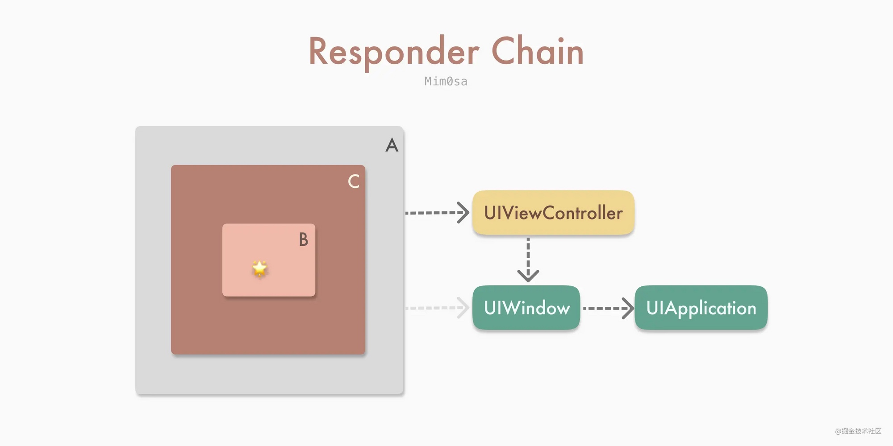
当确认响应链后，就会调用 UIResponder 中对应的方法：
class TouchesExampleView: UIView {
override func touchesBegan(_ touches: Set<UITouch>, with event: UIEvent?) {
print("Touches Began on " + colorBlock)
super.touchesBegan(touches, with: event)
}
override func touchesMoved(_ touches: Set<UITouch>, with event: UIEvent?) {
print("Touches Moved on " + colorBlock)
super.touchesMoved(touches, with: event)
}
override func touchesEnded(_ touches: Set<UITouch>, with event: UIEvent?) {
print("Touches Ended on " + colorBlock)
super.touchesEnded(touches, with: event)
}
}
如果是 UIControl 或者其子类，则会拦截掉其响应链的事件传递，不会向下调用 UIResponder 的相关方法。 UIScrollView 也是相同的工作机制。

- 在
UIResponder的touches系列方法中的UITouch包含了收集到 的UIGestureRecognizers。在触发touches方法的过程中，也会判断UITouch是否符号收集到的手势； - 当成功识别手势时，第一响应者会收到
touchesCancelled方法，且不会再收到来自该UITouch的touches事件，同时该UITouch关联的其它手势也会收到touchesCancelled。使得可以独占该UITouch； - 手势未识别成功时，
UIGestureRecognizer的state为.possible，表示可能有机会识别成功。

相关的属性配置
cancelsTouchesInView，默认为true，如果设置为false，那么当手势识别成功时，不会发送touchesCancelled给目标视图，目标视图还可以继续处理其它方法，比如说UIControl的.touchUpInside对应的方法等；delaysTouchesBegan，默认为false。当设置为true时，touches的系列方法会延迟到手势识别成功或者失败之后才开始；delaysTouchesEnded，默认为true，touchesEnded则会延迟大约 0.15s 触发，如果设置为false，那么touchesEnded则不会延迟，双击手势也会被识别为两次单击。
UIControl 与手势识别
UIControl 接收 Target-Action 方法的方式是在其 touches 方法中识别、接收、处理，而手势的 touches 方法一定比其所在视图的 touches 方法早触发。对于自定义的 UIControl 来说，手势识别的优先级比 UIControl 自身处理事件的优先级高。
- 如果同时给
UIControl添加了.touchUpInside方法和UITapGestureRecognizer，只会处理UITapGestureRecognizer； - 如果给已经添加了
UITapGestureRecognizer的视图添加一个UIControl作为子视图，同时给这个UIControl添加.touchUpInside方法，最终也只会处理该视图的UITapGestureRecognize，不会处理.touchUpInside方法，如果是UIButton，则会优先处理UIButton的方法； - 如果想要两种都生效，可以设置
cancelsTouchesInView为 false 。
手势识别器在大多数情况下，识别屏幕触摸事件的优先级，比控件本身的方法的优先级高。
iOS 事件机制
事件生命周期：
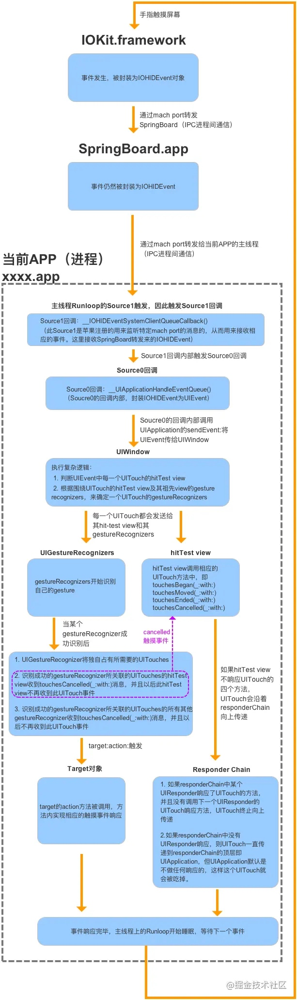
- 系统通过
hitTest:withEvent:方法沿视图层级树从底向上（从根视图开始）从后向前（从逻辑上更靠近屏幕的视图开始）进行遍历，最终返回一个适合响应触摸事件的 View ； - 原生触摸事件从 Hit-Testing 返回的 View 开始，沿着响应链从上向下进行传递；
- 系统在探测阶段结束后创建了
UITouch，并封装了UIEvent将其传递； - 手势上下文
UIGestureEnvironment最先收到UIEvent，并负责通知给相关的UIGestureRecognizer； UIGestureEnvironment根据UIGestureRecognizer的delegate方法来判断其是否能够对触摸事件进行响应；UIGestureRecognizer仍然会先于UIControl接收到触摸事件；UIButton等部分UIControl会拦截其父View上的UIGestureRecognizer，但不会拦截自己和子View上的UIGestureRecognizer；UIButton会截断响应链的事件传递，也可以利用响应链来寻找 Action Method 。
应用
扩大子视图的点击范围
本文先是介绍了响应链的基本原理，然后讲述了如何响应在父视图外的子视图点击事件。
全局监听用户的点击事件
之前做过一个需求是用户在一定时间内没有点击屏幕就进行一些处理，我们可以对响应事件的顶层 UIApplication 进行操作，hook 它的 sendEvent: 事件，在用户停止点击时开始计时，记录用户没有点击的时间，进行一些操作。有几个需要注意的地方：
sendEvent不仅仅是处理点击事件，所以需要判断下allTouches.count是否为 0 ，如果为 0 则表示不是点击事件；- 如果
touch.phase == UITouchPhaseBegan表示用户点击屏幕，停止计时； - 如果
phase == UITouchPhaseEnded，则表示有手指离开屏幕，因为有可能是多指同时点击，所以这里记录下countOfEnded，如果touches.count == countOfEnded，表示所有手指都离开屏幕，可以开始计时；
- (void)dt_sendEvent:(UIEvent *)event
{
[self dt_sendEvent:event];
if (event.allTouches.count == 0) {
return;
}
NSArray <UITouch *> *touches = [event.allTouches allObjects];
NSUInteger countOfEnded = 0;
for (UITouch *touch in touches) {
UITouchPhase phase = touch.phase;
if (phase == UITouchPhaseBegan) {
// 开始点击，停止计时
// stopTimer
return;
} else if (phase == UITouchPhaseEnded) {
countOfEnded += 1;
}
}
// 所有点击事件都结束，开始计时
if (touches.count == countOfEnded) {
// startTimer
}
}
巧用 UIApplication 的 sendAction
iOS Responder Chain: UIResponder, UIEvent, UIControl and uses
这篇文章虽然也是讲了下 UIResponder ， UIEvent 和 UIControl ，但是后面有几个非常有趣的用法。
final class BlinkableView: UIView {
override var canBecomeFirstResponder: Bool {
return true
}
func select() {
becomeFirstResponder()
}
@objc func performBlinkAction() {
//Blinking animation
}
}
UIApplication.shared.sendAction(#selector(BlinkableView.performBlinkAction), to: nil, from: nil, for: nil)
//Will precisely blink the last BlinkableView that had select() called.
BlinkableView 的 canBecomeFirstResponder 返回 true ，调用 select 时 becomeFirstResponder() 。然后说下具体用法，比如说现在我们想让当前的 BlinkableView 执行 performBlinkAction() 方法，其它的 BlinkableView 都不执行，可以通过 UIApplication.shared.sendAction(#selector(BlinkableView.performBlinkAction), to: nil, from: nil, for: nil) 方法来达到目的，当响应链找到第一个 BlinkableView (firstResponder) 时就会停止。
final class PushScreenEvent: UIEvent {
let viewController: CoordenableViewController
override var type: UIEvent.EventType {
return .touches
}
init(viewController: CoordenableViewController) {
self.viewController = viewController
}
}
final class Coordinator: UIResponder {
weak var viewController: CoordenableViewController?
override var next: UIResponder? {
return viewController?.originalNextResponder
}
@objc func pushNewScreen(sender: Any?, event: PushScreenEvent) {
let new = event.viewController
viewController?.navigationController?.pushViewController(new, animated: true)
}
}
class CoordenableViewController: UIViewController {
override var canBecomeFirstResponder: Bool {
return true
}
private(set) var coordinator: Coordinator?
private(set) var originalNextResponder: UIResponder?
override var next: UIResponder? {
return coordinator ?? super.next
}
override func viewDidAppear(_ animated: Bool) {
//Fill info at viewDidAppear to make sure UIKit
//has configured this view's next responder.
super.viewDidAppear(animated)
guard coordinator == nil else {
return
}
originalNextResponder = next
coordinator = Coordinator()
coordinator?.viewController = self
}
}
final class MyViewController: CoordenableViewController {
//...
}
//From anywhere in the app:
let newVC = NewViewController()
UIApplication.shared.push(vc: newVC)
// 源代码漏了这段，给补上
extension UIApplication {
func push(vc: CoordenableViewController) {
UIApplication.shared.sendAction(#selector(Coordinator.pushNewScreen(sender:event:)),
to: nil,
from: nil,
for: PushScreenEvent(viewController: CoordenableViewController))
}
}
调整后的响应链如下：
// MyView -> MyViewController -> Coordinator -> UIWindow -> UIApplication -> AppDelegate
当通过 UIApplication 发送 action 时，通过响应链查找可以找到 Coordinator ， Coordinator 通过 PushScreenEvent 进行 push 。
上面两个例子只是理论上可以这么做，原作者并没有在实际项目中尝试，这里是为了说明通过响应链做一些有趣的事情。
查找某个 UIView 所在 viewController
当我们需要获取某个 UIView 所在的 viewController 时，也可以通过响应链来进行处理：
extension UIView {
var closestViewController: UIViewController? {
if let nextResponder = self.next as? UIViewController {
return nextResponder
} else if let nextResponder = self.next as? UIView {
return nextResponder.closestViewController
} else {
return nil
}
}
}
Architectures
MVC
苹果关于 MVC 的介绍
如何使 UIViewController 更整洁
ObjC 中国 - 更轻量的 View Controllers
如何写出更好的 MVC
A Better MVC, Part 1: The Problems
问题：
- 违反封装，充斥着大量面条代码
- Massview View Controller
解决办法： 开发者为了解决上面两个问题通常会使用其它架构方式。但是会增加团队成员的学习成本。系统更新时也有可能需要更多时间来进行适配，同样地，如果你依赖了其它第三库，还需要等得第三库的更新。
A Better MVC, Part 2: Fixing Encapsulation
对 View Controller 进行解耦，View Controller 不需要知道其它 View Controller ，做法是生成一个更高层 View Controller，这个 View Controller 不包含其它逻辑，只负责对 View Controller 的跳转进行处理。所有子 View Controller 都通过它来进行跳转。
A Better MVC, Part 3: Fixing Massive View Controller
1 View Controller ≠ 1 screen of content
开始写 app 时，我们都会使用一个 View Controller 来表示一个屏幕的内容，但是当 app 变得复杂时，我们可以将某些比较复杂的界面分成多个小的 View Controller。
A Better MVC, Part 4: Future Directions
承接上面所说的 1 View Controller ≠ 1 screen of content，单个 cell 也可以使用单个 ViewController 来管理，将 cell 中的逻辑分离出来。 总结：
- 使用 View Controllers 来分解 UI
- 使用 View Controllers 来管理列表控件
- View Controllers 不一定要填充屏幕
A Better MVC, Part 5: An Evolution
作者在五个月后又写了一篇关于 MVC 的文章。
MVC 不是一种设计模式，是一种思想，它追求封装，将不同的东西分隔开来。 View Controller 其实不是 Controller，而是 View，它负责的其实是 View 相关的逻辑。 View Controller 应该只负责处理业务逻辑或者传递数据给它包含的 UIViews，不应该两者都包含。 UIViewControllers 应该只负责下面的其中一个部分：
- 组合 Child View Controller
- 给自己拥有的 UIViews 填充数据
So instead of saying a UIViewController should “manage either sequence or UI”, perhaps a better way of saying it would be that a UIViewController should either compose children or put stuff in to UIViews (with the understanding that this is a guideline, and not a rule).
关于 MVC 的一个常见的误用
传统 MVC 由于自由度非常大，没有规则显示，在经过业务迭代后，稍不注意 ViewController 就会膨胀为 Massive View Controller ，一些潜在问题：
- 包含 Model 层；
- 违反数据流动规则和单一职责。
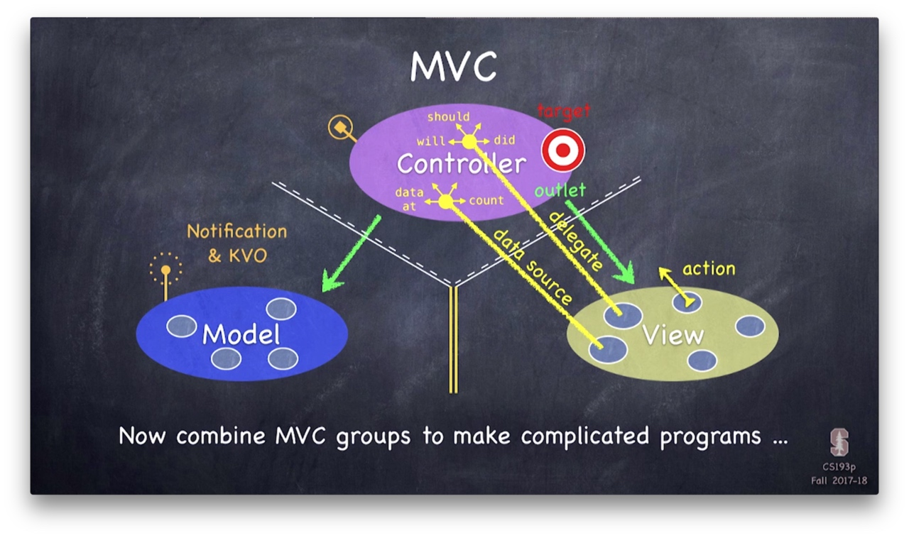
作者通过将 Model 层抽出和借助 KVO 简单录了一个单向流的 MVC ，意在说明即使没有借用其他结构（比如说 MVVM 和 RxSwift ），也可以写出一个符合规范和易维护的 ViewController 。
单向流数据流动
传统 MVC 的问题：
- 修改 UI 的代码到处散落，随着逻辑变得复杂， UI 的状态将难以追踪；
- 难以测试；
- 无法重构。
结合纯函数将其重构为单向流：
func reducer(state: State, userAction: Action) -> State
输出结果 State 只受输入 state 和 userAction 影响，在两者相同的情况下，输出 state 永远相同，其原理与 Swift 中的 reduce 函数类似：
func reduce<Result>(_ initialResult: Result,
_ nextPartialResult: (Result, Element) throws -> Result) rethrows -> Result
在实际使用中，仅仅靠纯函数可能无法满足我们的需求，有时候还希望有“副作用”选项，希望在完成异步操作后可以执行对应的 command ：
func reducer(state: State, userAction: Action) -> (State, Command?)
整体的架构图

使用一个 Store 来存储 subscriber 和相关数据：
protocol ActionType {}
protocol StateType {}
protocol CommandType {}
class Store<A: ActionType, S: StateType, C: CommandType> {
let reducer: (_ state: S, _ action: A) -> (S, C?)
var subscriber: ((_ state: S, _ previousState: S, _ command: C?) -> Void)?
var state: S
init(reducer: @escaping (S, A) -> (S, C?), initialState: S) {
self.reducer = reducer
self.state = initialState
}
func subscribe(_ handler: @escaping (S, S, C?) -> Void) {
self.subscriber = handler
}
func unsubscribe() {
self.subscriber = nil
}
func dispatch(_ action: A) {
let previousState = state
let (nextState, command) = reducer(state, action)
state = nextState
subscriber?(state, previousState, command)
}
}
ViewController 通过 subscribe 方法来订阅数据源的改动进行 UI 调整， 通过 dispatch 传递 action 。同时也编写了一些单元测试来证明其可测试性。
这里在没有接入三方库的情况实现了单向数据流，如果想要尝试，也可试一下
Objective-C 版本在这里：
提供了一个 RFStore 的 Store 基类，内部做了一些 hook 处理，对于 action 开头的 selector 调用，都会调用 listeners 的 block ：
+ (void)hookActionMethodsIfNeededForClass:(Class)class {
static const void * const kHasHookedKey = &kHasHookedKey;
@synchronized(class) {
id hasHooked = objc_getAssociatedObject(class, kHasHookedKey);
if (!hasHooked) {
unsigned int outCount = 0;
Method *methods = class_copyMethodList(class, &outCount);
for (unsigned int i = 0; i < outCount; ++i) {
Method method = methods[i];
SEL selector = method_getName(method);
NSString *methodName = NSStringFromSelector(selector);
if (![methodName hasPrefix:@"action"]) {
continue;
}
[RFStore registerActionForClass:class selector:selector];
}
objc_setAssociatedObject(class, kHasHookedKey, @YES, OBJC_ASSOCIATION_RETAIN_NONATOMIC);
}
}
}
+ (void)registerActionForClass:(Class)class selector:(SEL)selector {
[class rfaspect_hookSelector:selector
withOptions:AspectPositionAfter
usingBlock:^(id<RFAspectInfo> aspectInfo) {
RFAction *action = [[RFAction alloc] initWithObject:aspectInfo.instance
selector:selector
arguments:aspectInfo.arguments];
NSArray *globalListeners = [objc_getAssociatedObject([RFStore class], kListernersKey) allObjects];
NSArray *listeners = [objc_getAssociatedObject(action.object, kListernersKey) allObjects];
dispatch_async(dispatch_get_main_queue(), ^{
for (RFSubscription *subscription in globalListeners) {
subscription.block(action);
}
for (RFSubscription *subscription in listeners) {
subscription.block(action);
}
});
}
error:nil];
}
listeners 使用 weak 的 NSPointerArray 进行存储，所以当 ViewController 释放后， RFStore 也会释放掉：
+ (void)associateObject:(id)object withSubscription:(RFSubscription *)subscription {
@synchronized(object) {
NSPointerArray *listeners = objc_getAssociatedObject(object, kListernersKey);
if (!listeners) {
listeners = [NSPointerArray weakObjectsPointerArray];
objc_setAssociatedObject(object, kListernersKey, listeners, OBJC_ASSOCIATION_RETAIN_NONATOMIC);
}
[listeners compact];
[listeners addPointer:(void *)subscription];
}
}
作者在最后提到对于 Reflow ，更重要的是其架构设计和规范：
- model 对象不可变；
- 整个 app 的数据存于 store 层；
- 更新和通知也收拢于 store 层。
阅读
未来简史

第1章 人类的新议题
这正是历史知识的悖论。知识如果不能改变行为，就没有用处。但知识一旦改变了行为，本身就立刻失去意义。我们拥有越多数据，对历史了解越深入，历史的轨迹就改变得越快，我们的知识也过时得越快。
第7章 人文主义革命
他们认为战争是光荣的、开战的理由是正义的、领军的将军是个天才，但经过几个星期真正的战火洗礼，所有的泥泞、流血加上死亡的气味，让他们的幻想一一破灭。如果他们活了下来，这些原本天真的士兵离开战场后，就会成为更聪明的人，不再相信学校、电影和政客花言巧语中的陈词滥调与理想。
剑桥大学、索邦大学和伯克利大学（当时还有“伯克利人民共和国”的戏称）的学生，除了会翻阅毛主席的“红宝书”，也会把切·格瓦拉的英雄肖像挂在床头。
虽然西方学者和运动人士最爱挑自由主义一揽子方案的毛病，但至今仍未能提出更佳的选项。
没有信仰，火车就不能决定要开往哪个方向。
塑造历史的，往往是一小群向前看的创新者，而不是向后看的大众。
要达到马克思所称“各尽所能、各取所需”的理想，社会就必须让距离遥远的各种产品都能够方便集中及分配，而且整个国家也要能够监控和协调国内所有的活动。
第8章 实验室里的定时炸弹
许多妇女分娩时都会经历难以忍受的痛苦，这会让人认为，只要生过一次，没有哪个心智正常的女性会愿意再生一次。但在分娩后的几天，内分泌系统会分泌皮质醇和β–内啡肽，舒缓疼痛，让人感到安慰，甚至是欢快，再加上对小婴儿的爱与日俱增，又得到来自亲友、宗教和民族主义宣传的多方赞誉，从而合力把分娩从创伤转为正面记忆。
叙事自我有一把锋利的剪刀、一支黑色的粗马克笔，一一审查着我们的体验。至少有某些令人恐惧不悦的时刻就这样被删减或抹去，最后整理出一个有欢乐结尾的故事，归档备存。
我们的叙事自我宁可在未来继续痛苦，也不想承认过去的痛苦完全没有意义。
人类十分擅长应付认知上的矛盾，能允许自己在实验室里信一套，到了法庭或议会又信完全不同的另一套。
第9章 大分离
- 生物是算法。每种动物（包括智人）都是各种有机算法的集合，是数百万年进化自然选择的结果。
- 算法的运作不受组成物质的影响。算盘的算珠无论是木质、铁质还是塑料质，两个珠子加上两个珠子还是等于四个珠子。
- 因此，没有理由相信非有机算法永远无法复制或超越有机算法能做的事。只要运算结果有效，算法是以碳为载体还是以硅为载体又有何差别？
人工智能目前绝无法做到与人类匹敌。但对大多数的现代工作来说，99%的人类特性及能力都是多余的。人工智能要把人类挤出就业市场，只要在特定行业需要的特定能力上超越人类，就已足够。
想要不被淘汰只有一条路：一辈子不断学习，不断打造全新的自己。只不过，许多人，甚至是大多数人，大概都做不到这一点。
美国生物科技公司越来越担心，由于美国严格管控个人隐私，导致未来可能将整个基因市场拱手让给中国。
正如卡尼曼的冷水实验，叙事自我到了政治领域，一样会遵循“峰终定律”，忘了绝大多数的事情，只记得几件极端的事件，并对最近的事件赋予完全不成比例的高权重。
在欧洲帝国主义的全盛时期，殖民者和商人用彩色的珠子，就从当地人那里换来了整座岛屿、整个国家。而在21世纪，个人数据可能是大多数人能够提供的最宝贵资源，但我们正亲手把这些数据交给各大科技企业，好换来免费的电子邮箱或是有趣的小猫视频。
自由主义面对社会不平等的解药，不是让每个人都有同样的体验，而是对于不同的人类体验赋予同等的价值。
第10章 意识的海洋
新宗教浮现的地点，不太可能是阿富汗的洞穴或是中东的宗教学校，反而会是研究实验室。就像社会主义承诺以蒸汽和电力为世界提供救赎，在接下来的几十年间，新的科技宗教也可能承诺以算法和基因为世界提供救赎，进而征服世界。
智人之所以统治世界，并不是因为智人的情感更深刻或音乐体验更复杂。至少在某些体验领域里，智人确实可能不如鲸鱼、蝙蝠、老虎或鹈鹕。
现代人类已经患上“错过恐惧症”（Fear Of Missing Out，FOMO），总在担心自己错过了什么；虽然手中的选择比以往任何时候都多，但选了之后又很难全心全意对待。
数百万年来，人类曾经是升级版的黑猩猩。而到了未来，人类则可能变成放大版的蚂蚁。
人的意志是宇宙中最重要的东西，同时人类在开发能够控制、重新设计意志的科技。毕竟，能够控制全世界最重要的东西，岂不是太棒了？然而一旦这样的控制成真，过去神圣的人类就会成为另外一种设计品，反而让科技人文主义不知该何去何从。只要我们仍然相信人类的意志和经验是权威和意义的本源，就永远无法处理和这些科技的关系。
第11章 数据主义
这种所有数据都由单处理器来处理并决定的极端情况，就是苏联式共产主义。在苏联经济里，号称要让人人“各尽所能、各取所需”。换句话说，政府会把你的利润全部取走，再判断你有什么需求，并提供给你。
资本主义能够赢得“冷战”，是因为至少在这个科技加速改变的时期，分散式数据处理的效果就是比集中式数据处理更好。
政府确保教师每月拿到薪水、下水道不会堵塞，却不知道20年后国家该走向何方。
整部历史的进程就要通过4种方式，提高系统效率：
- 增加处理器数量。拥有10万人口的城市，运算能力会高于拥有1000人口的村庄。
- 增加处理器种类。处理器不同，运算和分析数据的方式就不同。因此，如果单一系统拥有不同种类的处理器，就能增加其动力与创意。农民、祭司和医生对话中所产生的想法，可能是狩猎采集者之间怎么谈都不会谈到的。
- 增加处理器之间的连接。如果只是增加处理器数量和种类，但彼此之间无法连接，仍然没有意义。10个有贸易网络连接的城市，产出的经济、科技与社会创新通常会高于10个孤立的城市。
- 增加现有连接的流通自由度。如果数据无法自由流通，仅仅连接处理器也不会有什么用处。这就像是在10个城市之间修建了道路，但路上满是劫匪，商人或旅行者难以通行，这条路的作用也就会大打折扣。
我们常常想象，民主和自由市场之所以获胜，是因为它们比较“好”。但事实上，它们之所以胜出，是因为改善了全球数据处理系统。
但数据主义指出，民众真正想要的并不是车辆本身，而是移动的便利，只要有优秀的数据处理系统，就能简单又有效地提供这种移动的便利。
没有人能真正理解全球经济如何运作，也没有人知道全球政治将走向何方。但也没有人真的需要理解这一切。你该做的，就只是回信回得更快（而且允许系统存取这些内容）。
现代的新座右铭是：“如果你体验到了什么，就记录下来。如果你记录下了什么，就上传。如果你上传了什么，就分享。”
汽车取代马车，我们并不是让马升级，而是直接让马退休。或许，智人也到了该退休的时候。
我们自己设定的标准，会让我们也走上猛玛象和白鳍豚的灭绝之路。到时回首过去，人类也只会成为宇宙数据流里的一片小小涟漪。
- 科学正逐渐聚合于一个无所不包的教条，也就是认为所有生物都是算法，而生命则是进行数据处理。
- 智能正与意识脱钩。
- 无意识但具备高度智能的算法，可能很快就会比我们更了解我们自己。 这三项发展提出了三个关键问题，希望读者在读完本书之后，仍能常挂于心：
- 生物真的只是算法，而生命也真的只是数据处理吗？
- 智能和意识，究竟哪一个才更有价值？
- 等到无意识但具备高度智能的算法比我们更了解我们自己时，社会、政治和日常生活将会有什么变化？